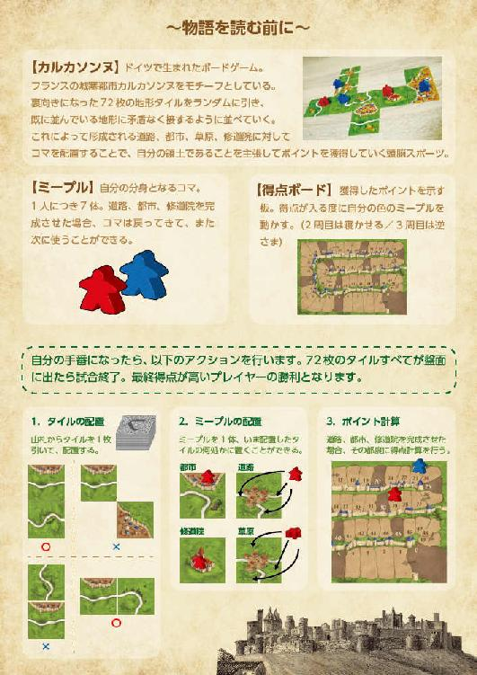

| 君といたカルカソンヌ (ごきげん文庫) | |
| 小川 光一 | |
| スターティアラボ株式会社 (2017) | |
本作品の全部または一部を無断で複製、転載、配信、送信したり、ホームページ上に転載することを禁止します。また、本作品の内容を無断で改変、改ざん等を行うことも禁止します。
本作品購入時にご承諾いただいた規約により、有償・無償にかかわらず本作品を第三者に譲渡することはできません。
本作品は縦書きでレイアウトされています。
また、ご覧になるリーディングシステムにより、表示の差が認められることがあります。

君たちが言いたいことはよく分かる。「カルカソンヌって何だよ！」って、そう言いたいんだろ？ ボクも初めてこの単語を知った時は「は？」って思ったよ。洋菓子の名前みたいだしね。
ちなみにボクはオセロがとっても強いんだよ！ たぶん宇宙人にも勝てるんじゃないかな。つまり、ボクは宇宙一のオセロプレイヤーってこと！ かっこいいでしょ？ 惚れないように気をつけなベイベー！
オセロ。あ、違う。カルカソンヌ。ドイツで生まれたボードゲーム。モチーフとなったのは、フランス南部にある城塞都市カルカソンヌなんだよ。
名前の由来はね、七世紀にこの城塞都市を守り抜いた女領主カルカスから来ているんだってさ。
当時、侵略軍と長年に渡る攻防を繰り広げて、城内には食料が無くなりかけていた。けれど、カルカスはある作戦を思いついたの。なんと、市民が持ってきた貴重な豚を城外に投げたんだよ。わけわかんないよね。
でも、それを見た侵略軍が、豚を捨てるくらい食料たくさん残ってんのかーい、って勘違いして、軍を撤退させたんだってさ。
カルカスはその勝利を祝って、鐘を鳴らしたらしい。そして、その音を耳にした撤退中の軍人が、フランス語で「Ｃａｒｃａｓ ｓｏｎｎｅ（カルカスが鐘を鳴らした）」って記録を残した。これが名前の由来。
パワフルすぎるぜ、女領主カルカス。もし投げた豚を「は？」って無視されたら、大事な城塞都市、壊れていたかもしれないのに。きっと鋭い洞察力を持っていて、こうすれば勝てるって流れが見えたんだろうな。
カルカソンヌっていうボードゲームもね、それに似ているところがある。72枚のタイルをランダムに引いて、その時々のベストな位置に置くから、何試合やっても同じ盤面には巡り会えないんだ。だから、将棋やチェスにあるような定跡が著しく少なくてね。こうしたほうが良いというのも曖昧で、無限の可能性が広がっている。「豚を今投げれば勝てる！」みたいな流れが読めるプレイヤーのほうが強いんだよ。
これは、ある兄弟を中心に据え、個性豊かな人々が織り成すカルカソンヌ物語である。とはいえ、ウラジーミル・プロップやクロード・レヴィ＝ストロースによる構造分析的な視点よりも、ポール・リクールが主張した個人の自己同一性を意識して読み進めることが望ましいかな。あ、ごめん。頭良い人ぶってみたんだけど、自分でも何言ってるか分かんないや。てへ。
つまり、簡潔に述べると、カルカソンヌで、ヒューン、ドーン、ピッピッピッとする一年間を綴った物語である。うん、こっちのほうが分かりやすいよね。物語ってクロッシュみたいなところあるじゃん？ 料理に被せる銀色の半円。開ける前のワクワクする感覚。要するに心で感じろってことさ。
ちなみに、クロッシュって、フランス語で「鐘」という意味だったりします。
おあとがよろしいようで。
いやあ、決まったねこりゃ。どう？ こんな始まり方も、悪くないよね？ それじゃあ、早速君たちをこの物語に招待するよ。レッツカルカソンヌ！ 素敵な夢のひとときを！
１
七月の終わり、庭先のサネカズラが花を咲かせた。花言葉は「再会」だ。
森沢舞太は警察署に向かっていた。夕日は沈み始めている。助手席の窓から見える東京の街並みは変わり果てた。身長の高いビルが増えたことで、夕日が見えない角度が随分と増えてしまった。比較対象は幼少期だ。四半世紀でこんなにも景色は変わるものなのか、たまたまそんな時代を目まぐるしく生きているのか。
三年間も音信不通だった兄・森沢刀馬との再会は、逮捕者と身元引受人という関係性の上で、果たされることになった。
舞太はこれまでの二十三年間、ずっと刀馬に対して苦手意識を持って生きてきた。その主な原因は、万能な兄に対する劣等感である。深刻なほどではないから質が悪い。辺りが少しずつ暗くなっていくにつれ、それに比例して自分の気持ちも沈んでいくのが分かった。舞太の幼馴染である花谷英男が車を出してくれたことによって、刀馬と二人きりにならないことが救いだった。
「英男、ごめんね。急なお願いを聞いてもらって」
「お前何回謝るつもりだよ、気にするなって！ そんなことよりも刀馬くんに会えるとか、テンション上がるわ！ ガキの頃のヒーローだったからな！」英男は右折方向にハンドルを切りながら言った。警察署に行くテンションじゃないだろ、と舞太は心の中で苦笑した。
舞太は社会人一年目、食品会社のカスタマーセンターでクレーム処理の仕事をしている。真っ先に謝罪せず、まずはしっかりと事実関係を確認するように、と上司に何度言われても、すぐに謝ってしまう。悪い意味での大型新人だ。これは部署内では少し有名な話である。
この日も朝からクレーム対応に奔走していた舞太だったが、一本だけ都内の警察署からの電話が混じった。最初は、警察からクレームだなんて自分の手には負えない、とパニックに陥ったが、電話の内容は業務とは関係のないものだった。
警察の話によると、刀馬は駅前で見知らぬ人と殴り合いの喧嘩をしているところを、駆けつけた警官に逮捕された。けれど、どちらも大した怪我はなく、反省もしているということで、微罪処分となったらしい。
微罪処分となった人間は、身元引受人となる監督者に迎えに来てもらわなければならない。森沢家は、父親が幼い頃に蒸発し、母親は三年半前に他界している。他に兄弟はいないし、刀馬も未婚のようだ。つまり、舞太は彼にとって、身内と呼べる唯一の人間なのである。
「でもさ、逮捕されるなんて森沢家の恥だよ。弟として恥ずかしい」舞太の侮蔑は溢れるばかりだった。「普通は逮捕なんてされなくない？ 大の大人が、駅前で喧嘩なんてしなくない？」
「まあ、落ち着けって。おれは人のこと言えねえけど、すぐに釈放ってことは、前科があんまりないってことだろ？ 刀馬くん意外と真面目に過ごしてきたんだな」
「英男は前科あり過ぎなんだよ」舞太は遠慮なく言った。
英男は二文字で表現するなら「不良」、四文字で表現するなら「チンピラ」だ。短めの髪をすべて金色に染め上げていて、つり目の上に乗っかっている眉毛は薄い。建設会社でとび職人をしている仕事柄なのか、常につなぎ服を着ている。短気な性格が、常にハイテンションである人格を見事に暴徒化させ、十代の頃は問題ばかり起こしていた。
舞太が小学校四年生の時、英男は秋田から引っ越してきた。別々の中学校に進学して、一度は疎遠になったが、高校生の時に駅前で再会し、それ以来ずっと良好な関係が続いている。しかし、英男は何故こんなにも正反対な自分と仲良くしてくれているのだろう、と舞太は一週間に一度くらいのペースで考える。この不思議な疑問は、答えが導かれた試しがない。
「逆にお前は優し過ぎなんだよ。前科どころか、人を殴ったことさえないだろ」英男は窓を開けて煙草を吸い始めた。「十歳からお前のこと見てきたけどな、蚊を殺したところさえ、見たことないぞ」
「蚊だってがんばって生きてるんだから、血液くらい分けてあげないと」舞太は真面目な顔で言った。
「ピュアなのか、変態なのか、分かりませんな」英男は煙草を口にくわえたまま言った。
警察署での手続きはあっという間に終わった。舞太は、再会に対する緊張と、逮捕されたことに対する怒りが入り混じって、終始落ち着かない心地だったが、刀馬があまりにもケロッとしていたので、拍子抜けしてしまった。
刀馬は、二十七歳になったとは思えないほど、三年前のまま若々しさを保っていた。端正な顔立ちで、頬骨の張った横顔は精悍な面魂を醸し出していた。口ひげをたくわえ、目にかかるくらいの髪の毛は、明るい銀髪がメッシュ状に入っていて、それはもう、おっかない。
先ほどまで警察沙汰になっていたとは思えないほど、車内は賑やかだった。すべて英男と刀馬のせいである。旅行帰りかと錯覚してしまいそうな明るいドライブではあるが、もちろん手元にお土産などはない。
「いえーい！ 刀馬くん、まじ久しぶりっすね！ あ、煙草いります？」
「英男は相変わらずテンション高いな！ 煙草はやめたから大丈夫！」
「え！ 若い頃からあんなに吸いまくってたのに！ これは明日の朝刊に載りますね」
「兄貴、ちょっとは反省してるの？ 逮捕されるまで喧嘩するなんてありえないよ」
「まあまあ。そんなことよりも、舞太も元気だったか？ 彼女できたか？」刀馬は後部座席から前のめりになって訊いた。
「余計なお世話だよ」舞太は答えた。
「こいつ多分一回も付き合ったことないっすよ。森沢兄弟せっかくイケメンなんすけどね、刀馬くんと違って、気弱過ぎるんすよ」英男は舞太を横目にヘラヘラと言った。「いっそのこと一目惚れでもして、ガーッとなったほうがいいんじゃない」
「一目惚れなんてもの、あるわけないよ」舞太は、この手の話題で明るいニュースを提供できたことがなく、すぐに話題を変えた。「ところで兄貴、どこ住んでいるの？」
「先月まではずっと大阪に。今は渋谷辺りだよ」
「関西にいたんすか！ びっくり！ びっくり栗きんとん！」英男のハイテンションは持久力に定評がある。「近くに戻ってきたんすね！ 今度遊びましょうよ！ 最近ハマってるものとかあります？ ダーツ？ ビリヤード？」
「カルカソンヌだな」
「まじっすか!? めっちゃ懐かしい！」
「え、ボードゲームの？ あのカルカソンヌ？」舞太は、どんなゲームだったか思い出すために、五秒ほどの時間を費やした。
刀馬が家を出ていく数か月前、つまりはもう三年以上前のことになるが、一度だけ三人でプレイしたことがあった。ある日、困っている人を助けたら、その人がカルカソンヌの基本セットをくれたらしく、漫画みたいな展開だろ？ と刀馬がニヤニヤしながら家に帰ってきたのだ。
そのボードゲームは、城や道路などを完成させて得点を競う内容だった。二十分程度で一試合が終わるような軽いゲームだったが、気づけば朝までやり込んでしてしまったのは、一つの思い出だ。
「毎年夏に日本一を決める大会があるんだけど、三年連続で入賞してる。今年は準優勝」
「全日本二位すか！ やっば！ 刀馬くんは天才だな！」
「兄貴、一体何してたんだよこの三年間......」
舞太は、奇天烈な刀馬の偉業に驚いた。人助けの御礼にもらった謎のボードゲームで、知らないうちに日本の頂点に上り詰めかけていたなんて、一秒足りとも想像したことのないシナリオだった。
「あ、ちなみに長野龍築って知ってます？」英男はバックミラー越しに刀馬に訊いた。
「え、知ってるよ。カルカソンヌ四天王の一人。今年の二回戦で倒したわ」
「龍築さん、おれのいとこなんすよ！」
「まじか！ 苗字違うし気づかなかったわ」
「龍築さん大阪に住んでるし、おれとは一回り年齢も離れてるんで、あんまり仲良くはないんですけどね。去年の正月に親戚で集まった時に初めて知りました。いやー、世間って狭いすね」
「それだけ俺たちがまだ狭い世間でしか生きられていないってことだろ。もっと自分の世界を広げていかないと」刀馬は窓の外を眺めながら冷静に言った。
「やっぱ刀馬くんはスケールが違うな！ 今度、おれたちにカルカソンヌ教えてくださいよ」赤信号で車が止まっていたので、英男は後ろを向いて言った。
「いいよ。そしたら、明日の夜に実家帰るわ。舞太も英男も家にいといて。あれ、もう渋谷？ ここで降りるわ」刀馬は後部座席のドアを開いた。「今日はありがとな。あ、感謝のしるしにこのミープルキーホルダー二人にやるよ。ちゃんと付けておけよ」
ポケットから出した二つのキーホルダーを座っていた席に置き、刀馬は渋谷の街へと消えていった。
十秒ほどの間で色々なことを決定して素早く去ってしまった兄貴は、相変わらず人とは違う思考回路で動いているのだな、と舞太は感心した。
２
舞太と英男は駅前の居酒屋にやってきた。チェーン店にしては寂れた佇まいで、いつも客の入りは少ないが、焼き鳥の焼き加減がとにかく絶妙なのがこの店の特長だ。
ただし、ハズレの日がたまにある。そこに関しては、恐らく素材の問題ではなく、焼き鳥を焼くのが異次元的に上手な社員が一人いるのだろう、と舞太と英男は見解を一致させていた。その人が誰なのかを割り出し、毎週どの二日が休みなのか、自分たちにもシフト表を共有して欲しいくらいだった。
「はい！ 何にか分かんないけど、かんぱーい！」生ビールが二つ到着するなり、英男はジョッキを右手で掴んで叫んだ。
これは英男のお決まり文句である。本当に何に対しての乾杯か分からない場合も、「かんぱい」という四文字だけよりは寂しくないし、何かしら乾杯の意味がある場合も、「いや何にか分かるでしょ」というツッコミで一つの笑いが起きる。実に機能的なフレーズだと思うし、彼のユーモラスなところを舞太はいつも尊敬している。
「今日は車出してくれてありがとう！ 明日もよろしく！」
「お安い御用！ そして、明日のカルカソンヌは楽しみでしかない」
「久しぶりにミープル見たよね」舞太は刀馬がくれたキーホルダーをポケットから取り出して言った。「これゲームで使う実物と一緒かな。木製ってところが、味があっていいよね」
「本物かもな。ミープルって一人七体だっけ？」
「確かそうだよ。ミープルがさ、一回使って終わりじゃないのがいいよね。得点する度に戻ってきて、また次に使って。なんかミープルが生きている気がして、愛着湧いたなあ」舞太はそう言ってから、キーホルダーをテーブルの端に飾った。
ミープルは、人のような形をしている。両足が一番大きい分、下半身に重心があるので、テーブルにはどっしりと直立してくれた。星にも見えるフォルムがかわいい、と舞太は思う。
「それにしても、まさか刀馬くん今年の準優勝プレイヤーとはな」
「びっくりしたね。兄貴は子どもの頃から周りに天才って言われながら育ったから、当然と言えば当然だけど」
「舞太、今も刀馬くんのこと苦手なの？ 口数少なかったけど」
「やっぱり分かった？ まあ、今日は逮捕されたことに怒っていたのもあるけどね。苦手というか、一緒にいると劣等感を感じるというか。兄貴も兄貴で小さい頃からいつも僕のこと使い走りにしていたし、普通の兄弟よりも目に見えない上下関係ができているんだと思う」
「なるほどねえ。天才な兄を持つと、そんなに萎縮してしまうものなのか。兄弟がいないおれには分かんねえな」英男は席を立ち上がり、お手洗いのほうへと歩いて行った。
舞太は、いつだって刀馬と比較されながら生きてきた。何でもすぐにできる刀馬と、何でもできるまで時間がかかる舞太。別にできないわけではない。刀馬と比べられると、どうしても劣ってしまうだけなのだ。気づいた時には、自分に自信を無くしていた。そして、その原因の一端が刀馬にあると思うと、申し訳なくなってしまって、自己嫌悪してしまうのだ。悪循環である。
舞太は一度リラックスすることにした。知らないうちに溜め込んでいた息を大きく吐き出し、店内を見渡す。アルバイトの人たちはみんな忙しそうだ。肝心の焼き鳥を焼いている社員は、特定できない。
客席はカウンター席が十五席、テーブル席が三十席といったところだろうか。半分以上の席は空いている。金曜の夜なのに、この調子でお店はやっていけるのか。そんな余計なことまで考えてみる。
最後の視線の先として、隣のテーブルに目を向ける。二人の女性が座っていたことは気づいていたが、ちゃんと見たのは初めてだった。
ここで予期していなかった事態に舞太は見舞われた。対角線上にいる女性の美しさに、ハートを射抜かれてしまったのである。
視界が急に明るくなる。彼女の周りにキラキラした粒子でも飛び散っているのだろうか。陽気なラテンミュージックが店内に流れ始め、テーブルに置いてあったミープルが音楽に合わせて踊り出す！ すごい！ なんだこれは！ と思ったが、それは気のせいだった。舞太は首を左右にぶるっと振って、現実に戻る。落ち着け自分。こういう時は冷静に分析だ。
自分より年上だろうか。綺麗さの中に可憐さも潜んでいる風貌。たれ目で大きな瞳、きりっとした鼻筋、どこか日本人離れした顔立ち。ダークブラウンな毛髪はボリューミーで、ゆるふわっとしている。そして、笑った時に縦に長く伸びるえくぼは国宝級だ。彼女の笑顔がもっと見たい。ああ、ダメだ。冷静になんてなれない。
しかし、女性経験の乏しい内気な舞太である。話しかけることなんてできるわけがない。お手洗いから戻ってきた英男に小声で話しかける。
「ねえ、英男。僕の斜め前に座っている人、かわいい......」
「うわ！ お前がそんなこと言うの初めてだぞ！ これは明日の朝刊に載るな」
明日の英男新聞は森沢兄弟のニュースで持ち切りだ。敏腕編集長・花谷英男は横目でさりげなく隣のテーブルを見る。
「よく見えないけど、確かに綺麗な人っぽいな。話しかけてみろよ」
「無理だよ。僕の性格分かるでしょ？」
「さっき刀馬くんが、自分の世界を広げていかないとって言ってたじゃん」
「あれって恋愛の話じゃないでしょ」
ヒソヒソと話していたことでかえって目立ってしまったのか、彼女は舞太に向けて唐突に視線を向けた。一瞬だが、目が合ってしまい、舞太はすぐに視線を落とす。怪しまれたに違いない。終わった。自分は怪しい人だ。不審者だ。もう今すぐにでも家に帰ってふて寝してしまいたい。そのまま朝なんて来なければいい。舞太の頭の中は、再び悪循環である。
しかし、今日は音信不通だった刀馬がいきなり姿を現した日。いつもとは何かが違ったようだった。
「あー！ それミープルですよねっ！ カルカソンヌされるんですかあ？」彼女はテーブルに立っているミープルキーホルダーを指さして言った。
「............」舞太は一瞬何が起きたのか分からず、沈黙した。「......え、は、はい。そ、そうです」
「すごーい！ ミープルって星みたいでかわいい形してますよねっ」彼女はお構いなしに会話を続けた。
「そ、そうですね」自分でもびっくりするくらいつまらない返答をしている、と舞太は焦った。
「すいませんね。こいつシャイなやつでして。緊張しているんだと思います。お姉さんたち、ここら辺の方ですか？」英男が堪らず会話に入った。
舞太が心を奪われた女性は、瀬川夏という名前だった。
自分たちの年齢を告げると、二歳年上であることが判明した。同じ駅に住んでいて、駅前の花屋で働いている。ハーフ顔だけど純日本人。身長１６７センチで、トマトが好き。方向音痴で、鳥が嫌い。これらはもちろんすべて英男が聞き出した情報である。
鳥が嫌いと知った時、舞太は慌てて、自分のテーブルにあった焼き鳥を夏からできる限り遠ざけた。それを見て、彼女はくすっと笑った。舞太としては大真面目にやったことだったが、彼女の国宝級えくぼを見ることができて嬉しくなった。
「舞太っていうの？ すっごくかわいい名前だねっ。舞ちゃんって呼んでもいい？」夏は舞太の目を見つめて言った。もう射抜かれるハートはこれ以上残っていない。
「い、いいですよ」舞太は勢いに便乗して言う。「あの、夏さんって呼んでも、いいですか？」
「それって普通じゃーん。どうぞお好きなようにっ」夏は白い歯を見せて笑った。
それから十分くらい話をした。今日は仕事終わりに、向かいに座っている先輩と一緒に飲みにきたらしいが、その先輩が私には話しかけないでオーラを前面に押し出していた分、夏の人懐っこさは引き立っていた。
「あ、あたしたちそろそろ帰らなきゃあ。明日も仕事なの。舞ちゃん、英男くん、ありがとう。また駅前とかで見かけたら声かけてねっ」
出口に向かう夏を見送ろうと、舞太は反射的に席を立ち上がったが、仕事じゃないんだからそこまでしなくていいんだよ、と英男に着席を促された。店を出る瞬間、夏が舞太のほうを見て、手を振った。遅れて振り返した手は、彼女に見てもらうことができなかった。
三十分後、舞太と英男も店を出た。人気のない夜道を歩く。少し酔っているのだろうか。舞太は舞い上がる気持ちを抑えきれず、夜の街を走り出した。しかし、一直線に走り続けてしまったら、英男が置いてけぼりになってしまうので、離れては戻ってを繰り返す。
「ピュアなのか、変態なのか、お前まじで分かんねえな！」英男は舞太の奇行を楽しんでいる。
「大丈夫！ 酔ってないから！」舞太は走り続けた。そして、叫んだ。「夏さーーーーーん！」
「おいおい。一目惚れなんてものあるわけないって言ったのは、どこのどいつだよ。舞ちゃんよ」
七月の終わり、恋の風が吹いた。夏がミープルを知っていた理由は聞き忘れてしまったが、カルカソンヌをやる理由は十分にできた。
こうして話すことができたのも、ミープルキーホルダーをくれた刀馬のおかげである。最高の兄貴だと思うと同時に、自分の思考回路はこんなに単純なものだったのか、と舞太は驚いた。
３
「今日はありがとな。あ、感謝のしるしにこのミープルキーホルダー二人にやるよ。ちゃんと付けておけよ」
ポケットから出した二つのキーホルダーを座っていた席に置き、刀馬は渋谷の街へと繰り出した。
久しぶりに再会した弟は、昔と変わらず肌が白く、ひ弱そうだった。ゴツゴツとしたのど仏やシャープな目元など、ギャップ萌えを狙えるパーツも持っているのに、活かそうとも思っていない惰気が、ありありと顔に出ている。のど仏たちもきっと泣いていることだろう。平々凡々とした黒髪に関しては、何も言うことさえない。
刀馬は六月から渋谷に暮らしている。東京を離れたい理由ができて大阪に引っ越したが、地元に戻りたい理由ができて戻ってきた。
南口に面する大通りの四本ほど裏に、刀馬の住んでいるアパートはある。鉄筋コンクリート打ち放しの外観は、無骨で荒々しい。そのくせ表面に触れてみると、すべすべとしていて、この灰色の塊は何がしたいのか分からないな、と刀馬は物件見学以来欠かさず思っている。
刀馬は二階まで上がり、一番手前の扉を開いた。表札には椎谷と書いてある。
「きらり、いる？ ただいま」刀馬は言った。奥から足音が近づいてきた。
「おかえり。昨日の夜から全然帰って来ないから、どこかで倒れてるんじゃないかって心配したんだよ」きらりは言った。刀馬は携帯電話を持っていないので、より一層心配させてしまったのだろう。
椎谷きらりは、刀馬の恋人だ。交際年数は五年になる。
切れ長の瞳に、すっと通った鼻。あごが細く、全体的にシャープな輪郭。典型的なキツネ顔女子である。茶色い髪の毛は真っすぐ鎖骨まで伸びている。ギャルっぽい外見と同時に、落ち着いた雰囲気を持ち合わせている。渋谷の中心街で営業しているアパレルショップで、一ヶ月前から働いている。
「心配かけて悪かった。街で喧嘩して、逮捕されてた」刀馬は穏やかな顔をして言った。
「わーお。刀馬まじ？ あれ冗談で言ってたのかと思ってた」きらりは目を丸くして言った。「まさか舞太くんも、お兄さんが意図して作り上げたシチュエーションだとは思わなかっただろうに......」
「あれは冗談だよ」刀馬は否定した。
数か月前、刀馬はきらりにこんな話をしていた。まず、弟に会いたい。ただ、三年空いてしまって、どんな顔をして実家に帰っていいか分からない。そうか、強制的に再会すればいいのか。前科はないし、駅前で喧嘩して捕まれば、微罪処分になって、警察署で弟と再会できる。以上である。
「天才なのか、変態なのか、分かりませんな」きらりは刀馬の発想が全く理解できなかった。
「いやいや、ほんと偶然だってば。きらり、お昼寝してたの？ 眠そうだね。コーヒー淹れてあげるよ」刀馬は優しい声で話題を変えた。
「ありがとう。どうしていつもこんなに眠いんだろ。お店でもいっつもあくびしそうになる」
二人はリビングの中央にある黒いローテーブルを挟む形で座り、熱いインスタントコーヒーをすすった。二人ともブラック派なので、この部屋にはミルクも砂糖も置かれていない。
しかし、きらりのコーヒーにだけ、いつも必ず入っているものがある。それは、ハチミツでも、生クリームでもなく、刀馬のミープルだ。
コーヒーをすするという行為を通して、強い愛を示すことができる人間は、地球上に自分しかいない、と彼女は自負している。
きらりは、カルカソンヌのルールを知らないし、この部屋にあるミープルたちが実際に公式戦で使われているのかさえ分かっていない。それでも、ミープルを浮かべてコーヒーを飲むという行為は、彼女なりの刀馬への愛情表現なのである。
ちなみに、コーヒーカップに口をつけて飲んでいると、ミープルがきらりのくちびるに稀に当たることがある。彼女が言うには、その瞬間が、とりわけ一番の表現どころらしい。
「今日も俺は愛されてるね」刀馬は、きらりのコーヒーカップを覗いて、笑った。
天才の発想は分からない、ときらりは言う。けれど、分からないなりに自力で編み出したこの奇抜な手法は、確かに刀馬に届いているのだ。
「明日、三年ぶりに実家に帰ることになった。カルカソンヌのルール教えてくる」
「良かったね。計画的に再会して、謎のボードゲームに巻き込んで、なんか展開が怖いよ」
「別にミステリー小説とかじゃないんだから」刀馬は咳払いをしてから、畏まって言った。「舞太と一緒に、俺たちの青春を取り戻すのさ」
ミープルは自分がどんな役割を果たしているのかも分からず、コーヒーカップの中をぷかりぷかりと泳いでいた。
４
翌日の夕方、舞太は来客に備えて、近所の商店街に買い物にやってきた。
森沢兄弟が生まれ育った街は東京南部にある。住宅整備と都市開発が進んだ先進的な街並みは、東京の一隅とは思えない都会の様相だ。その一方で、駅の南側には、神奈川との県境となる巨大な川が広がっており、風情を感じることができる景色も数多く取り揃えている。舞太は、この街のどこかに夏も暮らしていると思うと、ドキドキして落ち着かなくなった。この気持ちは何なのか。これが恋というものなのか。
商店街の中腹辺りに差しかかると、こぢんまりとしたパン屋が視界に入ってきた。店の名前は「ボンフィン」である。
茶色いレンガタイル張りの外壁がレトロな空気を演出しており、アンティーク調な深緑の扉は、店内が異世界への入り口のように錯覚させる。普段食べることのできない特別なパンを食べられるかもしれない、と思わせることはとても重要である。
店頭の看板ボードには「パン焼けてます」とかわいらしい文字で書いてあった。パン屋なのに、パンが焼けていなかったら大問題だ。この言葉が「営業中」と同じ意味なのだろう。
森沢兄弟にとって、このパン屋は思い出深い場所だ。もう少し正確な言い方をすれば、舞太が刀馬に使い走りにされてよく通っていた場所である。
二人ともこの店のカレーパンが大好きだった。サクサクとした歯ごたえのある生地は天然酵母が使われていて、中身はキドニービーンズがゴロゴロと入ったキーマカレーだ。子どもの頃はよく分かっていなかった味の深みが今なら分かる。
そして、このパン屋には、もう一つの注目すべき個性が備わっている。緑の扉の横にある大きなサンプルケースには、人気パンのサンプルが五個ほど並べられているのだが、それらと並ぶようにして、クマのぬいぐるみが紛れているのである。それによって、舞太は毎回この場所を素通りさせてもらうことができない。
行儀良くパンと一緒に座り込んでいる彼は、明るめの茶色い毛に全身が纏われ、クリクリした目で外を眺めている。大きさはパンの五倍くらいあるのだが、頭部が天井のガラスにぶつかり、首を傾げた状態になっている。その角度は三十度ほどだろうか。
どんな経緯でケースの中に詰め込まれているかは知らないが、自分の殻を破って飛び出すことのできない舞太にとって、彼も同じ境遇にいる、と感じてやまないのである。舞太とクマは気づけば友達になっていた。
舞太はこの場所を通る度に、彼に向かって心の声で話しかけるようにしている。その日あった出来事を話す時もあるし、隣に並んでいるクロワッサンやチョココロネが一体何なのか、彼が自分はパンだと勘違いしないようにフォローしつつ、説明する時もある。いつも話題は尽きないが、他の通行人には、どのパンを買おうか悩んでいる人にしか見えないので、好都合だ。あくまで心の中で話しかけているだけなので、自分はおかしな人ではない、と舞太は信じている。
舞太は買い物を済ませ、自宅に戻ってきた。森沢邸は、築三十年の二階建て。外壁はベージュ色に塗装されていて、こげ茶色の屋根は、最上部から二方向に下がっている切妻屋根と呼ばれるタイプのものだ。黒い鉄製の門を通ると、玄関の手前に小さな中庭があり、たくさんの花が植えられている。
舞太のお気に入りはサネカズラという花だ。七月から八月にかけて咲く花びらは淡いクリーム色で、主張し過ぎていない点が好印象だ。葉はやや肉厚で先の尖った円形、つるがよく伸びて塀に絡み付いている。秋になると光沢のある赤色の果実が熟すので、二段階で楽しめる。舞太がサネカズラを好きな最大の理由は、母親が生前に一番好きだった花だからである。
三年半前、舞太が成人式を迎えた時、それに安心したのか、母親は急に持病を悪化させて、この世を去った。死因は安心感です、と医者に言われたわけではないが、彼女が舞太に言った最後の言葉は、これで安心して死ねるわ、だった。
物心が付いていない頃に父親は家を出ていったので、森沢兄弟にとって母親への愛情は何よりも強いものだった。刀馬がこの家を去ったのも、その後である。
舞太は中庭で立ち止まり、しばらくサネカズラを眺めていた。すると、家のチャイムの音が鳴った。門の前に目をやると、走り去っていく三人の若者の後ろ姿が見えた。悪戯をされた、とすぐに気づいた。
「こら、まったくもう」舞太は門のほうまで歩きながら小さな声で呟いた。もちろん舞太には怒る度胸なんてない。
門の前まで行くと、小柄な少年が立っていた。
「あの、通りがかりの者です。恐らくですが、彼らは同じ高校の生徒だと思います。なので、高校を代表して、彼らのピンポンダッシュを、ぼくが謝ります。代表します。すいませんでした」少年は深々と頭を下げた。
「え、あ、大丈夫ですよ。全然怒ってないので」舞太は不意の謝罪に慌てふためいた。謝ることはあっても、謝られることにはあまり慣れていない。
大人びた口調とは対照的に、少年の声は高かった。高校生には見えない幼い風貌で、身長も１６０センチにさえ満たないほどだったが、白いポロシャツ姿は凛々しかった。
「心のお広い方で良かったです。夏休みが始まったばかりで、きっと浮かれてしまっているのでしょう。温かい目で見守ってあげたいと思います。それでは失礼します」少年はそう言ってから、ずり下がったメガネを持ち上げ、足早に商店街の方向へ去って行った。
変な立場でものを言ってはいたが、その礼儀正しさに舞太は好印象を持った。
「あれ、舞太。隠し子？」その少年とすれ違うようにして、刀馬がやってきた。横には女性も一人立っている。
「はじめまして！ 楓でーす！」楓は舞太に向かって、元気よく挨拶をした。
５
舞太は食器棚から三つグラスを引き出した。オレンジジュースを注ぐ手が少し震えている。
二日連続で初対面の女性と話すことは、舞太の私生活において滅多にあることではない。こんな時に限って、英男から遅刻するという連絡が入った。
刀馬はリビングをうろうろと歩いていた。様々な物に手を触れ、自分が里帰りをしたという事実を確かめているかのようだった。その行為をしばらく続けた後、彼は話し始めた。
「この子、伊藤楓。二十歳だっけ？ 元々は大阪で知り合ったんだけど、今は東京の大学に通ってて、偶然この駅に住んでるんだわ。楓もカルカソンヌできるから、紹介しようと思って」
「よろしくお願いしまーす！」楓は小さくお辞儀をした。
楓は、綺麗な丸顔をした女性だった。少し顎が出ているが、それを物ともしない滑らかな曲線。クリクリした瞳を中心に、幼く見える顔立ちだ。１５０センチほどの身長と、舌足らずな口調が、その幼さを更に際立たせている。きめ細やかな長い黒髪は、後ろでポニーテール結びをしている。
「なんだ、兄貴の彼女かと思った。きらりさんとまだ続いているの？」
「きらりとは続いてるよ。こいつは、妹みたいなもんかな。よし、じゃあ楓、説明よろしく」刀馬はぶっきらぼうに言った。彼女が少しむすっとして、頬を膨らませたところを、舞太は見逃さなかった。
刀馬はバッグから長方形の青い箱を取り出し、舞太に手渡した。マットな質感、ずっしりとした重みがある。箱の中を開けると、ミープル五色×八体、得点ボード一面、地形タイル72枚が入っていた。三人でそれらをガラステーブルの上にばらまいた。
舞太はタイルを１枚だけ手に持ってみた。５センチ四方くらいの正方形で、厚さ２ミリくらいの厚紙で作られている。得点ボードも同じ素材だが、それなりに力を入れなければ、折り曲げることはできなそうだ。三年前の感触は、思ったよりも指先に残っていた。申し訳程度の懐かしさを感じる。
「舞太さん、ルールとか覚えていますか？」
「うーん、曖昧なんだよね。申し訳ないけど、一からお願いしてもいい？」
「もちろんですよ。そのために来たんですから」楓は柔らかい表情で微笑んだ。「まず、公式戦で使うことができるミープルは、赤、青、黄色、緑、黒の五色です。その内の一色を選んで、一体を得点ボードの０点に置きつつ、残りの七体を使って闘います」
「この五色が基本色なんだね」
「そうです、そうです。そして、こいつらが地形タイルです。草原、道、都市、修道院の何かしらが描かれていて、十九パターンの模様があります。タイルを交互に引き続けて、すべてが盤面に出切ったら試合終了です」
「これ種類ごとに枚数が決まっているんだっけ？」舞太はタイルを物色しながら確かめるように訊いた。
「ああ、決まってるよ」刀馬は横槍を入れた。「何が残っていて何が残っていないかを把握しつつ闘うことができれば、自分の可能性に気づけるし、相手の可能性を阻止することができる」
「そういう駆け引きもあるんだね」三年前の一夜漬けでは分からなかったことを、刀馬は既にたくさん知っている。彼の横槍は抽象的な言い回しではあったが、この三年間に及ぶ兄弟の開きを実感するには十分過ぎる言葉だ、と舞太には思えた。
楓の丁寧なレクチャーは一時間近く続いた。かわいらしい雰囲気とは対照的に、とても真面目な性格の持ち主で、舞太は好感を持った。彼女の分かりやすい説明のおかげで、基本ルールを確実に思い出すことができたし、彼女は大学ノートで事前にメモを作ってきており、それを舞太に手渡してくれた。もちろん英男の分もある。
「最後に得点計算をして勝敗を決めます」楓によるレクチャーの締めくくりは、最終得点計算についてだった。「草原の得点に併せて、戻ってこなかった未完成のミープルたちも最後にすべて加算されます。道も、都市も、修道院も、タイル１枚につき１点です。都市だけ通常の半額ってことになりますね」
「つまり、ミープルが手元に残っていたら、もったいないってこと。全部ばら撒いて、１点でも多く加算するように」刀馬は付け加えた。
「最後の得点計算。三年前は知らずにやっていたよね？」舞太はそう言ってから、目尻を下げた。
「そうそう。俺たち全然ルール分からずにやってたみたい」刀馬もつられて表情をゆるめる。「最後に計算する感じが囲碁に似ているよな」
「あ、確かに。子どもの頃によく一緒にやったね。懐かしい。兄貴に勝ちたくて、図書館に通い詰めた時期あったなあ」舞太はふと思い出して呟いた。
「懐かしいと言えば、これ覚えてるか？」刀馬は、平行双子都市のタイルを掲げた。二つのフタが対極的に描かれ、正反対の方向を向いている。真ん中には、砂時計のような形の草原が広がり、二つの都市を分断しているかのようだ。
「覚えているよ、ジブラルタル。兄貴が命名したよね」舞太は答えた。
刀馬は三年半前、このタイルがジブラルタル海峡に見える、という理由から「ジブラルタル」と名付けた。ジブラルタル海峡とは、ヨーロッパ大陸とアフリカ大陸を隔てる海峡のことである。彼は、草原を海原、上部のフタをスペイン南部、下部のフタをモロッコ北部に見立て、例えたのだ。
「俺、このタイルが一番好きなんだよね。都市をテンポよく作りやすいし、状況によっては分断までできるし」刀馬は言った。「あと、この正反対の方向を向いてる感じが俺とお前っぽいじゃん」
「すてき、兄弟タイルやね」楓は、兄弟の思い出話に触れて、とても楽しそうだった。
ひと通りのルールをさらい終えて、実戦に移ることになった。ガラステーブルの上に広がった72枚のタイルを裏向きに戻し、両手の掌を使ってかき混ぜる。タイル同士が擦れ合う音がカチカチとなって心地よい。
その味わい深い音に耳を澄ましていると、チャイムが鳴る音が聞こえた。そして、間もない内に、勝手に玄関の扉が開く音がする。ハイテンション暴君・英男の登場だ。
「はいどうもー！ 花谷デリバリーセンターですー！」英男は得体の知れないダンスをしながら部屋に入ってきた。両膝を交互に持ち上げると同時に、リズミカルに回転している。楓は、見ず知らずの金髪ダンサーの登場に酷く怯えている。
「あ、知らないお嬢さんいた。失礼しました」英男は楓の怯える表情を見つけて、踊りを止めた。「刀馬先生、遅れてさーせんした！ 差し入れに寿司を買ってきました！」
「それで、デリバリーセンターなんて言ったんだね。ごめん、楓ちゃん」舞太は重ねて謝罪した。「花谷英男、僕の幼馴染です。いつもハイテンションで......」
森沢兄弟は実戦に移った。安全に都市を建築するコツや、草原に寝るタイミングなど、刀馬の細かい説明に舞太は必死に食らいついた。その真横で、楓は英男にも同じレクチャーをした。金髪ダンサーの戦慄に打ち勝って丁寧に教える楓は強い女性だ、と舞太は思った。
ひと通りの指導が終わり、ガラステーブルの上には寿司が広がった。
英男は楓を甚く気に入ったようで、彼氏はいるのか、何故そんなにかわいいのか、様々な質問を投げかけてはいたが、基本的に話題はカルカソンヌから逸れることはなかった。舞太は気を遣って、刀馬が嫌いなイカやタコを中心に口に運ぶ。
「刀馬くん、今年の準優勝ばかり話題になってますけど、一昨年も去年もベスト８まで進んだんですよ」楓はサーモンを右手に持ったまま、自慢げに言った。「うちにとっては出場さえ夢のまた夢です」
「競技人口ってさ、どのくらいなの？」舞太は刀馬に訊いた。
「定義自体が曖昧だけど、百万人くらいかな。将棋やチェスが五百万や千万だから、それに比べたら小規模だな。でも、この統計にはファミリーゲームとして嗜んでいる人も含まれているから、実力者は実際もっと少ない。だからこそ日本一取れるんじゃねえかって思って、俺も始めたんだけど」
「なるほど、刀馬くんは目の付け所まで天才なんすね！」英男はいつもの調子で刀馬を崇めた。「ちなみに選手権のシステムってどんな感じなんすか？」
「毎年七月の第二土曜日に東京で行われるよ。三十二名で一発勝負のトーナメント。五回勝てば優勝」刀馬は電話の横に置いてあったメモ帳台を手に取り、三十二名の内訳を書き始めた。
全日本カルカソンヌ選手権大会
・昨年度ベスト８ →８名
・第一選考会（３月第２土曜） 全国12会場 上位１名通過 →12名
・第二選考会（５月第２土曜） 全国６会場 上位２名通過 →12名
「ってことは、刀馬くんはシード枠で選考会免除なんすね！」英男は言った。「こりゃ、みんなで来年の選手権を目指すしかねえな」
「英男、俺もそれを話したかったんだよ」刀馬は一人一人の顔を見ながら熱く語り始めた。「カルカソンヌは裏向きのタイルを引いていく以上、どうしても運の要素が介在する。技術は七割、運は三割って言われることが多いかな。だからこそ、ある程度まで強くなりさえすれば、自分より格上の相手をなぎ倒す余地が、どんどんと生まれる競技なんだよ」
「ジャイアントキリングってやつやね」楓は補足した。
「選手権なんてまさにその舞台だよ。ドラマチックな夏にならないわけがない。なあ、舞太。来年の選手権を一緒に目指さないか？」
舞太は「ナツ」という言葉を耳にして、ドキッとした。これから暑い季節が話題になる度に、会話に支障を感じるのだろうか。そっちの夏は、サマーとみんな言ってくれたらいいのに。
「どう？ 一緒に出ない？」刀馬が再び質問する。舞太は話題に集中し直す。
「カルカソンヌから生まれるドラマ、面白そうだね。でもさ、今から一年間で間に合うかな」
「お前ならいけるよ。俺のスピードと比べてきた大人たちが悪いだけで、舞太は舞太のペースで焦らずにやれば、必ず力を発揮できる、って俺は思ってる」
舞太は不意を突かれた。自分の劣等感を、刀馬も刀馬で、ずっと意識してくれていたのかもしれない。お前ならいけるという言葉は、舞太の勇気を想像以上に奮い立たせた。これは自分に自信をつけるという意味でも良い機会なのかもしれない。
「......選手権、僕も目指してみる」
「うちも出たい！ 刀馬くんと......」楓は、舞太の決心を待ってから、刀馬を見つめて言った。
「よし。そうと決まったら、さっきの続きだ。朝まで特訓するぞ」刀馬は、両手でテーブルを優しく叩いて、みんなを鼓舞した。
四人は次週の土曜日に再び集まり、決起集会を行う約束をした。駅前で適当に夕食を食べようという流れになった。
楓は、日付が変わる前には帰宅した。彼女を家まで送った時、英男が楓のあだ名をシンデレラにしようと言い出したが、秒速で却下された。森沢邸に戻った三人は、時間も忘れて特訓に励んだ。
刀馬はずっと笑っていた。兄貴がこんな顔を見せるのは、子どもの頃以来ではないか、と舞太は思ったが、三年半前に夜更かしした時にも、たくさん笑っていた気もする。
ネガティブな感情ばかりに包まれていたが、刀馬との楽しかった記憶も、本当はたくさん眠ってしまっているのかもしれない。
朝日は昇り始めている。外が少しずつ明るくなっていくにつれ、それに比例して自分の気持ちも昇っていくのが分かった。
１
刀馬は二週間前の出来事を思い出していた。全日本カルカソンヌ選手権大会の決勝戦。対戦相手は、人類最強カルカソンナーの呼び声が高い鴻野秀吉だった。彼には前人未到の選手権四連覇がかかっていた。
会場のホールには、巨大ディスプレイが設置されており、決勝卓が映し出されている。観客たちが固唾を飲んで見守る中、秀吉の先手で試合は始まった。彼のトレードマークである紺色のチェスターコートは、椅子の背もたれにかけてある。
刀馬はこの日、秀吉に対するリベンジに燃えていた。一昨年の選手権、昨年の選手権、刀馬を二度の敗退に追いやったのは、まさに目の前にいるこの男だったからである。この三年近い年月、刀馬の標的は秀吉ただ一人だったのだ。
秀吉のカルカソンヌは、難攻不落だった。些細なミスさえない彼の打ち筋に、間然するところは微塵もない。手堅さと鋭さは、お互いの出番をよく熟知しており、これ以上ないタイミングで、彼の手から次々に繰り出される。
また、１点でも上回れば勝ち、を真に理解しているプレイヤーであることも恐ろしい。どんな劣勢においても、規格外の終盤力で、試合を土壇場でひっくり返してしまう。彼の底力によって、苦杯をなめさせられたプレイヤーは数知れない。
序盤は、屈指の建築力を競い合う形でスタートした。
秀吉の比類なき技術に対して、刀馬の打ち筋にも遜色は全くなかった。二人によって作り出される思慮深い盤面に、観客たちは感嘆の吐息を漏らしている。
しかし刀馬は、そんな決勝戦に相応しい滑り出しを、急にぶち壊し始めた。徹底的な妨害策に乗り出したのである。秀吉は不意を突かれ、瞬く間に苦しい状況に追い込まれていく。
刀馬は、相手のミープルの回転率を下げることにおいて、傑出した評価を得ていた。例えば、相手の都市に道を刺すような手である。横から一本の道が刺さるだけで、配置できるフタは半分以下に減少してしまう。スポーツ競技と同じように、自分が得点することに加えて、相手の得点を抑えることも非常に重要なのだ。
その一方で、相手の妨害ばかりしていると自分の建設のために手が使えない、というデメリットもある。そのリスクを承知の上で、刀馬は唐突な妨害戦略を心に決めていたのだ。
「極端な戦法ですね。素晴らしいバランスをお持ちの森沢くんらしくない」
「秀吉さん相手ですからね。この試合は奇を衒っていきますよ」
「楽しみです。誠意を持って、受け止めさせてもらいます」
少しばかりの会話の後、秀吉が飴玉をバリっと噛み砕く音が、刀馬の耳に届いた。
秀吉は試合中に飴玉を噛み砕くことがある。それは、集中している証なのか、イライラしている表れなのか、勝機を見出した昂揚なのか。銀縁メガネの奥に秘める彼のポーカーフェイスから、その真意を読み取れた者は誰もいない。これはカルカソンヌ七不思議の一つと言われている。
中盤に差し掛かり、刀馬の妨害を秀吉が潜り抜け始めた。秀吉はミープルの回収確率を極端に減らされていたが、各所で引きたいタイルの形を徹底的に分散させることで、刀馬の奇抜な戦略にずっと耐えていたのである。ミープルたちが少しずつ彼の手元に戻ってくる。
緻密な計算の元で選び抜かれた秀吉の防御力。分かってはいたが、彼の粘り強さには目を見張るばかりだ。ここに来て、秀吉に10点ほどのリードが生まれる。
「しまった！」刀馬は思わず大きな声で叫んだ。観客たちは何のことか分からず、ざわざわとする。
「さすが森沢くん。気づくのが早いですね」
秀吉は刀馬の猛攻にただ耐えているだけではなかった。自分が後々リードを奪った時のことを考えて、刀馬に再び形成をひっくり返されぬように、逆転の芽を徹底して潰していたのだ。
どこを見渡しても、上手い具合に可能性が消されている。綱を渡りたくても、肝心の綱が切られていれば、どんなに優れたバランスの持ち主でも、向こう岸には渡れない。
残りタイルは15枚。今から逆転の芽を作ろうにも、その足場を作るだけでも二手、三手はかかってしまう。間に合うのか。きっと秀吉はその綱を切ることに注力してくるだろう。どうする。どうする。
刀馬は最後まで逆転の芽を与えてもらうことができなかった。最終得点は71対80。すべての得点計算が終わった瞬間、会場は拍手喝采に包まれた。運も介在するはずの競技において、四連覇という偉業が達成された瞬間だった。
「おめでとうございます。清々しいほどの完敗です」
「ありがとうございます。森沢くんの高度なスキルを以ってして奇抜さを発揮されたら、一溜まりもありませんから。相当頭を疲弊させて闘いましたよ」
「本来の数値よりも桁違いに遠く感じられる９点差です」
「数字には、本来の数値とは別に奥行きもありますからね。あれ、三位決定戦はまだ終わっていませんね。盤面がよく見えないですけど、紙野さんが勝っているのかな？」
「秀吉さんから見て、俺に足りないものは何だと思いますか？」刀馬は唐突に訊いた。
「そうですね。森沢くんと対戦していて、いつも感じることが一つあります。非常に僅かですが、あなたはミープルを失うことを恐れている」秀吉は間髪入れずに答えた。「確かに手元に一体戻って来なくなるだけで、試合は終盤において不利になります。それでも、そのミープルを失いたくない執着は、あなたをマイクロレベルの世界で逃げ腰にしている。森沢くんの家族関係など、その背景は知る由もありませんが、失いたくなくても逃げてはいけない、と私は思います」
「想定外のアドバイスです。確かに思い当たることはありますね」
隣で行われていた三位決定戦が終わり、再び会場に拍手が起きる。先ほどよりかは小さな喝采だ。
最終結果が出た。優勝は人類最強カルカソンナー・鴻野秀吉。準優勝は新世代の寵児・森沢刀馬。三位は道のエキスパート・紙野広子。四位は草原エンペラー・倉爪草一郎となった。
例年安定して入賞を果たしている強豪たちの中に刀馬が食い込んだことは、カルカソンヌ界において、ビッグニュースとなった。三十八歳の秀吉と、二十七歳の刀馬による熾烈な決勝カードは、新旧天才対決という名称でもてはやされた。
しかし、天才とは一体何なのだろうか。みんなが気安く名付け合って良い言葉なのだろうか。
天才のひな型は、神である。その神が創った世界の欠けている部分を補っていくことが、天才と呼ばれる人間たちの役割だ、と刀馬は思っている。その姿は時に、神の領域に近づこうとしている人間の闘い、に見えるかもしれない。ミープルが八体あれば、鴻野秀吉はきっとカルカソンヌの神様にも勝つだろう。
刀馬も天才と呼ばれながら生きてきた一人だった。けれど、自分が天才ではないことくらい、子どもの頃からとっくに気づいていた。人よりも飲み込みが早くて、要領が良い、それだけだった。それでも、大人たちにがっかりされるのが怖くて堪らなかった。いつも天才のフリをして、結果を残すことに必死だった。
母親が亡くなった時、喪失感に支配された一方で、解放された、と刀馬は思った。それと同時に、子どもの頃にあんなに圧力をかけてきた大人たちも、これからは誰も自分のことなんて見なくなっていくのだ、ということに気づいた。少しだけ悲しくなった。
カルカソンヌ日本一の称号は、結果を残そうと必死にもがいてきた自分のために、最後の花道として選んだ闘いだった。
けれど、天才のフリをする才能だけでは、本物の天才を倒すことはできないのは薄々分かっていたことである。三度目の敗北は、踏ん切りをつかせるには十分過ぎるものだった。
そして、刀馬はもう一つのやり残したことに着手することにした。結果を残すために必死だったこの人生において、その過程で自分が舞太の自信を潰してきた、という自覚をずっと持っていたのである。大人の期待に応えるために、弟をフォローする余裕なんてなかったことが、心のどこかでいつも悔しかったのだ。自分がいなくなることで、舞太には伸び伸び過ごして欲しい。それが東京を離れた理由の一つだった。
天才のフリと決別することができた今こそ、舞太と一緒に青春を取り戻したい。準優勝した夜、刀馬はそっと自分の胸に誓った。
２
「さあ、続きまして！ 郷田っちのカルカソンヌ基本講座！ 番組ＭＣであり、カルカソンヌ十城将の一人である郷田吉彦が、基本戦術を解説していきまーす」楓は普段よりワントーン高い声で言った。
「本日のテーマは相乗りよ。既にミープルが置かれているオブジェクトに対して、自他共に別のミープルを置くことはできないのは、みんな知っているわよね？」郷田という小太りな中年男性は解説を続ける。「しかーし！ 都市、道、草原に関しては、後からつながるようにタイルとミープルを配置することで、横入りすることができるのよ！」
「ミープルがお互いに一体ずつの場合、同じ点数が一緒に入るんですけど、片方のプレイヤーが一体でも多い場合、そのプレイヤーにすべての点数が入ります」楓が解説を補助している。「せっかく自分の育てたものに対して、相乗りされるのはほんま嫌ですよねー」
「かえで殿のおっしゃる通り！ 例えば、相手が七手かけて育てた大都市に対して、横付けする、斜めのタイルでつなぐ、この二手で相乗りを成功させることができれば、相手の五手分を無駄手間にした、と捉えることができるわよね。相乗りは基本的なテクニックであり、強力な戦術なのよ。自分のオブジェクトに関しては、相乗りの芽を与えないように建設していきたいわね」
「郷田っち、解説ありがとうございました！ 『私とカルカソンヌ、どっちが好き？』 まだまだ続きまーす」楓はどっちが好きというところだけ、セクシーな表情を作って言った。
金曜日の夜、舞太はインターネットテレビ局で放送されている番組『私とカルカソンヌ、どっちが好き？』を観ていた。
先週この番組の存在を刀馬が教えてくれた時、観ないほうがいいですよ、と楓が語気を強めて言っていたのだが、つまりはそういうことである。彼女が番組アシスタントとして出演しているのだ。
舞太のパソコンを囲むようにして、仕事帰りで汗臭い英男と、下を俯いて恥ずかしそうにしている楓も座っている。明日の決起集会に向けて、三人でモチベーションを上げよう、という話になって集まったのだ。
それにしても、郷田のインパクトは強烈だった。オネエ口調とサイドを刈り上げた黒髪。黄緑色のネオンパーカーと紫に塗られたくちびる。気さくで優しいおじさんであることは強く伝わってきたが、一度立ってしまった心のさざ波は、しばらく静まってはくれなかった。
「ねえ、楓ちゃん。さっき郷田さんを紹介する時に言っていたジュージョーショーって何？」舞太は聞き慣れない単語が気になり、楓に質問をした。
「十個の城塞都市の将軍で、十城将です。カルカソンヌ界で最強の十人ってことですね。一月と七月の年二回、プレイヤーランキングが発表されるんですけど、上位十名が十城将、上位四名が四天王って呼ばれます」楓がパソコンの角度を自分のほうにずらしながら言った。「ちょっと触ってもいいですか？」
楓はキーボードをカタカタと叩き、カルカソンヌの公式サイトを表示させた。プレイヤーランキングと書かれている右端のバナーをクリックすると、上位99位までの順位とポイントが表示された。
１位 鴻野秀吉 １７１４Ｐ
２位 倉爪草一郎 １４７８Ｐ
３位 紙野広子 １４７０Ｐ
４位 長野龍築 １３９２Ｐ
５位 小長井穂高 １２８５Ｐ
６位 森沢刀馬 １２２６Ｐ
７位 入間川達也 １２２０Ｐ
８位 郷田吉彦 １２０９Ｐ
９位 亀川亮吾 １１８７Ｐ
10位 城田皇季 １１３１Ｐ
・
・
・
97位 家令真佐人 ５５０Ｐ
98位 平川都夢 ５３１Ｐ
99位 柴田南平 ５２２Ｐ
「すげえ！ 刀馬くん６位にいるじゃん！ 龍築さんも４位だし！」英男は興奮気味に言った。
「これ四年分の公式戦が加算対象になってるんですけど、刀馬くんは一年分のポイントが足りなくてこの位置なんです。なので、来年には四天王に入るのは確実だろうって言われているんですよ」楓は誇らしげに説明した。
「やっば！ さすがおれのヒーロー！ ......刀馬くんって本当にすげえ人なんだな」
「ちなみに十八都道府県に、ソンヌカフェっていうお店があって、定期的に大会が行われているんですけど、そこで試合すると、友達との練習試合でさえも公式戦って見なされます。ただ、試合の重要度とか、相手の強さとか、色々と掛け合わせて加算ポイントは算出されるので、選手権みたいな大舞台で活躍してなんぼですね」
「選考会、三月に十二会場、五月に六会場だったよね。つまり、その各地のカフェで一回ずつ開催されるってわけか」舞太は言った。
「え、その通りです。鋭いですね！ じゃあ、なんで十八店舗だと思います？」
「うーん。肝心の選手権を行う会場は別にあって、そこを加えると、十九になるから、全タイル十九種類と数が合う」
「あかん！ すぐ答えた！ 舞太くんすごい！」
「舞太は昔から、洞察力っていうの？ 半端なかったからな」
「......今から行ってみたい。 まだやってる？ 近い？」
「東京支店は渋谷にあるので、ここから近いですよ。営業時間は夜の十一時までです。余裕ですね」
「思いつきで行動するなんて、お前らしくないな！ 最高！ よし、今から三人で突撃しよーぜ！」
舞太はカルカソンヌの拠点スペースがあることを知り、無性に行ってみたくなった。英男の指摘通り、臆病な自分らしくはなかったかもしれない。けれど、そこに行けば世界が一気に広がり、何かが始まる気がした。
「ソンヌカフェ東京」は渋谷西部の郊外にあった。堂々とした邸宅風の佇まいをしていて、フォルムは箱型だ。玄関を中心に窓がシンメトリーに配置されており、赤いレンガ調のブリックタイルには重厚感がある。
店内は想像よりも広かった。入口には大きなレジが威張っているかのように佇んでいる。
通路は二手に別れていて、向かって左手のスペースは、飲食店として機能しているようだ。そして、向かって右手がカルカソンヌスペース。たくさんの試合卓が設置されており、今もまさに試合が行われている。飲食店スペースの二倍の広さはありそうだ。
入口に立っていると、飲食店スペースのほうからのみ、フレンチポップスの朗らかなＢＧＭが聞こえてくる。
「おい、試合するテーブルに青いマット敷いてあるぜ！ かっこいいな！ あ、あれ何？ ピッピッ鳴ってるやつ」英男は楓に訊いた。
「あれは対局時計です。二つの時間が交互に減っていくんですよ。自分の手番が終わって、ボタンを叩くと、ほら、見えます？ 自分の時計は止まって、相手の時間が減ってる。公式戦は持ち時間が一人につき十五分。超えたら負けです」楓は親切な説明を続けた。「あと、ついでの豆知識。公式戦では、先引きっていうのが許されています。相手がタイルやミープルを置いている間に、先に次のタイル引いて、考えていて良いんです」
「なるほど。先引きによって、自分の十五分だけじゃなくて、相手の十五分も使って、試合を運ぶことができるんだね」舞太は言った。楓と英男は、これだけの情報でまた分析を、と茶々を入れた。
「かえで殿！ どうしたの、こんな時間に珍しいわね！」入口にずっと立っていた三人に気づき、恰幅の良い男性が駆け寄ってきた。生で見る郷田である。三辺都市タイルみたいな体格をしている。
「わ！ 郷田っち！ すごい人の数やね」
「今日は定例大会の日だしね。それより、後ろのお二人さんは？」
「こっちが森沢舞太くんで、こっちが花谷英男くん。二人とも始めたばかりやねん」
「森沢？ お主、もしかして刀馬ちゃんの？」
「あ、はい。弟です。いつも兄がお世話になっております」
「あらやだ！ 兄弟揃ってイケメンなのね！ ちょっと待って、店長呼んでくるから」郷田は、見た目からは想像もできないような俊敏さを見せて、店内に消えていった。実物を目の当たりにして、ずっと笑いを堪えていた英男が、ついに吹き出した。
「くちびる、本当に紫色だったぜ」
足腰の弱そうな高齢の女性が、郷田と一緒に歩いてきた。白髪交じりの黒髪セミロング。前髪をワンブロックだけ赤紫色に染めている。穏やかな優しい顔付きと凛とした逞しい顔付きが混在した人だった。
「店長です。いつも刀馬には優しくしてもらっています。始めたばかりということで、森沢さんの成長も楽しみにしていますよ」店長は深々とお辞儀をした。
「ありがとうございます。努力します」舞太もお辞儀を返した。
「楓も久しぶりだね。すっかり今やカルカソンヌ界のアイドルじゃないの」店長はおだてた。楓は必死に謙遜をしていた。
数分ほど会話した後、ゆっくり見学していってくださいね、と店長は言って、店内のほうへと戻っていった。
店長が飲食店スペースと試合スペースを両方切り盛りしているようで、忙しそうな様子だった。店内にはアルバイトの女性が数名いる。郷田が言うには、みんな女子高生で、彼女たちもカルカソンヌができるようだ。
舞太たちは、店内を散策してみることにした。本物の城塞都市を見たことはないが、内装にはどこか中世のフランスを彷彿とさせるようなインテリアが飾ってある。大会を観戦している人たちが四方八方にいるため、奥のほうまでは進めなさそうだ。
「あ、シノブとオウギいた。店長の飼っている猫と犬なんです」楓は興奮しているようで早口だった。「猫のほうは、忍者の忍と書いて、シノブ。スコティッシュフォールドです。犬のほうは、扇風機の扇と書いて、オウギ。ボーダーコリーです。二匹ともめっちゃ利口で、試合を邪魔したことなんてないし、誰かがくしゃみすると店の奥に引っ込むんですよ！ 動物アレルギーの存在とか分かってるんですかね」
彼女の視線の先には、猫と犬が寄り添うように座っていた。インテリアに紛れるように、二匹は空間に優しく溶け込んでいた。
シノブは、ウトウトしていた。身体は白と黒のまだら模様で、前方に折れ曲がりながら垂れた短い耳はかわいらしい。自分の二倍くらいはある犬に寄りかかり、全幅の信頼を寄せている。毛色も似ているし、お父さんと思っているのかもしれない。
オウギは、キリッとした目で店内を見渡していた。怜悧な表情はどことなく店長に似ていて、とても賢そうだ。顔の真ん中に白いブレーズが入っていて、そこから左右対称に黒い部分が耳先まで広がっている。
そんな店長のかわいらしい小さな家族たちを温かく見守っていた矢先、一人の女性が二匹に近づき、オウギの背中を撫で始めた。その姿を見て、舞太は思わず大きな声を出した。
「夏さんだ！」
「うわ、本当だ！ 運命じゃね？ 話しかけてこいよ」
「いや、無理だよ。緊張するもん」心臓がドキドキする。やはり、夏さん。あなたが、好きなのだ。
二人のそんな会話に気づいたのか、夏は舞太たちの方向を向いた。どうやらこちらに来るようだった。黄色いワンピース。スカートの裾が揺れている。舞太の緊張はどんどん増していく。すると、隣に立っていた一人の男性が話しかけてきた。
「夏のお知り合いですか？」
身長が１９０センチくらいある綺麗な顔をした男性だった。目つきは猛々しく、黒く短い髪はジェルで逆立っている。
「そうです。こいつ夏さんに一目惚れしちゃって。もうメロメロなんですよ」英男が調子に乗った口調で答える。その男性の顔が歪む。舞太はしまった、と思った。
「皇季くーん、わんちゃんとねこちゃんかわいいよ。動物カフェみたいっ」夏はその男性に駆け寄ってきて、言った。舞太は、さっきの視線は自分に向けたものではなかったことにも気づいたし、彼女が何故ミープルを知っていたのかも悲しいことに気づいてしまった。
「あれ、舞ちゃんだあ！ こんなところで奇遇だねっ」夏は呑気な口調で言った。彼女は全く状況を把握できていない。
「はじめまして。夏の、彼氏の、城田皇季です」城田は彼氏であることをあえて強調して言った。
「あ......森沢舞太、です。はじめまして。あの......すいません」横で英男がしまった、という顔をしている。楓も状況を把握したようだ。苦しそうな顔をしている。
「夏が好きなんだって？ 困るんだけど、そういうの。見るからに情けない男が、俺の彼女に近づかないでくれるかな」城田はいきなり声のトーンを変えて、高圧的に言った。舞太は怖気づいてしまって、何も言い返せない。
「お前、それは言い過ぎじゃねえか。なんだよ、情けない男って。調子に乗んなよ。こいつに彼女奪われても知らねえからな」気が短いことで有名な英男が、舞太の代わりに挑発に乗ってしまった。舞太はもう声が出ない。何か言わなきゃ。謝らなきゃ。
「情けない男は情けない男だろ。それなら、夏を賭けてカルカソンヌで勝負するか？」
「止めてよ、皇季くん。舞ちゃんはただの知り合いだよっ」夏は城田の身体に手を触れ、制止した。
どうにか謝罪の言葉を絞り出そうとしていた舞太だったが、情けない男と何度も言われ、仕舞いには夏にただの知り合いと言われ、悔しい気持ちで満たされた。自分は友達以下の情けない男なのか。
こんなに誰かのことを燃え上がるように好きになったのは初めての経験だったし、お前ならいけると兄貴に言ってもらえて、これからカルカソンヌに全力で取り組んでいこうと思っている矢先の今だ。いつもみたいに逃げることは簡単だけど、きっと自分のことがまた昨日よりも嫌いになってしまうだろう。気弱な自分を打ち消したい。変わるなら今なのかもしれない。変えたい。変わりたい。そう思った時には、もう舞太のくちびるは、声を出すために動き始めていた。
「分かりました......来年の選手権であなたを......倒します」舞太は震えた声で言った。周囲はその発言に驚く。
「は？ 俺は十城将だぞ、勝てるわけがないだろ。そもそも選考会さえ抜けられるのかよ？」城田も城田で引き下がれないようだった。「まあ、いいだろう。その代わりお前が負けたら土下座してもらうからな。夏、帰るぞ」
「え、あ、うん。ごめんなさい。舞ちゃんもごめんね」夏は城田に引っ張られ、とぼとぼとついていった。
舞太は、城田がさっきまでいた場所を見たまま、静かに立ち尽くした。瞳が勢いよく潤んでいる。
隣にいた英男が、舞太の背中をさすりながら、事の原因になってしまったことを謝っている。異様な空気に、周りの人間たちも複雑な表情だ。このままだと試合の邪魔になってしまうし、何よりも気まずい。舞太たちはすぐにこの場を退散することで意見を一致させた。
レジの前に店長が立っていた。舞太のことをじっと見ている。
「お騒がせしてしまって、申し訳ありませんでした」舞太は鼻づまりの声で言った。
「......がんばりなさいよ」店長は和やかな顔つきで言った。「私はたかがボードゲームって考え方が嫌いなの。ダラダラやるよりも、あなたみたいに一生懸命やろうとしている人のほうが、私は好きよ」
「ありがとうございます」店長の優しい言葉に、舞太はまた泣きそうになる。
出口の前には、郷田が立っていた。舞太は騒ぎを起こしてしまったことを再び謝罪した。
「あんた、見かけによらず、なかなかいい度胸持ってるじゃないの。ちょっと惚れちゃったわよ」郷田は舞太の肩に手を乗せてささやいた。
違う、郷田っち。あなたでは、ないのだ。けれど、郷田の真剣な表情がおかしくて、舞太は少し元気が出た。
３
翌日、決起集会の日がやってきた。舞太は少し早く家を出てしまったので、近所の商店街を散策していた。この商店街に来たからには、やることは一つ。クマとの心の対話である。ボンフィンの前まで行き、サンプルケースの中で窮屈そうに首を三十度ほど傾けたぬいぐるみに、最近あったことを報告する。
昨夜のことは、森沢舞太史上稀にみる大事件だった。試合をやっていた人たちも気が散ってしまったのではないか。後日クレームが来ないか心配がよぎる。きっと、これが職業病という病魔なのだろう。
個人的な感情のところで話をすると、やってしまった後悔の念と、止められない燃え上がる情熱が、半々といった心境である。選考会を勝ち抜いて、全日本カルカソンヌ選手権大会に出場する。そして、十城将である城田皇季を倒す。これが来年の大きな目標だ。
城田が十城将の一人だと知った時には心が折れそうになったし、今年の選手権でベスト８に入ったシード枠プレイヤーだと楓に後から教えてもらった時には心がほぼ折れた。
しかし、人を小馬鹿にしたような城田の態度は気に食わなかったし、純粋に一人の男として負けたくない、と舞太は思った。男としてだなんて、また英男に珍しいと言われるだろう。
近況報告を終えた時、隣に誰かがいることに、舞太は気づいた。視線を向けてみると、それは先週家先で不思議な謝罪をしてきた礼儀正しい少年だった。
「ご無沙汰しております」少年は言った。
「こんにちは。この前はどうも」
「お友達ですか？」
「え......えっと、何が？」
「クマですよ。さっきから会話しているようだったので、お友達なのかと」
舞太は口を動かして心の対話をしているわけではなかった。どのパンを食べるか悩んでいるようにしか端から見えていない自信があったが、何故かこの少年には通用しなかったようだった。正直に話すことにする。
「うん、そうだよ。この商店街を通る度に、最近あったこととか話すことにしているんだ。彼は閉じ込められたままで、外の世界を知らないからね」
「素敵です。ぼくもお友達が欲しいです」少年は少し寂しそうな顔をした。「あ、余計なこと言いました。ごめんなさい。それより、それミープルですよね」
「カルカソンヌ知ってるの？」舞太はバッグに付けていたミープルキーホルダーをチャリチャリと鳴らした。
「はい、大好きです。同世代の中では強いほうだと思います」
舞太は、ミープルキーホルダーが夏と話すきっかけをくれたことを思い出した。そして、今この少年とも会話をつなげてくれている。少年のすぐ謝るところや不器用さ、寂しそうな顔などを見て、少し自分に似ているような気がした。この出会いも特別なものなのかもしれない。
「僕の名前は舞太っていうんだけどさ。怪しい者じゃないから、よかったら友達になる？」
「え、いいんですか？ 嬉しいです、お友達になりたいです。ぼくの名前は丸山りひとといいます。高校一年生で、舞太さんのお宅の近くに住んでいます」
舞太はりひとに最近あった出来事をすべて話した。兄との再会、夏との出会い。英男や楓のこと、昨日のこと。すべてはカルカソンヌでつながっているということ。りひとの目は輝いていた。
「舞太さん、随分と濃い一週間を過ごされましたね。恋は人を強くしますから。応援していますよ」
「そうだね、ありがとう」高校一年生に恋のアドバイスをされた状況がおかしくて、舞太は笑った。
「ぼくも、選手権出場を一緒に目指してもいいですか？ ずっと出てみたいとは思っていたんです」
「もちろん！ あ、りひとくん門限とかある？ 今からそのチームの決起集会をするんだ。よかったらおいでよ」
「門限はないですよ。ぜひ参加させてください」りひとは答えた。滑り込みセーフで電撃加入することになった新しい仲間に、舞太は胸を高鳴らせた。
「はい！ 何にか分かんないけど、かんぱーい！」英男がしたり顔で叫んだ。
「いやいや！ チーム発足の乾杯ですよ！」楓がツッコミを入れた。舞太のお気に入りの流れが決まった瞬間だった。
決起集会は舞太と英男が御用達の居酒屋で行うことになった。もちろん焼き鳥も注文済みである。
りひとは一番端の席でジンジャーエールを飲んでいる。緊張はしているようだが、みんなにたくさん話しかけてもらって、とても楽しそうだ。
その向かいにはきらりが座っている。きらりは四～五年前に、よく刀馬に連れられて森沢邸に来ていたので、英男も面識があったし、大阪で楓も何度か会っているようだった。
「今日はみんなの大切な集まりにお邪魔しちゃってごめんね」
「気にしないでください。大歓迎ですよ」舞太はフォローを入れた。「きらりさん、兄貴とずっと付き合っていたんですね」
「うん、色々あったけどね。こうやってみんなにも久しぶりに会えて嬉しいよ。楓ちゃんもまた一緒に買い物も行こうね」
「ぜひぜひ！ またうちの服選んでくださーい！」楓はそう言ってから、お手洗いへと歩いていった。途中で店員さんと何やら話をしている。
「それより舞太、噂が回ってきたぞ。城田の彼女に手を出したらしいな」刀馬は茶化すように言った。
「それはおれの軽率な言動が発端で。申し訳なかったっす」英男は事情を事細かに説明した。
「なるほど。恋に、喧嘩に、らしくないね。いいじゃん」刀馬は目を瞑って言った。「俺はお前が城田を倒す瞬間がイメージできるぞ。舞太ならいけるよ」
「ありがとう。気弱だとか、情けない男だとか、そんな自分を、今なら変えられる気がするんだ」舞太の声は震えていた。「勝ったら夏さんが手に入るなんて思ってない。でも......この闘いには負けられない。僕、あの男に勝ちたい」
「なんか私までジーンとしちゃった......。決めた！ 私は今日からチームのサポート役する！」
きらりがそう言ってマネージャーに立候補すると、満場一致で可決となった。
夜七時頃、りひとに気を遣って、早めに解散することになった。最後の話題は、自分たちのチーム名についてだ。
「カルカソンヌＰＡＲＴＳはどう？ カルカソンヌ界を盛り上げる一部になれますようにって意味を込めてパーツ」舞太は提案した。
「素敵なアイデアだと思うんですけど、ちょっと格好がつき過ぎていて、恥ずかしくないですか？」
楓が遠慮がちに言った。舞太もそう言われてみて、確かに恥ずかしいな、と思った。
「六人のイニシャルを並べるとかどう？ Ｔ、Ｍ、Ｋ、Ｈ、Ｒ、Ｋ」続いてきらりが提案した。
「そうだな。それぞれのアルファベットが何番目に来るか、全部足し算すると......」刀馬は五秒ほど考え込んだ後、一気に話した。「総和は81か。これが将棋だったら、将棋盤が正方形81マスだから丁度良かったけど、カルカソンヌは不定形72マスだからな。あと、仮に総和が72だったとしても、その六文字は母音ゼロだから厳しいな」
「天才の頭の回転に全然ついていけねえ」英男は煙草を吸いながら言った。「もうさ、考え過ぎず、身近な動物の名前とかにしようぜ。黒猫とか、パンダとか、アリとか」
「じゃあ、ベアーズとかどう？ 商店街のパン屋にいるじゃん」舞太にとって、動物といえばクマしか選択肢はなかった。りひとも横で嬉しそうにしている。
「ああ、あのボンフィンのクマか。悪くないな」刀馬が今度はすんなりと即諾した。他のみんなも、森沢兄弟が良いのなら、というスタンスのようだ。「よし。それじゃあ、俺たちは今日からカルカソンヌＢＥＡＲＳだ。全員で全日本カルカソンヌ選手権大会に出場して大暴れする、これが目標だ。いいな？」
いよいよチーム名と目標が決まった。りひとは激しく頷き、英男は握った拳を顔の前に突き出して意気込んだ。楓はテーブルの上に置かれたきらりの携帯電話を見つめて何故か神妙な顔をしていたが、刀馬は舞太を見つめて楽しげな顔をしていた。舞太はワクワクした。ベアーズ結成を、夏に一番に報告したい。
「しゃあ！ おれたちはチームだ！ ってことで、刀馬監督ときらりマネージャー以外の四人は全員今からタメ口な！」英男は提案した。
「ほんま？ うちめっちゃ関西弁になるで！」楓が早速関西弁になった。
「楓ちゃんまじノリ最高！」英男はにやにやしている。
「ぼくはお断りします。みなさんは人生の先輩ですし、敬意を払わせてもらいます」
「りひっちゃん、固いねえ。好きにしたまえ」英男は言った。りひとのあだ名はりひっちゃんに決定したようだった。
結局、明日以降の変更点は一つだけで、楓が関西弁で喋ることになるだけである。これは英男が計算し尽くした策略なのだろうか。多分違うだろう。
店を出た後、チーム名の由来になったクマを拝みに行くことになった。全員でボンフィンに移動して、カレーパンを一つずつ食べる。
どうやら森沢兄弟の味覚は間違っていなかったようだ。カレーパンは軒並み大好評で、りひとにいたっては家族へのお土産として更に三つ追加購入した。
「それにしても、今日の焼き鳥はハズレだったな」英男は思い出したように言った。
「ハズレとかあんの？」刀馬は訊いた。
「焼き加減がいつも絶妙なんすけど、たまに違うことがあるんです。絶対に焼くのが上手い社員さんが一人いるんすよ。それで、今日はその人が休み」
「焼き鳥を焼いてるのは、アルバイトやで？」楓は言った。
「え？ どうして知ってるの？」舞太は首を傾げて訊いた。
「......あの店の焼き鳥担当、週五でうちやねん」
舞太と英男は叫んだ。通行人たちがびっくりして、こちらを見る。二人は頭を何方向にもぺこぺことして、騒音を詫びた。そして、まだ興奮を抑えることができない英男は、楓に握手を求めた。サインまでもらいかねない勢いに、みんなで静かに笑った。
世間は狭い。それは、それだけ自分たちの世界が狭いということではなく、それだけこの世界は、きっと奇跡で溢れているのだ、と舞太は思った。
４
楓は、高校三年生の時、運命の人と出会った。その時のことを思い出すだけで、顔が熱くなる。出会いは交差点。あんなに甘くて淡い十字路には、もう二度と巡り合えない。
楓の生まれ育った街は大阪の中心部にある。元々は埋め立て地だったらしいが、今ではその面影はなく、数多くの商業施設や飲食店街が軒を連ねている。楓はこの街の片隅にある分譲マンションの三階で家族と暮らしていた。
道路に面した一番奥の部屋を割り当てられていた楓は、窓から見える大きな交差点を眺めることが日課だった。人通りも激しい場所だったので、飽きることはなかった。
七月の終わり、交差点の端に椅子を設置して、早朝からずっと座っている男性がいた。
聞き取れない言葉を叫びながら交差点を突っ走るおじいさんや、終始スキップで渡り切ったおばさんなら、今まで見たことはあったが、何もせずに座っているだけのお兄さんは初めてだった。
午後になってもその男性がいて、楓は驚いた。遠目ではあるが、かなりのイケメンだ。銀髪混じりのヘアスタイルも、彼女の萌えポイントである。モデルの仕事などをしていてもおかしくないだろう。一体あそこで何をしているのだろう。気になって仕方がなかった。
日付が変わった深夜十二時。男性の姿を再び見つけた時、楓は思い切った行動に出た。親にバレないように家を抜け出し、交差点へと繰り出したのである。
「こんばんは。ねえ、お兄さんそこでずっと何してるん？」
「こんばんは。交通量調査員のアルバイトだよ。この交差点をどのくらい車が通ってるか数えてる」男性は膝の上に置いていたカウンターを持ち上げる。
「ああ、そういうことか」楓は掌を叩いた。「今朝からずっとあそこの窓から見とってん。気になって仕方がなくて」
「なるほどね。二日間に分けて二十四時間分を調査しているところだよ」
「ひえー、大変な仕事や。あの、この陰に隠れて座ってるんで、お話してもいいですか。うちは楓っていいます。高三です」
「いいよ、ヒマだったし。俺は刀馬。あ、でも、親とか大丈夫？」
「刀馬くんね。うん、大丈夫。バレたらすぐ戻るから」
楓は時間を忘れて会話を楽しんだ。刀馬はとても物知りで、彼の話は面白いものばかりだった。かっこいいし、優しいし、信号機や街頭の光にムードを感じたのは初めての経験だった。
「刀馬くん、そのゲームは何？」カウンターと一緒に持っていた携帯電話にゲームらしきものが映っていて、楓はずっと気になっていた。
「あ、これね。カルカソンヌっていうボードゲームの携帯版ゲーム。これで日本一になるって決めてさ。二ヶ月で全日本ベスト８に入ったんだよ」刀馬は言った。「この携帯は彼女のなんだけどね。深夜にヒマになるだろうと思って借りたんだわ。来年に向けて特訓あるのみ」
「ベスト８すごいやん！ 難しいん？ どんなルール？」楓は食いつくように訊いた。刀馬に彼女がいることを知り、あからさまに動揺してしまった瞬間、自分は既にこの人に惹かれ始めているんだと気づいた。どんな彼女なのだろう。ちょうど別れるところだったらチャンスだ、とよからぬことまで考えてしまう。
その携帯電話の中に入っているゲームを使って、ルールを教えてもらった。最初は距離を縮めるために教えてと言っただけのつもりが、想像以上の面白さに、楓はカルカソンヌにすぐに夢中になった。
「これ、面白いな。うちもダウンロードしようかな」
「いいじゃん！ とりあえず、ルール覚えたでしょ？ 二人で対戦しようよ」
「ルールは覚えたけど、絶対に負けるやん」
「教えながらやってあげるから、大丈夫！ はい、ここ座って」刀馬はそう言ってから、パイプ椅子の半分を空けて、そのスペースを叩いた。楓は今にも止まりそうな心臓を、必死でパイプ椅子の上空まで動かした。
その後、置いたほうが良いタイルの場所を何度も教えてもらいつつ、一つの携帯電話で二人対戦をした。刀馬がとても楽しそうにカルカソンヌをしていて、楓もつられてたくさん笑ったような気がする。楽しい時間は経つのが早過ぎる。あっという間に試合も終盤だった。
「楓、道路で点取るの上手いね。道路の終着点が描かれたタイルに頼らず、カーブでループを作ったりさ。これ結構おろそかにしちゃう人多いんだよ」
「ほんま？ うちは道のエキスパートやね」楓は大学受験の勉強で習った英単語をすかさず使ってみる。なかなか良い響きかもしれない。
「あと、残りタイル２枚。次で楓が十字路を引いたら道路で８点取れるから、楓の勝ちだよ！」刀馬が試合のフィナーレを盛り立てる。
「十字路！ この交差点やん！ 絶対に引かな！」楓は気合いを入れてボタンを押す。
数秒後、交差点に大きな声が二つ、飛び交った。彼女は見事に十字路タイルを引いて、刀馬との試合に勝ったのだ。
十字路タイルは72枚の内、１枚しかない。とても貴重なタイルだった。これから何度試合をしたって、何度このタイルを引いたって、これほどキラキラした十字路タイルは引けないだろう。
空は明るくなり始めていた。朝日に射されて、目の前に広がる十字路も穏やかに煌めいていた。
お別れの朝がやってきた。連絡先を交換する時に、楓は一気に現実に引き戻された。
「俺、携帯電話持ってないから、何かあったら彼女に電話して」
「うん、分かった」楓は頷くしかなかった。ちょうど別れるところだったら、なんて妄想したはいいが、彼女と別れたら、それは刀馬と連絡する手段が途絶えるという複雑なシステムだったのだ。
それ以来、何度か刀馬に会うことができた。基本的に刀馬の彼女であるきらりも一緒で、刀馬とカルカソンヌをしたり、きらりとショッピングをしたりした。
最初はきらりに異常な嫉妬を燃やした楓だったが、彼女があまりにも心の広い素敵な女性で、気づけばきらりのことも好きになっていた。刀馬への気持ちを、彼女は絶対に気づいていると思う。それでも、まるで妹のようにいつも可愛がってくれて、混じり合った嫉妬と好意は、これもまた複雑な思考回路だった。
翌年、楓は東京の大学に合格して、大阪を離れることになった。それをきっかけに刀馬を忘れようと思ったが、どうしてもできなかった。一度も触れてもらったことさえないのに、どうした自分。苦しい恋をしてしまったものだ。
楓は東京に上京してからも、カルカソンヌを続けた。少しでも刀馬に会える可能性を増やしたかったからだ。必死に動き回った結果、この世界のアイドルとして、番組アシスタントをさせてもらえるまでになった。
それでも、刀馬との再会の機会は、選手権しかなかった。その会場でさえほんの一瞬しか話すことはできなくて、その上きらりともずっと付き合ったままであることを知って、自分は何をやっているのだろう、と馬鹿みたいに思えた。
刀馬から電話があったのは、そんな渦中のことだった。楓はピンポン玉のように心を弾ませた。受話器の奥から聞こえてくる久しぶりの声は、ハスキーさに磨きがかかっていて、耳が溶けてしまいそうだった。
三年間片思いを続けてきた人が東京にやってきたのである。楓にとって、朝のテレビ番組でニュースになってもおかしくない事件だ。
電話の内容は「明日カルカソンヌするから、俺が行く場所まで来い」というもので、二つ返事で行きますと伝えた。もうそれがアメリカでも北極でも飛んで跳ねていく所存だったが、自分が住んでいる駅だと分かった時には、この世界は、きっと奇跡で溢れている、と楓は思った。
そして今、この三年間で一番カルカソンヌをする理由が、目の前にある。選手権に一緒に出ることを目標に、チームの一員に加えてもらったのだ。こんな展開は夢にも思わなかったことである。選考会を突破すれば、刀馬に認めてもらえるのか。それでも、きらりに勝てる気が全くしないことには、ひとまず目を伏せよう。
きらりの携帯電話がテーブルの上から、バッグの中にしまわれた時、楓は視線の先を失い、我に返った。小さな息を吐いて、気合いを入れた。
１
十一月に入り、秋めいた気配を感じるようになってきた。草木は紅色に染まり、テレビではファッションの秋だとか、ダイエットの秋だとか、何かとかこつけては秋が語られている。郷田がカルカソンヌの秋だと言い出さないことを舞太は願った。
ベアーズ結成から三か月が経った。定期的に集まっては練習に励んできたが、刀馬は頻繁に集まりをサボった。その一方で、きらりだけが森沢邸に来て、みんなのサポートをしてくれることもあった。
舞太の成長には目を見張るものがあり、みんなはそれを羨ましがった。社会人一年目ということもあり、余裕のない日々を過ごしてはいる。しかし、何事も忙しさを言い訳にしてはいけない、という考えの元、練習時間を上手く工面し続けることが今のところはできている。
舞太は、会社でもカルカソンヌについて、話してみた。もしかしたら、それをきっかけに同僚や上司と仲良くなれるかもしれない、と思ったからである。しかし、大半の人間には、鼻で笑われた。そんなくだらないものより、ゴルフをしろ、フットサルをしようぜ、と言われる始末だった。
趣味に優劣なんてないはずだ。少なくとも舞太はそう信じて生きてきたが、カルカソンヌは劣等側の趣味、というレッテルを貼られてしまったのである。劣等感ばかり感じて生きている自分と同じだな、と舞太は自嘲した。
また、この三か月の内に起きたニュースとしては、りひとが大富豪の一人息子だと発覚したことも挙げられる。近所にある大豪邸の表札がそういえば丸山だよな、という英男の発言がきっかけだった。
そして、森沢邸に日常的に連れ込んでしまっていることが、後で問題にならないかと心配した舞太は、菓子折りを持って、丸山邸を訪ねた。とても温かい両親で、息子に色々と教えてやってください、という言葉をくれた。
ちなみに、舞太はあれから夏に会えていない。どこの花屋さんで働いているかは英男が見つけてくれたのだが、城田との諍いがあったこともあって、会いに行く勇気がどうしても持てずにいた。
ある土曜日の午前。森沢邸にきらり以外の五人が集結し、そして、リビングでゴロゴロとしていた。刀馬以外の手には、携帯電話が収まっている。オンライン対戦もやれ、という刀馬からの指示だった。
携帯ゲームでは、世界中のプレイヤーと対戦することができる。ベアーズ内だけで練習ばかりしていると、お互いの打ち筋のクセに慣れてしまい、それに対する対応自体が、更にそれぞれのクセになってしまう、というのが刀馬の意見だった。
刀馬はもちろんのこと、楓とりひとも昔からこのゲームをプレイしており、舞太と英男がこの機会にダウンロードした。
「いいか。相手の良いなと思った手を盗む。自分のミスったなと思った手を反省する。この二つをとにかく意識して、一試合一試合を大切に取り組め」刀馬はリビングを闊歩して、演説風に話している。「なんとなくやるなよ？ 他のことをしながらプレイしたって、それは成長にはつながらない。飲酒時にプレイするなんて言語道断だ」
刀馬のスピーチを聞いて、これは本当に趣味なのだろうか、と舞太は考える。ベアーズは、結成三か月目にして、かなりの部活色が滲み出ていた。
日々の努力に対して、選手権などの結果がある。これが仕事であれば、社会的な責任や義務が生じる中での努力と結果となるが、趣味の場合は、自分の感情次第でどうにでもなる。緩く取り組むなら、何も問われないし、本気で取り組むなら、自由意志の強度が問われるのだ。
「負けた！ イタリア人に負けた！ またレート落ちた。ベアーズ安定のビリだな」英男はイライラとした口調で言った。
「英男さんは強引な手が多いんです。気合いで物事は動かないんですよ」りひとは対戦画面から目を離さずに言った。
「かわいい顔して、りひっちゃんは言うねえ。おれも早くレート上げて、強い人とマッチングしたいものだ」英男は携帯電話をポケットにしまった。
「レートが低い内は、打ち筋が乱暴な人としか当たらないからな。彼らから安定して勝ち星を奪える技術を手に入れて初めて、次のレベル層とマッチングだ」刀馬はりひとの画面を見ながら言った。
舞太はインドネシア人との試合を制した後、ゲーム内のオプション項目にある世界ランキングを眺めていた。上位百名のユーザーネームと、それぞれの左横に国旗が書かれている。
この携帯ゲームは審査が厳しく、一人の人間が二つのアカウントを持ったり、国籍を詐称したりすることはできない。それだけ管理はしっかりしているということだ。チャット機能が付いており、試合中に交流することもできる。
「この１位のＳｅｎｎｉｎって日本人、誰なの？」舞太は訊いた。
「カルカソンヌ七不思議の一つやで！」楓はいきなり大きな声を出した。「伝説のプレイヤー・カルカソンヌ仙人。正体が不明なんやけど、郷田っちもボコボコにされたって言ってたし、四天王の紙野さんや倉爪さんでも歯が立たんらしい」
「ぼくもその話なら知っていますよ。彼が選手権に一切出てこないのは、本当に山奥で仙人をしているという証拠に他なりませんよね。実に興味深いです」
「徳島北部の山奥にいるっていう噂が出回ってるやんね。うちも一度でいいからマッチングしてみたいわ」
「カルカソンヌ仙人、どこにいるんだろう。僕はその山奥まで修行に行きたいな」舞太は冗談交じりに言った。
２
携帯ゲームによる練習を切り上げ、五人はソンヌカフェ東京に来た。『私とカルカソンヌ、どっちが好き？』の公開収録があり、英男の運転で楓の応援にやってきたのだ。
店内には、人混みが既にできていた。楓の登場に気づき、こちらに手を振っている男性が何名かいる。伊藤楓のファンクラブの会員たちのようだった。
「ベアーズ御一行のみなさまではありませんか！」郷田が仰々しい口調で近づいてきた。猫のシノブを抱いた店長も一緒だ。「刀馬ちゃん久しぶりじゃないの。相変わらずイケメンね」
「郷田のお姉さんも随分とおきれいで」
郷田は虹色のジャケットを着ていた。七色の生地が無作為に継ぎ接ぎされ、その風貌はしっかりと混ざったルービックキューブのようだった。厚化粧の上に乗ったチークも、左右で色が違う。この生々しさと芸術性が積層したおじさんをさらっと褒めることができる兄貴は、やはり型破りだ、と舞太は感心する。
「あら、お世辞でも嬉しいわ。それよりも、刀馬ちゃんがチームを結成したって、噂でかなり広まってるわよ。出る杭は打ちます勢が黙ってないと思うから、気をつけなさいね」
「ごちゃごちゃ口だけ勢に俺は興味ないんだよね。この子熊たちがきっと駆逐してくれるさ」刀馬の強気発言に満足げな郷田は、楓を連れて収録準備へと向かった。
「刀馬、随分と顔出さなかったじゃないの」店長は言った。
「ごめんね、佳代ちゃん。こいつらの指導に忙しくてさ」刀馬がそう答えるなり、入口周辺はちょっとした喧騒に包まれた。佳代ちゃんとは、店長の名前なのだろうか。どれだけ親密な関係なのだろうか。
「こんにちは！ 『私とカルカソンヌ、どっちが好き？』 番組アシスタントの伊藤楓でーす！ 本日は公開収録回。ソンヌカフェ東京よりお送りします」
「どうも！ 番組ＭＣの郷田吉彦です！ いやはや、もうすっかり秋になったわね。秋と言えば、読書の秋！ 食欲の秋！ カルカソンヌの秋！」
「............そうやね！ 冬季大会も迫ってきましたね！」
「そうそう！ 来たる十二月、全国十八県のソンヌカフェで、新人戦や名人戦が行われます。選手権大会に次ぐ、大きな大会よ！」
「大会詳細は公式サイトにて。みなさまの参加お待ちしてまーす！ では、早速番組を始めましょう！ 最初のコーナーは、郷田っちのカルカソンヌ基本講座！ 番組ＭＣであり、カルカソンヌ十城将の一人である郷田吉彦が、基本戦術を解説していきまーす」
「本日のテーマは破壊と防御よ。カルカソンヌの大事な要素は建築・破壊・防御の三つだと言われているわよね」郷田はカメラ目線で力説する。「すべての地形タイルは、四辺を都市、道、草原のどれかで覆われているわよね。修道院なら草原、草原、草原、草原で覆われているし、左折シングルなら都市、草原、道路、道路で覆われている。でも、当てはまるタイルが存在しない組み合わせが三通りあるの。その組み合わせに相手の建設箇所を持ち込んだら、破壊が完成。相手のミープルは試合終了まで戻って来なくなるわ」
「草原や都市の相乗り合戦と同時並行で、他の道や都市で点を取っていくとなると、ミープルが相手より一体少ないだけでも大打撃です」楓が合いの手を入れた。「だからこそ、相手が破壊しようとしてきたら、防御が大切なのです」
「そういうこと。相手の破壊が成立しないようにタイルを配置して、ミープルを守るの。あとは、山札の中から、そこに合うタイルが引けることを祈るのみ。では、実際にやってみましょう」
郷田と楓はテーブルに基本セットを広げて、具体的な例を用いて、破壊と防御について解説した。
「次のコーナーはオープンチャレンジ！ 公開収録時のみ特別に行うこのコーナーでは、会場にいるどなたか二名に実際に試合をしてもらって、それを郷田っちが解説するという内容です」
「どなたかカメラの前で試合したい方、挙手をお願いします！」郷田が右手をかざして叫んだ直後、一人の男性が挙手をした。
「そこにいる森沢舞太さんと試合がしたいね」その男性は言った。
「今泉さん、彼は初心者ですよ......」郷田が苦虫を潰したような表情をしている。
「十城将を倒すって息巻いている新興勢力なんだろ？ その前に私も倒せなくてどうするんだね」今泉は勝手に対戦卓に座り、舞太に手招きする。「さあ、試合しようよ。森沢さん」
舞太は呼ばれるまま席についた。舞太にとって初めての公式戦は、急な形で舞い込んできた。この今泉という男の素性は全く分からないが、自分のことをよく思っていないことだけは伝わってきた。
「この人は破壊病よ。気をつけて」郷田が舞太の肩に手を置き、耳元でささやいた。
カメラは盤面と二人を上空から映すような形で設置された。その映像は店内にあるプロジェクターに投影され、郷田と楓が中継解説する、という仕組みだった。今泉と舞太には外野の声は届かず、勝負に支障が出ないようになっている。
「はじめまして。プレイヤーランキング63位の
今泉勝久です。プレイヤー歴は十年になります」今泉は裏向きになったタイルをかき混ぜながら自己紹介をした。自分がベテランで強豪カルカソンナーの一人であるということを誇示した。
「はじめまして。森沢舞太です。プレイヤー歴は三か月になります。対局時計の使用も初めてです」舞太も自己紹介をした。実力差が歴然であることを自覚させられただけだった。
「それでは準備が整ったら始めてください！」郷田は離れたところから二人に声をかけた。
先手は舞太だった。フタ系タイルであるレフトシングルを引き、早々に４点を奪った。その後はお互いに道路系のタイルばかり引き、地道な建設が続く。静かな立ち上がりだった。今の内に対局時計を叩く感覚を、手に馴染ませておきたい。
「ふーん、ルールはそれなりに覚えているようだね」今泉は嫌味っぽく言った。
舞太はすまし顔で無視をした。思い通りの反応が返ってこないことで、今泉は苛立ち、打ち筋が乱れていくのではないか、と咄嗟に判断したのだ。新人が調子に乗るなよ、という声が後から聞こえてきたが、それもまた無視をした。内心はビクビクしている。
徐々に都市タイルも出始め、舞太が幾つかの都市にミープルを投入し始めたところで、今泉が動き始めた。露骨な妨害行動である。都市に対して道を刺したり、道に対して都市を当てたり、それはかなり執拗なものだった。
そんな中、舞太は劣勢を助けてくれるタイルを引いた。平行二辺都市である。
平行二辺都市は、左右は窪んでいて草原、上下は都市タイルと接続できる、土管と呼ばれるタイルだ。あのジブラルタルとは、姉妹タイルと呼ばれている。形は違うものの、四辺の組み合わせは一緒なので、盤面にはめられる場所が同じなのだ。
このタイルをフタに接続すれば、自分の建築都市を突出させることが可能だ。そうすれば相手は一手で妨害することができなくなる。
今泉は次に引いたストレートをすかさずその土管の右側に捨てた。これで舞太の都市は突出状態を解消され、再び妨害の手を受けることになる。
「逃がさねえ」今泉は言った。
今泉はムキになる性格で、盤面の全体を見て最善手を選ぶよりも、直前の相手の行動により影響を受けやすいようだった。さっきの無視も効いているかもしれない。
試合を遠くから見守っている解説陣と観客たちは、あからさまな新人潰しにハラハラしていた。
「今泉さん、ティルトね」郷田が呟いた。
「それ何ですか？ 洋菓子の名前？」楓は真顔で訊いた。
「ポーカー用語よ。合理的な判断ができなくなって、感情に駆られた行動ばかり取ってしまうことを言うの。こういった勝負事では、自分のティルト状態に気づく力、冷静になる力も問われるのよ」
「そっか。今、破壊で頭が一杯やもんね」
「ほんとよね。でも、今日の今泉さんはさすがにやり過ぎだわ。......舞太ちゃん、まさか挑発なんてしてないわよね？」郷田は鋭い視線を舞太に向けた。
相手の妨害ばかりしている今泉の得点はあまり伸びず、執拗な妨害に苦しんでいる舞太も思うように得点が取れない。互いにロースコアの状態で試合は中盤戦に突入した。
半分以上のタイルが出たが、舞太の持ち時間はまだ九分も余っていた。時間をたっぷり使って、残りタイルのカウンティングをすることにした。
舞太は、相手のミープルを破壊するためにわざわざ四辺を囲う必要はない、と刀馬から教わっていた。山札からすべて出てしまった種類のタイルがあれば、その形も破壊の組み合わせになる。試合が進むにつれて破壊パターンは増え、少ない手数で相手のミープルを回収不能にできるのだ。
二分間もかかってしまったが、既に何種類ものタイルが山札の中に残っていないことが分かった。そして、その上でたったの一手で今泉のミープルを二体同時に破壊することができるスポットを、舞太は発見した。
形勢逆転の時は今だ。すかさず実行する。会場がざわざわとする音が耳に入ってくる。
「新人、てめえ」今泉の顔が青ざめていく。彼のミープルはすべて出払っていて、回収見込みがあるのは道路に置いているミープル一体のみになった。
舞太は次の手番で、カーブを引いた。ここは自分の４点ループを完成させることが最善手だろう。何も迷うことなどない。
しかし、そう思った矢先、意識のどこかでそれを止めるものが現れた。頭が痛い。この違和感は何だろう。絶対に何かある。舞太は必死で盤面を観察する。
すると、異変は盤面ではなく、今泉の手元にあった。先引きした後、いつも右手側に置いていた裏向きのタイルが、左手側の不自然な位置に置いてあったのである。その近くには、唯一の希望が残されている彼の道路があった。
今泉の道路は、カーブ系のタイルさえ引けば完成するところまで建設が進んでいた。しかし、自分が持っているこのカーブを使って、横から道を刺せば、三方向以上の道が描かれたタイルしか入らなくなる。
それらがすべて盤面に出てしまっていることには、一分もかけずに気づくことができた。なるほど。これで今泉もおしまいだ。舞太の頭痛は気づけば治まっていた。
「お前、本当に三か月なのか......」今泉はミープル回収の望みが潰え、悪態をつく気力もないようだった。
残りタイルは、まだ25枚もあった。その後は舞太がひたすら得点を重ね、均衡を一気に突き破った。最終得点は88対62。26点差で舞太の大勝。プレイヤーランキング63位に対する大金星である。
「アメージング！ 森沢舞太選手の衝撃デビューだわ！ かえで殿、今の試合どうでしたか！」
「破壊講座の後に見る試合として、適切すぎましたよね！ 舞太くんとは普段から一緒に練習する仲なのですが、彼の成長には目を見張るばかりです！」楓は誇らしげな表情で言った。
３
公開収録が終わり、店内はいつもの姿を取り戻していた。対戦スペースが開放され、英男やりひとが知らない人と対戦を始めている。彼らもこれでプレイヤーランキングデビューだ。今泉は取り巻きの連中を引き連れてすぐに帰ったようだった。
少し疲れを感じた舞太は、楓を誘って、外に出た。店内の熱気に当てられていた分、肌寒くも感じたが、ほおに当たる風は心地が良かった。
「さっきの試合すごかった！ アルバイトの女子高生たちキャーキャー言ってたで」楓は、両手を上空で組み、ストレッチをした。
「いや、そんなこと言われても。僕、夏さん一筋だし」舞太はちやほやされた経験など今までにない。自分が照れてしまっていることに気づく。
「舞太くん真面目すぎ。なんでこんなに刀馬くんと違うんやろ」楓は首を傾げて、舞太の顔をジロジロと見ていた。
「兄貴は真面目でいる必要がないんだよ。何でもできちゃうから。でも、僕は不器用だから、一生懸命生きないと何もかも上手くいかない。まあ、それでも上手くいかないことのほうが多いくらいだけど」
「うちはそんなことないと思うけどなあ。自信の問題というか、舞太くんも自信持って生きれば、色々上手くいくと思うんやけど」
「自信かあ......。そうだね、うん、ありがとう。今日、今泉さんに勝って、少しだけ自信が湧いた気がするよ。この調子で兄貴に近づいていきたい」
「うん、一緒に近づこう、刀馬くんに」楓は冷たい空気を多めに吸い込んで、シャキッとした。「よし！ うちも対戦スペースで試合してこようかな」
「あ、ちょっと待って。あれ、兄貴じゃない？ 隣にいる人、誰？」舞太は、駐車場のほうに刀馬と知らない女性が立ち話をしている姿を見つけた。
「うわ、紙野さんや。あの二人仲良かったんだ......」楓は頬を膨らませた。目つきが怖い。この顔を見るのは初めてじゃない、と舞太は思う。
二人がいる場所まで歩いた。その女性は舞太に気づくなり、話かけてきた。
「あら。はじめまして、紙野広子です。今日の試合、勝てて良かったわね」
「あ、は、はじめまして。森沢舞太です。ありがとうございます」舞太は、四天王に自分の試合を見られていたことを知って、動揺した。
彼女は赤いロングコートを羽織っていた。くっきりとしたアイラインに、跳ね上がった目尻。眉間にはしわができている。気が強い印象ばかりが伝わってくるが、とても美人であることは間違いない。少し長めの黒髪は、勇ましくウェーブしている。毛先はこちらを向き、なんだか威嚇されているみたいだった。
「道のエキスパートとか、赤い蛇って呼ばれている日本で一番美しいカルカソンナーです。俺より二歳年上」刀馬は掌を突き出し、周りが勝手に命名した異名のフルコースで、紙野を紹介した。楓が怒り混じりの溜め息を吐いた音が、舞太の耳に微かに届いた。恐らく目の前の二人にまでは聞こえていない。
「美しさなんてどうでもいい。私は男どもを全員ぶっ潰して、日本一の称号を手に入れたいだけ」紙野は、刀馬に言い返し、舞太のほうを向いた。「試合を決めた一手。今泉が左手側にタイルを置いたことで、次の手を読んだでしょ」
「え......はい。よく分かりましたね」
「初心者とは思えない素晴らしい洞察力だと思ったわ。ただし、私やあなたのお兄さんなら、それを逆手に取って、わざと違う場所に置いて錯乱させていたでしょうね。洞察がクセにならないように気をつけなさい」
舞太は、紙野のほうが何枚も上手であることを思い知らされた。自分に十城将の城田を倒せるのだろうか。彼女の切れ味鋭い接触を前にして、少しだけ不安になる。
「いやいや、こいつはそれ以前だぜ。危ない手が多過ぎる。今泉のおっさんなんて、出る杭は打ちます勢の中でも、出る杭を打つためのトンカチがしょぼい勢なんだから。調子に乗らず、引き続き鍛錬あるのみ」刀馬は厳しく言った。
「刀馬がスパルタ指導だなんて。弟に相当期待しているのね」紙野はそう言ってから、目の前にあった赤い乗用車に乗り込んだ。
「俺はこの綺麗なお姉さんと飯食ってから帰るから」刀馬はおどけて、助手席に乗り込む。舞太は後ろを向くのが怖かった。楓はどんな顔をしているだろう。
しかし、そんな予想と裏腹に、運転席のほうに歩み寄る楓が、舞太の目前に映り込んだ。彼女の踏み鳴らす足音も心なしかいつもより強い。
「紙野さん！」楓は叫び、紙野は運転席の窓を開けた。「うち、来年の選手権で紙野さん倒して、日本一の女性カルカソンナーになります！」
急な宣戦布告に舞太は口が開いて何も言えない。刀馬も同じように口を開けて、楓を見つめていた。
「さっきの話聞いてなかった？ 私は女性という冠には興味ないの。女を見下す男どもをねじ伏せるために、私はカルカソンヌをやっているだけよ」
「それは勝手にやってください。うちは勝手に、あなたを倒します」楓は尖った声で言った。
「あなた............いいわ。勝手にしてちょうだい」紙野は窓を閉め、走り去っていった。
あまりにも急な出来事で、舞太はかける言葉が見つからなかった。しばらくして、楓はその場で崩れ落ち、わんわんと泣いた。彼女の長い黒髪が、風に揺れていた。
刀馬を除くベアーズの四人は、ホームタウンに移動し、駅前の牛丼チェーンにやってきた。たくさん泣いたからお腹が空いた、と楓が言い出したのだ。お店は夕食時で混んでいたが、奥のテーブル席が空いていたので、スムーズに座ることができた。アルバイトの若者たちが気怠そうに牛丼を大量生産している。
「牛丼、ですか。初めて食べるので、楽しみです」りひとは瞳をキラキラさせて言った。
「りひっちゃん、牛丼初めてなの!? すげえな。もしかしてラーメンとかも食べたことない？」英男は訊いた。
「ラーメンは食べたことあります。でも、メガネが曇るのであまり好きではありません」りひとは答えた。ラーメンは食べたことあるのかい、と英男はツッコミを入れた。
「二人とも一回も勝てなかったんやって？ ダメじゃーん」注文後、楓は元気よく言った。きっと空元気だ、と舞太は思う。
「ぼくたちは実戦が足りないようですね。時間配分などにも、もっと気を配りたいです。来月の新人戦に向けて、更なる特訓が必要です」りひとは自己分析した。
「まあ、それはそれとして。なんで紙野広子に挑戦状なんて叩き込んだんだよ。何があったの？」英男は何も考えずに訊いた。
少しばかりの沈黙が流れたが、楓は大きく息を吐き、正直な想いを一気に打ち明けた。
「うち、刀馬くんのことがずっと好きやってん......。きらりさんの城塞都市は頑丈すぎて、もう全然攻め入る隙がないんやけどさ。でも、きらりさんカルカソンヌのルール知らんやんか。カルカソンヌができる女性としては、うちが刀馬くんの一番。それがずっと心の支えで。でも、刀馬くんが紙野さんとも仲良しやってこと、今日初めて知ってめっちゃショックやった。紙野広子を倒さないと、うちには何にもなくなってしまうかもしれへんねん............」
先ほどよりも長い沈黙が流れた。しかし、楓は泣かないと決めているようだった。ぎこちない笑顔を浮かべている。
「そっか。兄貴に認めてもらうために、紙野さんを倒すんだね」舞太は優しい口調で言った。
「紙野さんの高飛車な態度も、気に食わなかったしね。ああいう男尊女卑に激しく怒りすぎている人こそが、余計に女性の評価を下げていると思うねんな」楓はそう言ってから、舌を出して笑った。
「なるほど。そういうことだったんだな。しゃあ！ その恋は応援するしかねえ！ もう、いつでもジュースとか奢ってあげるから！ 倒しちゃえ紙野広子！」
「恋は何にも負けないエネルギーを生み出しますからね。ぼくも応援します」
英男とりひとから、どこかおかしさも混じったエールをもらって、楓はとても嬉しそうだった。早速メニュー表の中からオレンジジュースを頼もうとする彼女に、男性陣は笑った。
しばらくして、牛丼屋でカミングアウトさせるなんて酷だ、という楓のツッコミに対して英男が謝っている最中に、牛丼セットが続々と運ばれてきた。牛丼にかかったタレの匂いが、テーブル席の上空を浮遊する。
「初めての牛丼はどう？」舞太は訊いた。
「これは、かなり、おいしいですね。シェフがこの奥にいるんですか？」りひとは真剣な顔つきで答えた。店内に三つの笑い声が響く。
「りひっちゃん！ ほんまかわいいやつやな！」楓は腹を抱えて笑った。彼女はすっかり元気そうだった。これはりひとが計算し尽くした策略なのだろうか。多分違うだろう。
４
あっという間に夕暮れ時になった。牛丼を食べた後、みんなと店の前で別れた舞太は、英男に教えてもらった花屋に向かうことにした。楓の決意に後押しされた形だ。夕日が沈んだら、この勇気もしぼんでしまう気がして、舞太は早足で目的地を目指した。
楓ほどの歴史はない片思いだが、夏に惚れてしまった自分の感情に嘘はない。あの日、間接的に届いてしまった好きだという気持ちを、しっかりと彼女に伝えよう。
駅前から少し南に外れた交差点の一角に、その花屋はあった。舞太の知る限り、この辺りでは一番大きな店舗だ。店内は広々としていて、花たちも伸び伸びとしているように見える。
店の中をガラス窓から覗いてみると、夏の姿はすぐに見つかった。三か月前と同じ黄色いワンピースの上に、黒いエプロンをつけている。女性は浴衣姿やスキーウェアを着たら二割増しに見える、なんていう話があるが、夏のエプロン姿は二十割増しもいいところだった。そもそも、彼女は美しすぎるので、増す必要なんてないのだ。誰がどんなに浴衣やスキーウェアを何枚重ね着したって、夏には敵わない。
そんな一人議論を店の前でしていた矢先、舞太は夏を見失った。再び彼女を見つけるべく、店の中を見回していると、目の前が急に真っ暗になった。
「だーれだあ」とろみがかった懐かしい声が、舞太の耳元で響いた。
「え、えっと、夏さん......？」
「あったりだよ。久しぶりだね、舞ちゃんっ」
「や、わ、お久し、ぶりです」舞太の心臓は今にも止まりそうである。やにも、わにも、何も意味はない。
「もうすぐ終わるの。ちょっと待っていてくれるっ？」夏は言った。舞太は若干食い気味に待ちます、と答えた。
夏の仕事が終わり、二人で近くの河原までやってきた。彼女は黄色いワンピースの上に、茶色のシャギーコートを羽織っていた。これは何割増しだろうか、と舞太は考える。
河川敷のベンチに腰を下ろした舞太と夏の間には、コンビニのビニール袋が置かれている。中身はビールや簡単につまめるスナック菓子だ。辺りは暗くなり始めていたが、真上にそびえる街灯が、ベンチを、二人を、しめやかに照らしている。
「僕、花が好きなんです。庭先でガーデニングもしていて」夏のほうからフローラルな香りがして、舞太は言った。
「そうなんだ！ それなら、もっとお店に通ってくれたらいいのにっ」夏はくちびるをすぼめて、舞太の肩を指先でつんつんとしながら言った。
舞太は猛烈なドキドキに襲われた。一体今の仕草は何だ。可愛さの度を超えている。指先で突かれた洋服に関しては、もう洗うことができないじゃないか。
半狂乱となってしまった自分を精一杯に抑えつつ、通います、明日から通います、と舞太は宣誓した。夏は笑って喜び、今度お勧めの花を選んでくれることになった。
「夏さんも、花が好きなんですか？」落ち着きを十分に取り戻した後、舞太は訊いた。
「うん！ 大好きだよ！ フランスに花修行に行って、フローリストになるのが夢なんだよねっ」夏の瞳はキラキラと煌めいていた。「フランスのフラワーアレンジメントは、素材を大切にする精神に溢れているの。それでいて色合わせも刺激的だし、現地で腕を磨いてみたくて」
「素敵な夢ですね！ 夏さんすごいなあ」
「舞ちゃんは？ 社会人一年目、大変かいっ？」
「うーん、怒られてばかりですね。あ、この前なんて、カルカソンヌをやっていることまで怒られたんですよ。笑っちゃいますよね。ゴルフや草野球みたいなもっと立派な趣味を持てって」
「ひどーい。誰かにとってはゴルフだってくだらないし、誰かにとってはコケ探しだって立派なものなのに」夏は、舞太を励ました。「皇季くんも誇りを持ってカルカソンヌやっているよっ。何に一生懸命になるかなんて、自分で決めればいいんだよっ」
「確かにその通りですね、ありがとうございます」舞太は、城田の話題が出てきたところで、話を切り出すことにした。「この前は城田さんを怒らせてしまってすいませんでした」
「ああ、気にしないでっ。皇季くん、怒りっぽい人だからさ」
「......よく夏さんにも怒るんですか？」
「そうだねえ。あたしが優柔不断な性格だから、いつもイライラさせてばかりだなあ」夏は俯き加減に言った。
「城田さんが、夏さんを賭けて勝負だって言ったじゃないですか。僕、夏さんが物みたいに扱われたことに、すごく腹が立ったんです」
「舞ちゃんは優しいねっ。ありがとう」
「だから、別に、試合に勝っても、夏さんが手に入るなんて、思っていなくて」舞太はなけなしの勇気を振り絞った。「でも、僕、夏さんのことが......えっと............」
肝心な言葉は、どうしても声にならず、舞太は黙りこくってしまった。
その表情を見て、何を言おうとしたのかを察した夏は、思わず視線を逸らした。正面に流れる川に、目を泳がせながら、彼女はゆっくりとした口調で話し始める。
「あのね、舞ちゃんと初めて会った時、あたしたち似ているなーって思ったんだよ。上手く言えないけどさ。あたしだって、居酒屋で誰彼構わず、仲良くなる人じゃないし」夏はそう言ってから、ハッとした表情になった。「あたしって、ずるい女だよね。こんな言い方して」
「え、いや、嬉しいですよ！ すごく」
まさか自分が好印象を持たれているなんて、舞太は露ほども思っていなかった。彼女の考えていることにも、初めてちゃんと触れることができた気がするし、今日は夏に会うことができて良かった、と素直に思う。
「ごめん。カルカソンヌ、がんばってね」夏は立ち上がって、帰る支度を始めた。
「ありがとうございます。夏さんの夢、僕も応援しています」
辺りはすっかり暗くなっていた。川の流れは月明かりに照らされ、くすぐったそうに揺れている。
舞太は、好きです、とちゃんと伝えることはできなかった。けれど、こんなに想いを伝えようと挑戦したこと自体が今までになかった。自分の中に強い気持ちがあることを知れただけでも、十分な進歩に思えた。
目標というやつは、その場所に突っ立って、主人の到達をただ待っていることが一般的な習性だ。しかし、目標の中には、まるで虹色のような煌めきを放ち、主人を引き寄せようとするものもある。
選手権に出て城田を倒すという目標は、夏や刀馬に対する想いを灯台にして、自分の進むべき道のりを着実に照らし出してくれているように思えた。
この煌めきを見失わないようにしよう。舞太は顔だけを仰向かせ、街灯の光をちょっとだけ目に焼きつけた。
１
寒さが厳しくなり始めた十二月。無味乾燥した空気は味気ないが、その分、空は澄み切って綺麗に見えた。実を落とした庭先のサネカズラは、また次の季節に向けて、静かにエネルギーを蓄えている。
冬季大会の日はあっという間にやってきた。ソンヌカフェ東京で行われる東京冬季大会。刀馬は名人戦、残りの四人は新人戦にエントリーをしている。
この一か月、楓と舞太のやる気はずっとみなぎったままだったし、英男とりひとも二人の士気に感化されて、特訓を続けた。今泉撃破も自信となり、舞太はこの新人戦を取りに行くつもりでいた。
新人戦は、三十二名によるトーナメント戦。全日本カルカソンヌ選手権大会と同じ形式で、一度負けたら敗退となる。組み合わせは事前に発表されていたが、幸いにも四人が一回戦から当たることはなかった。
名人戦は、最大八名による総当たり戦。プレイヤーランキング99位以内であることが出場条件だ。この東京会場では、鴻野秀吉、紙野広子、森沢刀馬、郷田吉彦、城田皇季などが出場予定。十城将が十名中五名も参加する場所は他になく、東京会場が日本一熾烈な名人戦になることは必至だった。
受付を済ませたベアーズは、店内の奥へと歩みを進めた。きらりも応援に来ている。
店内はこの日のために盛大に装飾されていた。各試合卓には、紐にくくり付けられた星形の風船が浮いている。バリエーションは五色。ミープルの色に合わせているようだ。
「鴻野秀吉がこっち来るで」楓がベアーズに聞こえる声の大きさで言った。紺色のチェスターコートを羽織った秀吉は、歩く姿勢さえもスマートだった。細身のパンツとの組み合わせがすらりと細長い印象を助長している。
「森沢くん、ご無沙汰しています。今日はよろしくお願いします」
「こちらこそよろしくお願いします」刀馬は、若干ではあるが、威圧的なトーンで言った。
秀吉は、刀馬の斜め後ろに立っていた舞太に気づいた様子で、話しかけた。
「あなたが、舞太くんですね？ はじめまして、鴻野秀吉です」秀吉はお辞儀をした。舞太は挨拶に対する返答がいつも以上にしどろもどろになった。秀吉のオーラがあまりにも他の人と違ったからだ。
「一人一人のＤＮＡに書かれている遺伝子はすべて異なりますが、その中身の違いはほんの僅かです」秀吉は舞太の目を真っすぐ見つめて、前触れもない話を始めた。「チンパンジーでさえ、その遺伝子の98パーセントが人間と同じ遺伝子だと言われているんですよ。才能の優劣を、私たち人間が過剰に差別しているだけのことです。森沢くんの弟である以上、誰かが思っている以上に、舞太くんは森沢くんで、森沢くんは舞太くんです。今日は良い結果を残せるといいですね」
「あ、ありがとうございます」舞太が感謝の気持ちを述べると、秀吉は他のみんなにも温かい目配せをして去っていった。
「舞太のことかなり期待しているっぽいな、よく言ってること分かんなかったけど。鴻野秀吉ほどの人になると、試合を見なくても、人の才能とか分かっちまうのかもな」英男は舞太の肩をポンと叩いた。
「鴻野秀吉、今日こそ倒させてもらう」刀馬は秀吉の背中を睨みつけて呟いた。
しばらくして、開会式が始まった。司会者からマイクを渡された店長が、開会の言葉を述べ、この後の流れを説明した。店長の足もとには、犬のオウギが行儀よくお座りしていた。猫のシノブは見当たらない。
舞太は、会場の反対側に、壁に寄りかかっている城田を見つけた。相変わらずピリピリしているようだ。隣に夏はいない。仕事だろうか。
第一回戦は十一時開始とアナウンスされた。残り三十分。それぞれの指定された試合卓に散る前に、ベアーズは小さく輪になった。
「はい！ これみんなに作ってきたの！」きらりは六つのミサンガをバッグから取り出して配った。
ミサンガとは、十八世紀にブラジルの「ボンフィン教会」で生まれたお守りである。紐を編み込んだカラフルなブレスレット、という表現のほうが分かりやすいだろう。手首や足首に付け、自然に切れた時に願い事が叶う、と言い伝えられている。
「......これ、僕たちがよく使うミープルの色に合わせてますね？」舞太はきらりに向かって言った。
「さすが！ 舞太くんの洞察力は、刀馬以上だね」きらりは気づいてもらえて嬉しそうだった。舞太は褒めてもらえて嬉しかったが、それ以上にきらりの日頃の観察力に脱帽した。
「青やなくて水色なのにも意味があるんですか？」楓は手に持った水色のミサンガを見て言った。
「うん、それぞれの色にちゃんとパワーが込められているんだよ。英男くんの赤には、情熱。りひっちゃんの黄色には、学問。舞太くんの緑には、優しさ。刀馬の黒には、意志。そして、青は仕事だったから、焼き鳥にパワー込めても仕方ないでしょ？ へへ。だから、水色にしたの。楓ちゃんの水色には、美しさ」
「素晴らしい！ みんなのイメージにぴったりです」りひとは感激した。
「素敵なパワーを選んでくれてほんま嬉しいです。ちなみにきらりさんの白には？」楓は再び訊いた。
「私の白には、健康のパワーが込められているよ」
刀馬は、中学生のサッカー部みたいなことしやがってと言いながら、少し恥ずかしそうに、でも嬉しそうに、左足首に黒のミサンガを取り付けた。
舞太は刀馬を補完するような気持ちで右足首に巻いた。他の三人は左手首に付けたようだ。
「いいか。カルカソンヌは個人競技だ。本来チームなんて必要ない」刀馬はみんなに向かって、熱弁をふるい始めた。「ただ、仲間っていうのは、いい。それぞれの目標に向かって切磋琢磨ができるし、同じ目標に向かって一緒に闘うこともできる。モチベーションが落ちてしまった時も、仲間が楽しそうな姿を見るだけで、こっちまで楽しくなってくる」
「それすげえ分かります。みんながいなかったら、おれ絶対に三日でやめてましたもん」英男の発言に輪は和んだ。
「仲間がいること、これからも絶対に忘れるなよ」刀馬は楓と舞太に少しだけ目を向けた。「そして、自分の闘いたい相手に辿り着くために、目の前の相手も必ず倒せ。いいな？ 俺からは以上だ」
あらかじめ決められていたわけではない円陣を自然に組む。ベアーズにとって、初めての公式戦。闘いの幕は切って落とされた。
２
東京冬季大会、新人戦トーナメント第一回戦。舞太の目の前には、白石航矢が座っている。
「よろしくお願いします！」
「よろしくお願いします」
舞太は気合いを入れて、大きな声で試合開始の号令をかけたが、白石からはまるで同じ単語とは思えないような無機質な音声が返ってきた。
彼の名前は耳にしたことがあった。舞太と同時期に始めたにも関わらず、来月に発表される次のプレイヤーランキングで99位以内に入るのでは、と将来を嘱望されている大型新人だ。楓と同い年で二十歳、大学では数学の研究をしているらしい。黒髪短髪。顔のパーツは一つ一つ離れており、無表情も相まって、どことなく心情を読み取りづらい顔をしている。ドット柄の青いカッターシャツでさえ、冷酷さを象徴しているようだ。
白石の先手で試合はスタートしたが、序盤に激しく攻勢に出たのは舞太だった。４点都市完成。５点道路完成。自分にとって都合の良いタイルが次々と手元に吸い込まれてくる。
運気というのは実に気まぐれで、駆け寄ってきたかと思えば、いきなり突き放してくることがある。きっとりひとだったら、女性と一緒ですね、なんて言い出すに違いない。とにかく攻めるなら今の内だ。
「よし、また修道院。一気に突き放すぞ」舞太は声に出して呟いた。
その時だった。また、頭痛がしたのだ。今泉戦で感じた違和感というやつである。これは自分の特殊能力なのか？ すぐに白石の姿を観察する。彼は先引きしたタイルを少し回転させながら見ているところだった。
回転させながら確認する意味は？ その必要があった、と考えるのが自明である。なるほど、左右対称かどうかということか。回転させる必要があるとすれば、どの角度から見ても左右非対称のタイルだ。そして、それらは72枚中６枚しかない。思考がフル回転する。
舞太は、最初に置こうと検討していた場所をやめ、相手が次に置く可能性が高い場所を邪魔する形で修道院を置いた。これでどうだ、と思った頃には、頭痛は収まっていた。
しかし、白石が次に引いていたのは左右非対称のタイルではなかった。
もしかして、騙された？
その後も観察していると、白石は三回に一回、タイルをわざと回す素振りを行っていた。舞太の洞察力を逆手に取られていたのだ。インターネットで放送された今泉戦を、きっと彼も見たのだろう。洞察グセに依存するな、という紙野の忠告が蘇ってくる。
すると、白石が薄ら笑いを浮かべながら、急に話しかけてきた。
「蜘蛛の巣の上で、あなたのミープルたちが踊っていますよね」
「え、どういうことですか？」舞太は思わず聞き返したが、返答はなかった。蜘蛛の巣がどうしたというのだろうか。その意味は中盤に差し掛かってすぐに分かった。
白石の打ち筋は、一言で表現するならば、理路整然。それ強引だな、という手もなければ、それ消極的すぎでしょ、という手もない。とにかく効率性に溢れた印象だ。
半分以上のタイルが盤面に出た時には、形勢はひっくり返っていた。
舞太は、完成まであと一手という都市を三つ抱えていたが、綺麗に狭められ、同じ種類のタイルが三か所とも必要、という苦境に立たされていたのである。
そして、その必要なタイルは、山札の中に１枚しかもう残っていなかった。つまり、それを仮に引けたとしても、二か所は救うことができない。白石はこれらを丁寧に作り上げながら、周到に自分の得点も重ねていたのだ。
「苦しいな......」
「いかがですか、待ちタイルの同一化・デュプリケーションの威力は。試合進捗率61パーセントにして、私の勝率は現在82パーセントです。もう勝負は決まったも同然ですよね」白石は、勝利を確信したからだろうか、急に饒舌になっている。
「そんな確率まで計算して試合しているんですか」
「当たり前じゃないですか。序盤の定跡ごとの期待値はもちろん、終盤の確率データベースは完成しています」白石は顔の前で両手を組み、早口で捲し立てた。「局面ごとの評価関数と、中盤の展開を読むための探索ルーティンに関しては、まだ構築中ですけどね。私はこのアルゴリズムを完成させることで、鴻野秀吉を倒せる唯一の男ですよ」
白石が話す言葉は難しく、舞太はそのすべてを理解することはできなかった。とにかく恐ろしい異質なプレイヤーが、自分と同時期に誕生してしまったことだけはよく分かった。
中盤を終える頃に大勢が決していた。唯一の逆転の芽である大草原には、白石が既に四体のミープルを寝かしており、二体しかまだ寝ていない上に、ミープルのストックが足りない舞太には、もう勝ち目は残されていなかった。
「カルカソンヌは、蜘蛛の糸を張り巡らせるゲームですよね。そうですよね」白石の最後の言葉に、舞太は何も言い返すことができなかった。
最終得点は75対91。期待の新人対決は白石に軍配が上がった。
初戦敗退。舞太は四か月前、そもそも選考会さえ抜けられるのかよ、と城田に投げかけられたことを思い出した。選考会を抜けるどころか、新人戦さえこのざまだ。やはり自分には無謀な道のりだったのだろうか。まだ始めて日が浅いから仕方ないのかもしれないが、それでも自信というやつは、勢いをつけて、舞太の体内から続々と家出をしていった。
「舞太さん！ どうでしたか？」りひとが舞太の元へ駆け寄ってきた。後ろから英男と楓もやってくる。
「負けちゃった。白石くん、強かった」
「一回戦から期待のルーキー相手は酷やったね」楓は言った。「はあ、これで全員、初戦敗退やな」
「え!? みんなも負けたの？」
ベアーズの初陣は見るも無残な結果となった。
楓にいたっては、ソンヌカフェ東京のアルバイト・小倉真帆に完敗してしまったらしい。化粧が濃くて髪の色は金髪。店員の中でも一番目立っていた女子高生だ。紙野を目指す道のりで、よりによって女性に負けてしまった、ということが彼女を酷く落ち込ませていた。
「自分の闘いたい相手に辿り着くために、目の前の相手も必ず倒せ。刀馬くんがくれたアドバイス、早速実行でけへんかったな」楓は肩を落としたままだった。
英男のハイテンションも影を潜めていたし、全員がまるで墨汁でも塗りたくったかのように暗い顔色をしていた。すると、店長がベアーズの元に歩み寄ってきた。
「あなたたち、何落ち込んでいるの。闇雲に悲しんだって仕方ないのよ。どの手が悪かったか、具体的に反省して、次に活かさないと」
「そうですよね。ありがとうございます」舞太は、自分たちのことを気にかけてくれた店長に御礼を言った。
「それと、あなたたちはチームなんでしょ？ まだ名人戦は続いているわよ」
店長が言っていることは正しかった。刀馬はまだ闘っている。ベアーズは、反省会を一旦後回しにして、彼の応援に向かうことにした。
３
東京冬季大会、名人戦リーグ第六戦。刀馬の目の前には、城田皇季が座っている。
一足早く終わった新人戦参加者たちが、試合卓の周りを囲っている。ベアーズは、刀馬の試合を見守るために、最前列に陣取った。舞太たちより特等席なのは、窓辺から全試合卓を見下ろしている猫のシノブくらいだろう。
八名による総当たり戦。五試合を終えて、全勝は鴻野秀吉と森沢刀馬の二人に絞られていた。奇しくも次の最終戦が二人の直接対決である。
すぐ隣の試合卓には、紙野広子と郷田吉彦が座っていた。二人は既に二敗を喫している。郷田が、女王の座はあなたに譲らないわよおおお、と叫んでいるが、紙野はそれを聞き流している。
「俺もまだ一敗で優勝の可能性が残っている。森沢、お前には負けねえからな」城田は高圧的に言った。
「俺にいつも勝てないからって、弟にターゲットを変えたらしいじゃないか。そんな逃げ腰なやつが俺に勝てるのか？」刀馬も気持ちで負けていない。しかし、少しだけ顔色が悪い気がする、と舞太は思う。
「あんな初心者なんて眼中にねえよ」城田はそう言ってから、舞太のほうを向いて挑発した。「ド素人大会で初戦敗退したらしいな、舞ちゃん。俺の強さをよく見とけ。諦めるなら今の内だぞ」
舞太は何も言い返せなかった。ただ、この試合で必ず城田の技術やクセを分析してやろう、と意気込んだ。
「よろしくお願いします」刀馬が静かに言った。
「よろしくお願いします！」城田は小さく叫び、中世の騎士のように頭を重々しく下げた。
二人は血気盛んに試合を進めた。新人戦の雰囲気とはまるで違う。ミープルたちは大胆に駆り出され、序盤にも関わらず、お互いのストックは早くも底を突く勢いだった。
しかし、両者とも安全な建設を徹底しているため、ミープルは滑るように手元へと戻っていく。ダイナミック、という言葉が似合う展開だ。二人とも早打ち気質のため、対局時計が慌ただしく手番交代の合図を鳴らしている。
「やっぱりレベル高いなあ」舞太は呟いた。
「城田さん、運の排除にめっちゃ気を遣った盤面作り。それだけ自分の技術に自信があるってことやな」楓も、舞太の呟きに相乗りした。
「どういうこと？」
「例えば、９点獲得とミープル回収を瞬時にできる修道院スポット。先に引いたもん勝ちの草原に囲まれた穴のことやね」楓は説明を続ける。「さっき城田さんが三辺都市を捨てた場面あったやろ？ あれはきっと、後で修道院スポットができないように事前にケアした手だと思う」
「なるほどなあ。その後、兄貴が先に修道院引いたけど、置き場に少し困っていたもんね」舞太は舌を巻いた。
「性格悪くて、真面目って、意味分かんねえな」英男が小さな声で毒づいた。
城田は、運要素をかき消すことで、技術勝負に持ち込む堅実な姿勢の持ち主だった。ジャイアントキリングの余地を狭めるそのスタイルは、格下の立場から挑戦する身としては、相性が悪いの一言に尽きる。この男に勝ちたいなら、ひたむきに技術を磨け。シンプルな答えを、舞太は突きつけられる。
そんな技術勝負の中、試合のペースを徐々に握っていったのは刀馬だった。さすがは鴻野秀吉に対峙する男である。本気で試合をしている姿を見るのは今回が初めてだったが、練習の時には感じることができなかった思慮深さの歯車が、幾重にも連動して、回り続けている。
重厚な受けで城田の攻めを吸収し、緻密な読みの元で刀馬の独創性は発揮された。城田はあらゆる攻防で対処が遅れ始め、ミープルの躍動感は薄れる一方だった。ここまで来ると、刀馬の勝ちは決まったようなものだった。
しかし、終盤に差し掛かる時、試合は思わぬ形で反対方向へと動いた。刀馬が全く重要ではない草原に、急に寝たのである。０点スリープと呼ばれるものだ。普段の彼なら打つはずがない悪手中の悪手である。一部の観客は、自分が見間違えてしまったのではないのか、と二度見、三度見している。
これによって、大草原の得点は城田の元に入ることがほぼ確実となった。刀馬の痛恨のミスには、城田も動揺しているようだった。
「刀馬くん、具合悪そうじゃね？」英男は小さな声で言った。
「視点も定まってないですよね」りひとも心配そうだ。
その後、急激に精彩を欠いた刀馬は、１０１対１０８でこの試合を落とした。きらりがすぐに刀馬の元に駆け寄って声をかける。
「お前、さっきのミスなんだよ」城田は尖った声で言った。
「わりい、わりい、寝不足で。集中力切れちまったみたいだわ」刀馬はそうおどけてから、わざとっぽく咳込んだ。「ああ、せっかく秀吉さんにリベンジできる機会だったのにな。すいません、ちょっと次の試合も棄権して、帰って寝ますわ」
舞太たちも一緒に帰ろうとしたが、刀馬はそれを許さなかった。せっかくこれだけプレイヤーがたくさんいるのだから、大会後に捕まえて指導の一つや二つを受けてさせてもらえ、というのが彼の言い分だった。
「俺は寝不足！ お前らは実力不足！ 今は十二月！ 分かる？ 全員初戦敗退には、がっかりなんだよ。それぞれ何試合か、ここで指導を受けてから帰るように。あと、今日はカレーパン禁止だからな。あれはご褒美に食べるものだ」刀馬は奇天烈な発言を繰り返した後、きらりと一緒に帰ってしまった。
もしかして、兄貴は鴻野秀吉と闘うのが怖かったのだろうか。
新旧天才対決と呼ばれたところで、何度闘っても勝てない相手。もう嫌気が差していたとしてもおかしくない。その時が近づくにつれて、精神面に現れてしまったのではないか。舞太は、刀馬のメンタルを案じた。
ベアーズ初めての東京冬季大会が終わった。
新人戦は、準決勝で白石航矢が敗れる小さな波乱があり、工藤太久馬という少年が優勝した。この工藤はりひとを初戦で倒して勝ち上がった人物だそうだ。そういう意味では、りひとも初戦から相手が悪かったと言えるだろう。
しかし、りひとは大会を通して、工藤と少し仲良くなったようだった。笑顔が爽やかな十七歳、とだけ舞太は聞いていた。侮れない新人がたくさん潜んでいると思うと、前途は多難だった。
名人戦は、刀馬の唐突な棄権により、最終戦を残して鴻野秀吉の無敗優勝が決定した。彼は表彰式の時、憮然たる面持ちをしていた。紳士でクールなイメージの秀吉である。きっとあの表情は非常に珍しいものだったに違いなかった。
一敗を維持した城田皇季は、準優勝に見事輝いた。こちらも不満顔でメダルを受け取ったことは、言うまでもない。
意気消沈の帰り際、紙野がベアーズを見つけて近づいてきた。
「なに、あの刀馬の態度。秀吉さんに負けるのが怖いからって逃げちゃってさ」
「具合が悪かっただけです。逃げてなんかいません」楓は一歩前に出て、言い返した。
「あら、あなたいたの。新人戦、どうだったの？ 私に勝つなんて言ったからには、優勝したんでしょうね？」
楓は何も言い返せなかった。初戦で負けたとはさすがに言えない。
紙野は口角を片方だけ上げて勝ち誇り、会場を去る。楓は何か物でも投げつけそうな勢いで、彼女の背中を睨みつけた。
４
翌日は朝から雨が降っていた。雨粒はアスファルトに弾かれる度に行き場を失って消える。
冬季大会の惨敗を受けて、森沢邸で急きょ特訓会が開かれることになった。携帯電話を持っていない刀馬にも知らせるために、舞太はきらりにメールを送ったが、ごめん一日中寝るって心に決めているらしい、と返信がきた。どうやら本当に寝不足らしい。追加で送られてきたメールには、オンライン対戦も必ずやれよだってさ、と書かれていた。
英男は家にやってくるなり、大阪冬季大会は龍築が圧倒的な強さで優勝したらしい、と興奮して騒いだ。長野龍築は英男のいとこで、四天王の一人である。今年の選手権では、二回戦で刀馬に倒されている。
英男がベランダで煙草を二本吸っている間に、楓とりひともやってきた。
四人はすぐに特訓へと移った。ガラステーブルと床に基本セットを二つ広げて、総当たりリーグ戦を行った。舞太が三戦全勝。あとの三人はジャンケンのような関係性になり、揃って一勝二敗だった。
あっという間に正午を過ぎ、刀馬に言われた通りオンライン対戦をやることになった。テーブルには、商店街で買ってきたパンやおにぎりを並べ、各自好きな時に食べることにした。カレーパンはない。
「はあ。それにしても、おれたちって、全然まだ通用しないんだな」英男は呟いた。視線は携帯電話に映る盤面に注がれている。それぞれが別々の対戦に集中しているので、一つ一つの会話には、すき間がある。
「第一選考会まであと三か月しかないですよ。もっと焦らないといけませんね」りひとがぼそぼそと言った。
焦る？ 自分のスピードと比べてきた大人たちが悪い。舞太は舞太のペースで焦らずに。選手権を目指すと決めた日、刀馬は自分にそう言ってくれたはずだ。結局は焦らされて、いつもみたいに散々で終わるのか、と舞太は不安になった。
きっとそんな気分でプレイしてしまったからだろう。最後に逆転され、舞太はフランス人との対決に敗れた。
「ああ、悔しい！ うちはこんなところで終われへん！」楓も試合に負けてしまったようだ。しかし、彼女は懲りずに次の対戦相手を探し始めた。
「ねえ、りひっちゃん。工藤太久馬ってそんなに強かったの？」英男は訊いた。
「強いというよりは、伸び伸びと打っている印象でしたね」りひとは自分の見解を述べた。「せっかく仲良くなったので、何試合か少し見に行ったんですけど、準決勝の白石航矢戦は圧巻でした。草原にどんどんミープルを寝足すのと併せて、その草原に自らの手で完成都市を増やしていって。その行動が、白石さんのデータでは処理できなかったみたいです」
「伸び伸び、草原にスリープか。工藤太久馬って牧場にでも住んでるんじゃねえの」
英男がふざけていると、楓が急に叫んだ。うるさい、と言った気もするが、何か違う言葉だった気もする。最初は英男の緊張感の無さを怒鳴ったのかと思ったが、彼女の表情は怒りというよりも、驚きに満ちていた。
「今何て言いましたか？ どうしたんですか？」りひとは訊いた。
「Ｓｅｎｎｉｎ!! 仙人やで!! カルカソンヌ仙人と当たった!!」
楓の携帯電話をのぞき込むために、三人は駆け寄った。興奮状態の中、彼女を中心に四人で抱きしめ合った状態になったことに、しばらく誰も気づかなかった。
舞太たち男性陣は、刀馬に想いを寄せる彼女に対して、ある程度の距離を保って、今まで過ごしてきたつもりである。しかし、この時ばかりはそんな気遣いも忘れて、携帯の画面に映っている光景を求めた。それほど、仙人との遭遇は、彼らにとって大きな事件だったのだ。
「仙人のレート、これめっちゃ落ちとらん？ だからマッチングしたんや」
「楓、せっかくの夢の対決を邪魔してごめん。カルカソンヌ仙人とチャットしてもいいかな」
舞太には考えがあった。楓は少しだけ訝しげな顔をしたが、携帯電話を差し出した。
［15：43］伊藤楓） カルカソンヌ仙人さん、はじめまして。
［15：43］伊藤楓） 舞太と申します。試合をしているのは楓です。
［15：45］Ｓｅｎｎｉｎ） こんにちは
「返ってきた！ おい、なんか怖えよ。舞太、何企んでんだよ」英男は言った。楓が試合を進め、その合間に舞太がテキストボックスに文章を打ち込む、という形でやり取りを続けた。
［15：46］伊藤楓） あなたはどこにいるんですか？
［15：54］伊藤楓） 僕たちは東京に住んでいます。
［15：56］伊藤楓） 強くなりたいんです。あなたの山に修行に行かせてください。
［16：00］Ｓｅｎｎｉｎ） 一月四日、一月五日。合宿をしましょうか
［16：02］伊藤楓） ありがとうございます！ どこに行けばいいですか？
［16：05］Ｓｅｎｎｉｎ） では、一月四日の朝六時
［16：06］Ｓｅｎｎｉｎ） ソンヌカフェ東京の駐車場で。息子が車で迎えに行きます
［16：07］伊藤楓） わかりました！ よろしくお願いします！
四人はひとしきり叫んだ。りひとは人生においてあまり叫んだ経験がないのだろう、すぐにかすれ声になった。
「なんだこの展開！ 山奥で合宿って！ 最近の舞太まじで積極的になったよな。この変態王子め」英男は満面の笑みだ。
「これは、ものすごいことになりましたね。ぼく、修学旅行以外のお泊まりは初めてです」りひとは興奮して、鼻をひくひくさせて言った。
「兄貴にもすぐ知らせよう。きらりさんも来るかな」舞太も興奮を抑えられそうにない。
「なあなあ、一個いい？ カルカソンヌ仙人、強すぎなんやけど」楓は笑うしかなかった。あらゆる局所を抑えられ、彼女は66点差という、なかなかあり得ない大差で負かされた。
仙人出現事件から、一週間。世間はあっという間にクリスマスシーズンを迎えた。母親がイエスキリストの誕生を祝う素振りを見せたことは一度もなかったし、女性と親密な関係になったことがない舞太にとって、心に残っているクリスマスの思い出など一つもない。毎年何事もなく、この日は過去の仲間入りを果たしていく。
しかし、今年は一味も二味も違った。夏の笑顔が、頭に浮かんで途切れないのだ。きっと城田と楽しく過ごすに違いない。そんな想像をしてしまう自分の頭が鬱陶しくて仕方がない。
舞太は、河原デート以来、たまに夏の花屋に顔を出すようになっていた。
森沢邸の庭には冬に咲く花がなかったので、彼女のチョイスで冬の花スペースを新しく開拓することにした。小さい苗たちが、庭の隅に続々と植えられていく。いつかこのコーナーが大きくなったら彼女を招待することが、舞太のささやかな夢だ。
今日は二十四日。舞太は仕事終わりに花屋に寄ってみたが、やっぱり夏はいなかった。花の代わりに淋しさを手に入れ、来た道を戻る。
何か惣菜でも買って帰ろうと思い立ち、舞太は駅の隣にある大型デパートに行くことにした。駅前は、仲睦まじいカップルで溢れている。みんな幸せそうだ。舞太は少しだけ幸せを分けてもらえた気がして、嬉しくなった。
しかし、駅前の広場にある花壇の横で、大きな声で喧嘩をしている男女がいた。男のほうが何かを怒鳴っている。どうやら酔っ払っているようだった。
せっかくのクリスマスなんだから仲良くしたらいいのにと思いつつ、その姿をよく見て、舞太は目を疑った。城田と夏だったのである。
ほどなくして、城田が夏の頭を掴んで、突き飛ばした。二人の問題だから、と見て見ぬふりしようとしていた舞太だったが、腹に据えかねる事態に、思わず駆け寄る。
「城田さん！ 何してるんですか！」
「舞ちゃん！ ......ごめんね、何でもないの」夏は涙目で舞太の腕を掴んだ。
「は？ お前ストーカーかよ。どうしてここにいるんだよ。気持ち悪いな」
「そんなことより暴力はいけませんよ！」
「俺たちの問題だろ！ 勝手に入ってくるなよ！」城田は、舞太のことも突き飛ばした。
自分が暴力を振るわれることは別にいい。でも、女性に手を上げるなんて最低だ。ましてや、夏さんを突き飛ばすなんて。蚊を殺したことさえない舞太は、気づいた時には城田の胴体にタックルを決めていた。夏の制止を振り払い、二人は夢中で殴り合った。
駅前の交番から、すぐに警察官が走ってきた。彼らの制止にも、二人は全く耳を貸さない。ここで止めておけば良かったものを、舞太と城田は逮捕の判断が下されるまで、喧嘩を続けてしまった。二人の頭に上った血は、なかなか下がって来なかった。
「結局お前も逮捕されるんかーい！」英男が警察署の前で叫んだ。
「お互いがお互いの保護者って、ありなんだな」刀馬は笑いながら皮肉を言った。
二人は警察署まで身元を引き受けに来てくれた。もうすっかり翌日の昼間だ。
「兄貴、英男、本当にごめんなさい」舞太は今にも消えそうな声で謝罪した。刀馬が逮捕された時にあれほど批判したにも関わらず、自分も駅前で喧嘩する始末。何回謝っても足りる気がしない。
「気にすんなって！ おれは、あざだらけのお前の顔が、嬉しくてたまらないぜ。これでチンピラの仲間入りだな」英男はケラケラと笑った。
城田も遅れて警察署から出てきた。夏と会社の上司らしき人も一緒だ。
「みんな、迷惑かけて、申し訳なかった」城田は刀馬たちに謝ってから、舞太を睨みつけて言った。
「お前やっぱり選考会、絶対に突破して来い。カルカソンヌでこの決着つけてやる」
城田は舞太より20センチ高く、体格も一回り以上は大きい。本当に昨日、自分は目の前にいる人間と夢中で殴り合ったのだろうか。舞太は萎縮した。
「舞ちゃん、ごめんね。守ってくれて、ありがとう」夏は、舞太に届く程度の小声で囁き、そそくさと歩いていく城田の後ろをついていった。
１
新年の訪れと共に、東京にも雪が降ってきた。冴え冴えとした空気を贅沢に含んだ淡雪が、庭先の木々たちの上に積もっている。冷たいのだろうか、温かいのだろうか、それは植物たちにしか分からない。
三が日に雪が降ることを、三白と呼ぶらしい。これはりひとが元旦にくれたメールに書かれていたことだ。牛丼を食べたことがなかった割には、変なところで物知りを発揮する少年だ。メールには、両親から泊まりの許可が出たことも書かれていた。
森沢舞太史上稀にみる大事件は、ものの数か月で記録更新となった。人生初の逮捕。舞太は、年末年始を反省することにひたすら費やした。それと同時に、城田を倒したい気持ちは日に日に増幅した。この合宿で、カルカソンヌ仙人の元、もっと強くなりたい。
一月四日。朝六時十分前。ソンヌカフェ東京の駐車場に、舞太たちはいた。刀馬ときらりはまだ来ていない。仙人の息子は本当にやってくるのだろうか。
「仙人の息子ってどんな格好してるんやろ。息子も仙人みたいな白い道士服とか着てたりして」楓は言った。
「東京の街ではかなり浮くだろうね。そのほうが僕たちは見つけやすいけど」舞太は答えた。
六時数分前。きらりが一人で歩いてきた。白い道士服ではないが、白いトレンチコートを着ている。マフラーは群青色だ。
「あれ、刀馬くんは？」英男は訊いた。
「あのね、刀馬......またどこかに放浪しに行っちゃったの」きらりは答えた。「多分そのうち帰ってくると思う。ただ、今回の合宿は不参加ということでごめんね」
みんなは驚いた。刀馬の相変わらずの身勝手ぶりには、舞太も少し呆れる。楓はとても残念そうな表情を浮かべた。きらりは、私がその分みんなのサポートをするから、と意気込み、楓の肩を抱えた。
刀馬不参加の知らせも束の間、駐車場に一人の男が姿を現した。その男も白い道士服は着ていない。紺色のチェスターコートだ。
「どうしたんですか、こんな朝早くに」舞太は尋ねた。
「おはようございます、みなさん。合宿に行くんですよね？」鴻野秀吉は答えた。
「え、どうして知ってるんですか？」
「知っているも何も。私が運転手ですよ」
これ以上の驚きはあるだろうか。ベアーズは雷に打たれたかのように駐車場に立ち尽くした。
しかし、カルカソンヌ仙人の息子が人類最強カルカソンナー、という関係性については、妙に納得がいってしまう。むしろそうでないと不自然だ、とさえ思えてくる。
もしかしたら秀吉には兄弟がいて、そのカルカソンヌ仙人ジュニアまで尋常ではない強さなのかもしれない。舞太の妄想は止まらなかった。
「あの車です。五人全員乗れますよ」秀吉が指差した先に、黒いハイエースワゴンがあった。みんなで車の元まで歩く。
「今日はどこまで行くんですか？」舞太は質問をした。
「静岡です。もう母も乗っています」秀吉はそう言ってから、後部座席のドアを開いた。
すると、そこには、犬のオウギ、猫のシノブ、そして、店長が座っていた。店長はベアーズに向かって言った。
「ねえ、あなたたち。どうして私がカルカソンヌ仙人なの？」
漆黒のハイエースは、富ヶ谷インターチェンジで高速道路に乗った。秀吉は、静岡を目指して黙々と運転している。助手席には舞太。二列目に店長、楓、きらり。三列目にりひと、英男、オウギという並び順だ。シノブは店長の膝の上で大人しく座っている。
刀馬の急な不参加。仙人の息子は鴻野秀吉。この時点でこれ以上の驚きはあるだろうか、と思ってしまった舞太だったが、すぐにそれ以上の衝撃が車内で待ち構えていた。仙人の正体は、店長だったのだ。人類最強カルカソンナーの母・鴻野佳代。驚きで涙が出そうになったのは、初めての経験だった。
「なるほど。それで私をみんなカルカソンヌ仙人だと思っていたわけね。面白いじゃないの」
「てっきり仙人は山奥にいる男性だと思っていました」りひとは言った。
「でも、なんでＳｅｎｎｉｎってユーザー名なんですか？」楓は訊いた。
「私たちの家族の名前だよ」秀吉は代わりに答えた。楓はキョトンとしている。
「......オウギの漢字って、扇風機の扇でしたよね？ シノブの漢字は、忍者の忍。なるほど、音読みか。確かにＳｅｎｎｉｎですね」舞太がすぐにその謎を解き、他のみんなは叫んだ。それに呼応するように、オウギが吠え、シノブはあくびをした。
「私はソンヌカフェ東京を営む身でしょ？ 言うなれば、大会運営者側の人間。だから、大会に出られない分、オンライン対戦を日々楽しんでいるのよ」店長は言った。
驚きの四重奏が響いた朝だった。Ｓｅｎｎｉｎの由来が判明した頃には、みんな驚き疲れを引き起こしていたし、りひとはすっかりかすれ声になっていた。
その後は、事務的な会話が続いた。今回の強化合宿についてである。今向かっているのは静岡県静岡市であること、そこにはカルカソンヌ十城将の小長井穂高が住んでいること、彼の敷地内の離れで合宿を行うこと、明後日からソンヌカフェ東京の営業が再開するので明日の昼前には静岡を発つこと、などがベアーズに知らされた。
それから、静岡インターチェンジに着くまでの三時間。朝が早かったこともあり、秀吉と舞太を除く全員はぐっすりと眠り続けた。黒い車は、何度も土管タイルのようなトンネルを潜りつつ、確実に西へと進んでいく。
舞太は秀吉が退屈しないように、取り留めのない会話を続けた。クールな印象が強かった秀吉だったが、気さくで、親しみ深い表情を何度も見せてくれた。フタを開けてみれば、ＩＴ企業の社長をしていること、奥さんがいること、子どもが二人いること、知らないこと尽くしだった。兄弟はいなかった。
自分たちが見ている世界は、きっと氷山の一角にすぎない。それぞれの生活があって、それぞれの想いがあって、それが誰かに伝わらなかったり、ふとした時に伝わったりする。この合宿が、大切な仲間たちをより深く知る機会になればいい。目の前に続く道路を見つめながら、舞太は胸を高鳴らせた。
２
駿河湾を左手に眺めて、国道１５０号線を走る。快晴の青空には一点の曇りもない。空と海が渾然一体となり、目前には混じり気のない青色が溶け合っている。睡眠チームはこの景色を見ていない。なんてもったいないんだ、と舞太は思う。
海岸線を十分くらい走ったところで、車は右に折れ、内陸に向けて進行方向を変えた。秀吉の着きましたよという声と共に、ハイエースは大きな敷地へと入っていく。「いちご狩り」と書かれたのぼりが、風で揺れている。どうやらこの場所は、いちご農園のようだ。
事務員らしき人に声をかけると、小長井は一番手前のビニールハウスの中にいる、と教えてくれた。全員でぞろぞろと向かう。足腰の弱い店長は、三時間に渡る車移動の直後で、歩くのが辛そうだった。
「わあ、みなさん。ようこそいらっしゃいました」小長井はビニールハウス内部の入口付近に立っていた。作業を中断し、深々と頭を下げる。被っていた帽子が落ちた。
小長井はとにかく背丈が低かった。物腰の低さがそのまま身長にも影響を及ぼしてしまったのかもしれない。おでこにツヤがあり、ほお肉がふっくらとついている。一言で表現するなら、かわいいおじさん、これで決まりだ。
「小長井さん、今回はお忙しい中、本当にご協力ありがとう」店長は言った。
「いえいえ。クリスマスシーズンは過ぎましたし、いちご狩りシーズンも世間の正月気分が抜け切ってからですので」小長井は笑顔を絶やさず話し続けた。「家族も従業員も、幸い私の趣味のことを理解してくれていますから。実は、私とたっくん、今回フルで合宿に参加できることになったのですよ」
「それはいい！ ぜひベアーズのみんなとも交流して欲しいな」秀吉は言った。
舞太は忘れていた情報を、記憶から呼び覚ました。小長井穂高は、いちご農園を経営しているかわいいおじさんであると同時に、プレイヤーランキング５位に名を連ねる強豪カルカソンナーである。四天王という括りでこそ漏れてしまうが、五本指や五大将軍といった括りでいけば、第一級の存在なのだ。もしカルカソンヌレンジャーなんて戦隊ヒーローがいたならば、小長井もキャスティングされることだろう。
「よろしくお願いします」ベアーズはみんなで小長井に挨拶をした。
「こちらこそよろしくお願いします」小長井は再び深くお辞儀をした。また帽子が落ちた。「ベアーズのことはたっくんから伺っていますよ。仲間がいるっていいですよね。おーい！ たっくーん！」
小長井がビニールハウスの奥のほうに向かって叫ぶと、一人の青年がひょこっと立ち上がり、嬉しそうにこちらに走ってきた。東京冬季大会の新人戦で優勝した工藤太久馬だった。
「え、工藤くん！ どうしてここに？」りひとは目をまん丸にして訊いた。
「やあ、丸山くん！ 俺、住み込みでこの農園の従業員をしているんだ」筋骨隆々な工藤は、終始爽やかな笑顔で佇んでいる。
「静岡冬季大会の新人戦は、初心者ばかりになりそうだったのでね。私が東京に行かせたのですよ。愛弟子です」小長井は言った。「さあ、立ち話もなんですから、離れにご案内しましょう」
「サプライズが止まらねえな、おい」英男はそう呟いてから、りひとの肩に手を回した。「な？ 牧場じゃなかったけど、おれの予想もあながち間違ってなかっただろ？」
ベアーズ強化合宿の会場は、西洋風の瀟洒な建物だった。外壁には石貼りがあしらわれ、全体的にホワイトトーンで落ち着いている。内観は吹き抜けスタイルだった。二階にも部屋が幾つかあるようである。一階部分は大広間が豪快に広がっている。中央には、大きな一枚板のテーブルが二台あった。
「一つのテーブルで三試合分のスペースは取れますので、最大十二名が同時対戦できます」小長井はそう言ってから、テーブルを撫でた。
小長井は、食事はすべて自分の妻が用意する、とみんなに伝えた。きらりは、自分がプレイヤーではないことを伝え、調理や配膳の補助をすることを申し出た。
「さて、早速始めようかね」店長は合宿のプランを話し始めた。「まず、午前中は二つのグループに分かれてミニリーグ戦。それで腕をならすよ。その後は、ひたすらマンツーマン指導。以上」
「一人に一人、コーチがつくってことです」秀吉は補足した。「いつ休憩するか、いつ終了するかは各コーチの自由です。食事は全員で食べましょう。そして、明日は、朝五時から八名全員による総当たり戦を行う。それが終わり次第、東京に戻ります」
それぞれの担当については、店長が一分近く無言で考えた結果、工藤がりひと、小長井が英男、秀吉が楓、店長が舞太、を見ることに決めた。ちなみに番外編として、きらりがオウギとシノブを見ることにもなった。
午前中はミニリーグ戦をこなした。舞太が入ったグループＡには秀吉、小長井、りひとがいたが、秀吉との初対決がまさかこんな形で実現するとは思いもしなかった。名人戦の時と比べて、秀吉は明らかに本気を出していなかったが、少しずつ少しずつ点差を広げられて、終わってみれば、30点差の大敗だった。分かってはいたことだが、この人は強すぎる。試合後、細かいアドバイスをもらった。楓にはどんな指導をするのだろうか。
小長井戦も26点差で完敗。すべての手が洗練されていて、とりわけ相乗りは実に精巧なクオリティだった。そして、試合中もずっと穏やかな笑顔のままで、楽しそうにプレイしていることが、何よりも印象的だった。舞太が小長井のミープルを破壊しても笑顔だったし、舞太が20点の大都市を完成させた時には、素晴らしい、と褒めてくれた。気が短く、すぐムキになってしまう英男に対して、小長井コーチはきっと最適だ。
最後のりひと戦は勝つことができた。りひとは論理的な打ち筋で、防御のイロハもしっかりしている点が長所だが、攻めなきゃいけない時も無難に打ち続けてしまうことが多い。工藤は勢いある打ち筋で白石との準決勝を制したと聞いているが、その積極性をどこまで享受できるか。
ミニリーグ戦中、何度もシノブが足にすり寄ってきた。垂れた耳に負けず劣らず、大きくて丸い瞳がとてもかわいらしかった。
オウギは、テーブルの横で静かに座り込んでいたが、英男がうっかりミープルを落とした時、口で優しくそのミープルをくわえ、持ち主のところまで返しに行った。聡明な頭脳を持ち合わせたオウギのことだ。もしかしたらカルカソンヌのルールも理解しているのかもしれない、と舞太は思った。
三試合を終えた頃には、正午を過ぎていた。全員で食事を取る。デザートに摘みたてのいちごが出てきた時は、店長や秀吉も含めて、みんなでどっと沸いた。
いちごは大粒で、細長い形をしていた。果皮の口当たりは柔らかい。酸味は少なく、まろやかで甘かった。
「うちのいちごは、石垣栽培という方法で作っています。南向きの斜面に石を積み上げ、そのすき間にいちごの苗を植えるのです」小長井は語り始めた。「石たちが太陽熱を吸収し、夜の地温低下を抑えてくれます。この地域の伝統的手法です」
小長井のいちごに対する愛情は、短い時間でも、大挙して伝わってきた。それはカルカソンヌでも同じだった。先ほどの一試合だけでも、どれだけ小長井が楽しんでプレイしているかを知るには十分だった。自分は、楽しめているだろうか。誰に何を言われたって、カルカソンヌに対する愛情を恥じずに持てているだろうか。舞太はあまり自信がなかった。
「誰かにとってはただの果物ですし、ただのボードゲームなのですよ。それでも、大切な家族や仲間が、それらに注ぐ私の情熱を理解してくれている。これ以上の幸せはありませんよね」小長井は幸福感に満ち足りた顔をしていた。
昼食後、マンツーマン指導が始まった。舞太の目の前には、店長こと鴻野佳代が対峙している。
まず、店長の指示で、アドバイスなしの三番勝負を行った。それによって、舞太の実力を細かく計り、指導プランを練り上げる意図のようだった。一回ぐらい勝ってやろう、と全力で臨んだが、三連敗。全く歯が立たなかった。
彼女の指先は、細くやつれていた。しかし、その指先から繰り出される一手一手は、老いを感じさせないほどに力強く、美しかった。盤面を見つめる眼光は鋭く、その視線は、まるで何か生き物がタイルの間を渡り泳いでいるのではないか、と錯覚してしまうほどに鬼気迫るものがあった。
その一方で、何度も何度も、ミープルを丹念に送り出しては、戻ってきた彼らの頭を必ず二回、優しく叩いた。その仕草には、カルカソンヌに対する愛情を感じざるを得なかった。
強さだけじゃない。優しさもある。そのどちらも傑出したものがある。この数時間で、舞太はすっかり彼女に魅了され、強い憧憬の念を抱いていた。
「まず初めに、禁じて欲しいことが一つあります」三試合を終え、店長はゆっくりとした口調で話し始めた。「相手の所作を洞察して、それに打ち手を左右されないこと。今泉との試合ではそれに救われていたようだけど、白石との試合ではまんまとミスリードされたわね？」
「はい、おっしゃる通りです」舞太は深く頷いた。
「あなたはきっと、自分を守るために、人の顔色ばかり伺って生きてきたのでしょう。それが今、良くも悪くも試合に影響している。そのエネルギーを、相手に対してではなく、すべて盤面の森に注ぎなさい」
「盤面の森、ですか」
「そう、木を見ず森を見る。自分の洞察力を、大局観に進化させることが、あなたの課題です」
大局観とは、試合の全体像を深く掴む能力のことである。この境地に辿り着いた者は、部分的なせめぎ合いに捉われず、俯瞰して各所の有利不利を理解することができる。そして、その先の展開を予測することで、堅く安全策を取るか、勝負に出るかなどの判断を正しく下すことができるのだ。
四試合目から、二つのルールが追加された。まず、一試合に三回、もしこのまま試合が終わったら、何点差でどちらが勝つか負けるか、得失点差の計算をして、情勢を再評価すること。そして、盤面をよく観察し、この草原はこの後こうなっていく、など何かを感じた時は細かく報告し、それに対するフィードバックを店長からもらうこと。この二箇条だった。
ここにストレートがあるだけで、この草原が狭くなるイメージができる？ この道がこっちの終点まで、辿り着くイメージができる？ 店長の熱心な指導の元、何度も何度も試合を繰り返した。細かい未来を一つ一つ、自分の想像力と重ね合わせ、舞太は森の地図を作っていく。
「カルカソンヌは、目に見える数学的な確率論も大事だけどね。目に見えない大きなうねりを感じることのほうがもっと大事なのよ」店長は力を込めて言った。「この後の試合はどう動いていくのか。今どこを押さえるべきなのか。誰でも手に入れることができる感覚ではないの。でも、あなたにはその素質があるとずっと思っていた。今日から毎試合、意識し続けなさい」
「はい、分かりました。あの、丁寧に指導してくださって、本当にありがとうございました」舞太は感謝の気持ちを伝えた。今回学んだことを基盤に、盤面の森に果敢に飛び込んでいくことを誓った。
３
全員が大広間に集まり、夕食の時間となった。
丹精が込められた料理に舌鼓を打ちながら、それぞれが何を重点的に強化したかを報告し合った。特に、楓は秀吉の元、道路の扱い方を徹底的に鍛えたようで、みんなは彼女の進化が楽しみになった。
英男とりひとは特訓後、折角の機会ということで、いちご農園の職場体験もしたらしい。一連の会話の中で、りひとと工藤が下の名前で呼び合う仲になっていることに舞太は気づく。少し離れた場所に住む二人ではあるが、りひとに同世代の友達ができたのだ。こんなに喜ばしいことはなかった。
その後も会話は大いに盛り上がったが、明日に備えて夜九時頃には解散となった。
ベアーズの五人は、二階の二十畳ほどある大きな寝室に雑魚寝することになった。エアコンが効いていて、室内は暖かい。月明かりが部屋を薄っすらと照らしている。
同世代の女性と同じ空間で眠ることが初めてだった舞太は、とても緊張したし、夏に対して罪悪感を抱いた。そんなものを感じる必要がないことは自分でも分かっていたが、その気持ちはどうしても拭えなかった。
最初に眠りについたのは、きらりだった。いつも眠たそうに目をこすっている印象があるので、みんなにとっては、予想通りの展開だった。
四人は合宿による興奮でまだ眠れそうもなかったので、ひそひそ話を続けていた。舞太とりひとは自分の布団の上に座り込み、楓は窓際、英男は廊下側、それぞれの壁に寄りかかっている。
「ぼく合宿に来て良かったです。とても楽しいです」りひとは嬉々とした口調で言った。彼が合宿に来て良かった発言は、ひそひそ話を始めてからこれで三回目である。初めてのお泊まり合宿は、それだけ大満足なものになったのだろう。
「小長井さんも、とても良い人だったよね。太久馬くんもいつもニコニコしているし」舞太は二人の穏やかな性格に感心していた。
「ほんまそれな。秀吉さんに対する印象もめっちゃ変わったし」楓は話題に合いの手を入れた。
「そうそう、もっと冷酷な人かと思っていたよ。ちなみに秀吉さん、お子さん二人いるんだってさ」舞太は自分だけが行きの車で知ったとっておきの情報をお裾分けした。三人とも目一杯にボリュームを絞って驚いた。どんな子どもだろう。カルカソンヌは強いのかな。みんなで想像を膨らませて楽しんだ。
「あーあ。刀馬くんも来たら良かったのに」楓は、この合宿が充実しているからこそ、朝よりも一層残念そうな様子だった。
「練習よくサボるのはいいとしても、合宿に来てくれなかったのはひどいよな」英男は言った。彼の声色には、少しだけ怒りが混じっているように感じた。
「ぼくたちが全員初戦敗退して、がっかりしていましたよね。もう見捨てられちゃったのかも」りひとは不安げに呟いた。
「そんなこと言わんといて」楓の口調は少し荒々しかった。きっと彼女も見捨てられたような気がして、不安だったのだろう。
「兄貴なんかのどこがいいの？ 振り回されてばっかりじゃん」舞太は、この機会にずっと思っていた正直な気持ちを言った。叶わない恋に疲弊する楓を見ているのは、いつも辛かったのだ。まるで自分を見ているかのようで。少しでも話を聞いてあげられたら。しかし、彼女には、違うニュアンスで伝わってしまったようだった。
「......やかましいわ、あほ。夏さん脈なしのあんたに言われたないわ」
「おい、それは言いすぎだろ。舞太はお前のこと心配して言ってくれてるんだぞ」
「うっさい。刀馬くんをがっかりさせた一番の原因は英男くんやろ。ベアーズ安定のビリは黙っとき」
「おい、調子に乗んなよ。お前だって、紙野を倒すだなんて無謀な目標立ててんじゃねえよ」
「はぁ？ 何なん？ 何の目標もない足手まといよりましやわ」
しまった。引き金となってしまった舞太は、言い方が悪かったことを何度も謝り、日頃のクレーム対応以上の必死さで仲裁に入ったが、楓と英男の口喧嘩は止まりそうになかった。りひとは布団の中に潜り、怯えているようだった。きらりは、こんな状況でもぐっすりと眠っている。
正反対の壁に寄りかかって喧嘩する二人は、ジブラルタルみたいだった。同じ形をした二つの都市なのに、決裂を示唆するかのように端と端に位置するタイル。
刀馬がベアーズの結束に何度も亀裂を入れていたのは事実だ。いずれこうなることは避けられなかったのかもしれない。それでも、引き金となってしまった舞太は、更なる罪悪感を拭えないままに夜を過ごした。
翌朝、舞太たちのギスギスした雰囲気は異常だった。英男と楓が口を利く気配はない。しかし、たくさんの人に協力してもらって実現した合宿だ。四人は険悪な雰囲気をひた隠して、八人による総当たり戦に臨んだ。試合に全然集中できなかったことはもちろん、戦績もあまり覚えていない。
いちご農園を去る時、素晴らしい環境を提供してくれたことに、全員で感謝の気持ちを伝えた。工藤はりひとと抱き合い、小長井は英男と握手をした。二人の穏やかな笑顔が眩しかった。
「舞太くん、またおいでね。今度は私にコーチを担当させて欲しいな」小長井は、もう既に次の特訓を楽しみにしている様子だった。
「ぜひ！ その時はよろしくお願いします」舞太は彼に負けないくらいの笑顔を繕おうとしたが、口角がつりそうになって、失敗した。
「あなたたちを指導する機会ができて良かったわ」店長はおもむろに言った。「私はベアーズの生みの親みたいなものだからね」
「僕たちの生みの親？ どういうことですか？」
「もう四年前くらいになるかしら。渋谷の駅前を歩いていた時に、ぎっくり腰になってしまってね。大勢の人が素通りしていく中、慌てて助けてくれたのが、刀馬だったのよ」
「え、店長がその時の......」舞太は腰を抜かしそうになった。
「この話、知っているの？ その御礼に、カルカソンヌの基本セットをプレゼントしたのよ。まさか、私の息子と対等に張り合うプレイヤーに刀馬が成長するなんて、その時は思いもしなかった。あなたたちはその刀馬チルドレン。子熊たちってわけ。冬眠もしないで、合宿をした子熊たち」
歴史を知るという行為は、タイルが埋まっていく感覚と似ているかもしれない。知らなかった歴史が埋まっていくほど、自分たちは不自由なく、過去を泳ぎ回ることができる。
大切な歴史が、しっかりと今につながった気がした。そして、どんなに喧嘩したって、どんなに逃げたって、自分たちの物語は刀馬の元に戻らなければいけない。舞太ははっきりとそれを自覚した。
空を見上げると、ストレートタイルのような飛行機雲が、途切れることなく、どこまでも伸びていた。
１
春が近づき、色褪せていた景色に緑色が戻ってくる。この緑色たちは冬の間、クマと同じように、冬眠でもしていたのだろうか。ＤＶＤレンタルと同じように、どこか知らない世界に貸し出しでもされていたのだろうか。舞太は庭先の木々を窓越しに見つめて、おかしなことを考えては気を紛らわしている。
合宿以来、ベアーズの練習会はあまり開催されなくなった。刀馬の行方も分からなかったし、きらりはたまに顔を出してくれたが、楓は一度も来なかった。舞太自身も猛烈にやる気を失い、三週間カルカソンヌに触れなかった期間もあったくらいだった。
それでも、選考会シーズンはやってきた。森沢邸の冷蔵庫には、選考会の内訳メモが貼られている。以前に刀馬が殴り書きしたものを、楓が情報を補強しながら正書してくれたものだ。
目指せ！ 全日本カルカソンヌ選手権大会！ ［どこで出場してもＯＫ］［チャンスは２回］
◆第一選考会（３月第２土曜） 全国12会場×上位１名通過＝12名
（北海道、岩手、埼玉、千葉、静岡、愛知、長野、福井、京都、鳥取、熊本、沖縄）
◆第二選考会（５月第２土曜） 全国６会場×上位２名通過＝12名
（宮城、東京、神奈川、大阪、岡山、福岡）
今回の第一選考会は、誰も通過できなかった。
楓とりひとは埼玉選考会に、舞太と英男は千葉選考会に、二手に分かれて出場したが、四人とも惜しいところにさえ進めなかった。新人戦の時よりも酷い結果とはならなかったが、こんな精神状態で抜けられるほど、選考会は甘くなかった。
二回あったチャンスは、残り一回に変わった。後がない。怖い。このまま昔の臆病な自分に逆戻りしていくのだろうか。合宿を作ってくれた人たちにも申し訳なさが募るばかりだった。夏にだってそうだ。彼女には何て言えばいいだろう。きっと城田には馬鹿にされるだろう。
けれど、そんな舞太の折れそうな心をつなぎ止めてくれているのは、仲間の存在に他ならなかった。カルカソンヌ自体も楽しいけれど、ベアーズで集まる時間こそがいつも楽しみだったのだ。
人と人が傷つけ合わないようにする方法は意外と簡単で、相手に対して無関心であれば良い。けれど、そうするには悲し過ぎるくらい、みんなはもう既に大切な存在なのだ。
このままではダメなことくらい、とっくに気づいている。舞太は、弱気な自分を心の中で叱り、みんなに緊急集合の連絡をした。
その日の夜、森沢邸に刀馬を除くベアーズ五名が集合した。
「みんな集まってくれてありがとう。楓も来てくれてありがとう」舞太はなるべく柔らかい声になるように努めたが、できている自信はなかった。「今日の選考会はダメだったし、今はお世辞にも良い雰囲気とは言えない。けど、まだチャンスはもう一回ある。またみんなで、一緒に選手権を目指したいんだ。せっかく兄貴が作ってくれたベアーズを、こんなところで終わらせたくない」
「でも、その当の本人が行方知れずなんやから意味ないやん」楓は機嫌が悪そうだった。選考会で負けた直後だし、無理もない。
舞太は、英男にくれぐれも楓と喧嘩しないように、と事前に伝えてあった。この後、先日の喧嘩に関して、英男から楓に謝罪してもらう約束なのだ。それで丸く収まれば、またみんなでカルカソンヌができる。しかし、ここで思わぬ乱入者が現れた。
「そうですよ。刀馬さんもいないし、みんなバラバラだし。英男さんがずっと安定してビリだから、チーム内に競争も起こらないし。ぼくたちには、選手権なんて無理な話だったんです」りひとが投げやりに言った。
「おい、てめえ今なんて言った。ガキが調子に乗ってんじゃねえぞ」
舞太は、英男にりひととも喧嘩しないように、と事前に伝えなかったことを後悔した。やはり英男もりひとも機嫌が悪そうだった。
「子どもにムキになって、おとなげない人やな」
「おい、お前もいちいちうるせえんだよ！」
「みんなして、ぼくを子ども扱いするな！」
「なんや！ かばってあげたのに、その態度はないやろ！」
人とは面白いもので、例えば、他人の同じ言動に対して、許せる時と許せない時がある。これまでだって、りひっちゃんは言うねえ、牛丼屋で酷やわ、などで済んだ瞬間があったはずだ。今の自分たちは、どんな言葉も衝突の材料にしてしまっている。
舞太は、選考会で負けた直後に、この集まりを開いたことを強く反省した。この前はきらりが寝ていたから喧嘩も小声のやり取りレベルで済んだ。けれど、今の彼女は起きている。唖然とした表情でこちらを見ながら、キッチンに立っている。喧嘩はどんどん大声になり、舞太の仲裁もほとんど無意味だった。
もう終わりかな。残念だけど、ベアーズは解散するしかなさそうだ。兄貴には自分から謝ろう。舞太がベアーズ解散を決意しかけたその時、一つの怒鳴り声が部屋に響いた。
「ああああ!! もおおお!!」
声の主は、きらりだった。普段穏やかな彼女から放たれた意外な怒号に、舞太たちは圧倒され、すっかり静かになった。
「もう私これ以上嘘つけない！ 我慢できない！」きらりは大きな声で言った。ずっと下を向いたまま震えている。
「嘘？ どういうこと......？」舞太は恐る恐る訊いた。
「刀馬の命。もう、長くないの！」
誰も口を開くことができなかった。きらりの荒い息遣いだけが、静寂の訪れを嫌っていた。
２
「俺は寝不足！ お前らは実力不足！ 今は十二月！ 分かる？ 全員初戦敗退には、がっかりなんだよ。それぞれ何試合か、ここで指導を受けてから帰るように。あと、今日はカレーパン禁止だからな。あれはご褒美に食べるものだ」刀馬は奇天烈な発言を繰り返した後、きらりと一緒に病院に直行した。
半年前の六月、刀馬は余命一年と宣告された。肺がんだった。
信頼できる病院を紹介してもらい、きらりと一緒に東京に戻ることになった。刀馬はすぐに煙草を止めた。
その一か月後の選手権では、まさかこんな身体で、決勝戦まで上り詰めることができるとは思っていなかった。秀吉との激闘で、余命が縮まってしまった気もする。
しかし、刀馬としては一年以上生きるつもりだった。舞太と再会し、来年の選手権に出る。一緒に楽しんで、悔いを残さずに死ぬ。これが余生のプランだ。
その後、無事にベアーズを結成することはできたが、体調の管理は難しく、入退院を繰り返した。練習会を頻繁にサボってしまって、申し訳ない気持ちで一杯だった。
冬季大会の晩、そのまま刀馬は何日か入院することになった。宣告から半年が経ち、試合に集中することも明らかにできなくなっていた。むしろ、城田との試合まで持ったことが自分でも信じられないくらいだ。最近は食べられる量も昔の半分以下になってきたし、咳や血痰も少しずつ増えている。
きらりは、刀馬の着替えなどを取りに行くために、一旦家に帰ることになった。
「きらり。本当に、本当に、いつもごめん」
「大丈夫だよ。本当に、本当に、気にしないで。私が、刀馬のこと、最後の、最後まで、支えてあげるから」きらりは、刀馬の鼻の先まで顔を近づけて、精一杯の笑顔を見せつけた。「また、明日の朝来るからね」
扉が閉まる音が、無性に切なかった。きらりには、たくさんの無理をさせてしまっている。刀馬は申し訳なさの海で、今にも溺れてしまいそうだった。
動けるうちに好きなだけわがままを言って、ときらりに泣きながらお願いされたのは、余命を宣告された数日後である。あの時、この人のために自分ができることは、できる限りのわがままを言うことだ、と刀馬は心に決めた。けれど、わがままは申し訳なさと表裏一体だ。最近はわがままを言うことも、少し苦しい。
舞太には、選手権に向けた特訓に集中して欲しくて、病気のことはひた隠しにしてきた。弱気な弟が今確かに変わろうとしている。どうしても邪魔したくなかったのだ。きらりには、その辺の秘密保持でも、たくさんの心労をかけているのは明白だった。
選手権が終わったら、舞太たちに内緒にしたことを笑って謝るつもりだ。だからこそ、どうにか体調を立て直して、選手権まで生き抜かなければならない。
そんなことを考えているうちに、睡魔の群れがやってきて、刀馬をまどろみの世界へと連れていった。彼らはミープルの形をしていた。
翌日、きらりの他にも、訪問者がいた。
「あ、佳代ちゃん。来てくれたんだね。昨日はお騒がせしてすいません」
「大丈夫なの？ 心配したわよ」佳代はベッドの横にある椅子に腰を下ろした。
「うーん、どうにか。それよりも、みんな怪しんでなかった？」
「誰も怪しんでなかったわよ。あなたの寝不足アピールと、日頃の奇抜な言動イメージの賜物ね」
刀馬は、きらりに加えて鴻野佳代にだけ余命の話を伝えていた。四年前に道端で苦しむ佳代を助けて以来、二人は親交を深めてきた。それが今では本物の家族のように強い信頼が築かれている。
刀馬にとって佳代は、心から尊敬できる存在だった。彼女からはカルカソンヌに留まらず、人生における様々なことを学んだし、今の自分が余命に対して穏やかに向き合うことができているのは、彼女の影響も少なからずあるに違いなかった。
「舞太たち、あの後も練習してから帰った？ がっかりしたって言い過ぎちゃったかな」
「練習していたわよ。がっかりに関してはヒビが入っていないことを願うしかないわ」
しばらく話していると、看護婦が刀馬の昼食を運んできた。きらりと店長は、二人で駅前に食事に行くことにした。
「佳代ちゃん。オンライン対戦したいんだけど、貸してくれない？」
「いいわよ。孫のように大切なあなたのわがままは、何でも聞いてあげたいからね。でも、私のレート、落とすんじゃないわよ」佳代は冗談も混ぜながら携帯電話を優しく差し出した。
刀馬は世界一位の携帯電話を手に入れた。
二人が病室を出た後、何度も何度も試合にわざと負けた。
「当たれよベアーズ！ 誰でもいいから！」
刀馬には考えがあった。ベアーズの反省会が行われることを知り、オンライン対戦をやれと伝えた。きっと真面目な舞太のことだから、しっかりと取り組むに違いなかった。刀馬はＳｅｎｎｉｎとして、ベアーズに接触しようとしていたのである。
ほどなくして、Ｓｅｎｎｉｎを操作する刀馬は、楓と当たることができた。ある程度の交流をしたら、私のところで合宿をしますか、とチャットに打つつもりだったが、舞太のほうから申し出てきた。さすが俺の弟だ、と刀馬は誇らしく思った。
その試合が終わった後、すぐに電話ボックスに行き、小長井に電話をかけた。
「あ、穂高さん？ 刀馬です」
「おお、刀馬か。今朝たっくんから聞いたぞ。体調不良で棄権したんだって？」
「太久馬、情報流すのが早いですね。俺は大丈夫です。それよりも、急で申し訳ないんですが、一月四日から一泊二日で、ベアーズの面倒見てもらえませんか？ 俺は行けないんですけど。どうしても、あいつらに強くなってもらいたいんです。親友からの一生のお願いです」
「いつも突拍子もないなあ。でも、きっと何か訳があるんだね？ いいよ、調整しよう」
刀馬は小長井に何度も感謝して、電話を切った。病室に戻ると、きらりと佳代が戻ってきていた。レートを下げてしまったことを謝り、すべての計画を事後報告した。
「あなた、頭はキレるけど、不器用にしか愛情を伝えられないのね」佳代は穏やかな表情で言った。
「ごめん、佳代ちゃん。舞太を、強い男にしてやって欲しい。あいつが自分に自信を持って、生きてくれないと、俺安心して......死ねない」刀馬の目には、世にも珍しい涙が滲んでいた。
３
きらりは寝たふりをしていた。みんなが刀馬を巡って喧嘩している声が、次から次へ彼女の耳に吸い込まれてくる。
練習会の欠席や冬季大会の早退は、刀馬の奇抜なイメージと相まって、明らかにベアーズの団結力にヒビを入れ始めていた。そして、この合宿の欠席は、そのヒビにトンカチを打ちつけたような、致命的な追い打ちに他ならなかった。
今の自分にとって最優先事項は、刀馬の気持ちを尊重することである。選手権が終わるまで、舞太たちには余計な心配をかけたくない、という彼の願いを叶えてあげたい。
しかし、みんなに真実を隠したままで、本当に良いのだろうか。きらりは葛藤した。かぶっていた羽毛布団が、心なしか肩に重くのしかかる。
きらりは、この五年以上の年月を、ずっと刀馬のために生きてきた。彼が東京を出たいと言った時だって、喜んで一緒に大阪に引っ越したし、今だって弟と一緒に青春したいと言われて、率先してそのサポートをしている。
けれど、もし刀馬が死んでしまったら、もうそんなわがままも二度と聞いてあげることができないのだ。あと何回のわがままを聞いてあげられるか。きらりはそれに夢中だった。
翌日になって、きらりはみんながいないところに小長井を呼び出した。小長井穂高は、刀馬が一番尊敬するカルカソンナーである。どんな相手にも尊敬の念を持って楽しそうにプレイする彼を見て、自分はいつも初心に帰ることができるんだ、と刀馬はよく話してくれた。
「きらりさんが刀馬の彼女だったんですね。いつもお話は伺っています」小長井は嬉しそうに言った。「こんな素敵な人には二度と出会えないって、彼は会う度に惚気てくるんですよ」
「そんなこと言っているんですか！ 恥ずかしい......」きらりは素直に照れた。
「刀馬も表向きは型破りな言動が多いですが、とても誠実な青年です。お似合いなカップルですね。お二人はいつご結婚されるんですか？」小長井は穏やかな表情をして訊いた。
「......刀馬から手紙を預かってきています」きらりは質問には答えずに、手紙を小長井に差し出した。
小長井は、時間をかけてその手紙を隅々まで読むと、しばらく黙り込んでしまった。
「これは......大変失礼な質問をしてしまいました」小長井は深く頭を下げた。「悔しいですが、世の中は不平等ですね」
「今のところ、私と佳代さんだけが知っています」
「分かりました。刀馬が少しでも悔いの残らない最後を迎えることを願っています。私も彼から手紙をもらった意味を、しっかりと残していきます」
その手紙の最後には「カルカソンヌの楽しさを、何十年と時間をかけて！ 舞太に、教えてやってください！」と書かれていた。
きらりは、その後も看病に努めたが、刀馬は入退院を繰り返してばかりだった。みんなの前に姿を現すほどには、もう体調を整えることが難しいかもしれない。一月に発表された選手の順位みたいなものでは、６位を維持できていたらしいが、これから凋落していくことは避けられないのだろう。
一方のベアーズも、情熱は右肩下がりだった。これまで、何回練習会が開かれたかは分からない。きらりは二回参加することができたが、どちらも舞太とりひとしかいない始末だった。
そして、今、彼らは過去最大の衝突をしている。別にそれぞれを忌み嫌っているわけではない。刀馬がいなくて、カルカソンヌが強くなれなくて、その不安をぶつける場所が、今この瞬間まで彼らにはなかったのである。
きらりもきらりで、刀馬の秘密を隠すことと、みんなの不安を受け止めることを、両立することはできなかった。必要以上の嘘はつきたくなかったし、この愛すべきチームを、偽りの言葉で塗り固めたくはなかったのだ。
これ以上、刀馬の大切なものが壊れていく姿を見ていられなかった。きらりは、今まで出したこともないような大きな声を出し、衝突を止めた。そして、刀馬ごめんね、と心の中で小さく謝ってから、静寂と約束の二つを破った。
きらりはこれまでのことを事細かに話した。物事を順序立てて話すことは得意ではないけれど、大体漏らさずに伝えることはできたはずだ。
楓は泣き出してしまったし、りひとはずっと俯いている。英男は血の気が引いていたし、舞太は少し怒っているように見えた。唯一の身内が、病気のことを隠されていたのだ。怒るのも当然である。
「舞太くん優しいから、きっとたくさん心配しちゃうでしょ？ だから、刀馬は病気のこと隠したまま、純粋に兄弟として接したかったんだと思うよ」きらりはフォローを入れた。
しばらくの間、舞太は口をつぐんで、押し黙っていた。唯一まだ怒鳴っていない彼までスイッチが入ったら、どうしよう。きらりは身構えた。
「兄貴の気持ちはよく分かりますよ。実際に今、心配で堪らないですし。でも、もし兄貴が死んでしまったら、僕はもう、そんな心配も......二度としてあげることができないんですよ」舞太は今にも泣きだしそうな声で言った。
きらりはハッとした。自分も、二度と聞いてあげることができないわがままに、夢中で過ごしてきたのだ。舞太の気持ちが痛いほど分かって、胸が強く締めつけられた。もっと早く、彼に打ち明けるべきだったのかもしれない。
「きらりさん、一人で抱え込まん、といてください。きらりさんにとって、うちは、恋のライバルかも、しれへんけど、きらりさんのことも、大好きなんです。一緒に刀馬くん、支えさせて、ください」楓は泣き腫らした後で上手く話せなくなっていたが、それでも一生懸命に言った。
「......うううっ、ごめんなさい。私も楓ちゃんのこと、大好きだよ。一人で、勝手に背負って、ごめんなさい......本当に、ごめんなさい」きらりも静かに涙をこぼした。
翌日の夕方、四人は予定を合わせて、病室を訪れた。刀馬は動揺を隠すことができず、目を白黒させた。横に座っているきらりを、それだけ信頼していた表れでもあった。
「おれたちに散々サプライズぶち込んだお返しっすよ」英男は刀馬の肩を二回、優しく叩いた。
「ごめんね、刀馬。話しちゃった」
ベアーズ解散の危機に陥っていたこと。それを阻止するためにすべてを話したこと。刀馬は真剣な表情で話を聞いていた。その顔はやつれており、髪は無精ったらしく伸び切っていた。以前のような覇気は全く感じられない。
「そうだったんだ。......黙っていて、申し訳ない」刀馬は苦しそうな表情で謝った。
「気にせんといて。もうすっかり仲直りしたから」楓は満面の笑みを、刀馬に向けた。「うちらは刀馬くんを支えながら、全員で選手権に出るって決めてん」
「みんなで出場権を獲得することで、刀馬さんのパワーになりたいと思っています」
「ベアーズの本当の始動は、ここからだよ。兄貴は安心して、ゆっくり体調を回復させて」
「申し訳ない......」刀馬は弱々しい声で言った。
ベアーズのみんなに余計な心配をかけたくない。この考え自体が余計な心配だったのかもしれない、ときらりは思った。彼らは、思いやりに溢れる、強い子熊たちだ。雨が降って、地が固まった今こそ、彼らは急激に強くなっていくに違いない。もう隠す必要がなくなったことによって、自分も全力でサポートに専念することができるだろう。
「え！ きらりさんこれ何してるんすか？」英男が唐突に言った。彼の指差した先には、黒色のカップがあった。コーヒーの表面には、ぷかりぷかりとミープルが浮いている。
「ほんまや。何ですかこれ」みんな若干引き気味である。
「恥ずかしい......」きらりは、自分の顔が熱くなっているのが分かった。「刀馬に対する私なりの愛情表現なの。カルカソンヌのルールが分からなくても、私にしかできない応援の仕方を探していて」
「愛されてるよな......」刀馬はニヤついた。みんなが来てから初めての彼の笑顔だった。みんなもつられて笑う。楓だけは呆然としている。
「きらりさん、不器用な人なんですね」りひとは呟いた。
「りひっちゃんは、本当に素直にものを言うね」きらりは苦々しく笑った。
刀馬こそ不器用な人間だときらりは思う。例えば、好きだなんて伝えてもらったことはほとんどない。彼の気持ちが分からなくて、一度「私とカルカソンヌ、どっちが好き？」と訊いてしまったことがあったが、その時も、ギリギリできらり、と答えられた。どのくらい好きか訊いた時も、タイル73枚分くらいかな、と言われる始末だった。
けれど、当時は苛ついてしまったが、あれが彼なりの愛情表現だった、と今なら分かる。彼のカルカソンヌを好きな気持ちが伝わってくる度に、自分もこのくらい愛されているのか、と実感することができる。
あと何回、コーヒーに浮かんだミープルを見せることができるだろう。自分の想いが、少しでも刀馬の心に刻まれて、この愛が終わればいい。
１
舞太は、刀馬の余命を知った時、強いショックを受けた。見舞いからの帰宅後、ベッドの中で目が腫れるまで枕を濡らしたことは、ベアーズのみんなには内緒だ。
カルカソンヌをきっかけに、刀馬への苦手意識は確実に薄らいだものになってきた。一緒に楽しい時間を過ごして、やっと兄弟の溝を埋めることができたと思ったのに。
だからこそ、今の自分にはカルカソンヌしかない、ということくらい、舞太は痛いほど分かっていた。溝はなくなったんだぞ、と溝があった場所に立って主張するのだ。
強靭なメンタルを持ち合わせた刀馬は、消え始めている。こんなことを言ったら怒られるかもしれないが、自分よりも気弱な性格になってしまった、と舞太は思う。
それなら、バトンタッチだ。兄貴の分も、自分が少しでも強くなるしかない。そして、選考会を通過すれば、きっと喜んでくれるはず。それが、彼の生きるパワーになるはずだ。
舞太は仕事帰り、毎日欠かさずソンヌカフェ東京に寄って、様々なプレイヤーと闘った。
舞太の持ち込んでいた基本セットはあっという間に使い古された。特に72枚のタイルには手擦れができ、新品のそれと比べると、全体的に茶色がかっているのが分かる。その老朽進度は、努力の勲章に値するものだった。
閉店後は、店長が必ず一試合だけ稽古をつけてくれた。オウギとシノブは、いつも大人しく帰宅の時が来るのを待ってくれた。
店長だってもう高齢なので、無理は禁物である。それでも、二人にとってこの稽古は、刀馬のためにも背に腹は代えられないものだった。舞太は大局観を身につけるために必死だった。木を見ず森を見る。正月の特訓を思い出し、自分の視野を徹底的に深化させた。
ある平日の夜、アルバイトが休みだったようで、楓も店にやってきた。しかし、最初は誰も彼女に気づかなかった。長く伸びた黒髪を、ばっさりと切り落としていたのである。
「え？ 楓ちゃん？」常連の一人が気づき、大きな声を出した。
「イメチェンでーす！ ボブカーット！」楓はドヤ顔でポーズを決めた。肩まで届かない髪の毛が、彼女の丸顔を優しく包んでいた。
人間は変化を嫌う生き物である。変化とは、先の見えない道に進行方向を変えることであり、大なり小なりストレスが発生することは避けられない。
それでも、変化を望んだ時、人はばっさりと髪を切ることがある。進路は変わっていないのに、ほんの少しだけ、世界が、自分が、変わった気になれるからだ。楓の感情にも、刀馬に対する何らかの変化があったのかもしれない。
何試合か練習試合をした後、二人はソンヌカフェ東京を一緒に出た。
「髪、似合っているよ。こっちのほうが良いと思う」
「ありがとう。これシャンプーめっちゃラクやねん」
「ああ、確かに。それが髪を切った理由？」
「いやいや。違うことくらい、分かってるやろ？」楓は、舞太の冗談に思わず笑った。「刀馬くんのためにも、もっと強くならなあかん、と思って。今うちにできることは、紙野さんを倒すことだけやから。髪切って、気合い入れてん」
「そうだね。僕も、もう気弱じゃないんだぞって、兄貴に見せつけてやらなきゃ」
「舞太くん、知り合った頃よりも、おどおどしなくなったかも」
「本当？ 少しは変われているのかなあ」
「きらりさん、この一年近い間、どれだけ悩みや葛藤を抱えながら、過ごしてきたんやろうね。ほんま強い女性やと思う」楓は唐突に言った。
「白いミサンガ覚えてる？ 健康のパワーが込められたやつ。あれ、兄貴のためだったんだね」
「うん。ミープルコーヒーも凄かった。この人の愛情には一生敵わんって、この前のお見舞いの時にはっきりと分かってん。だから............うちはきらりさんのサポート役にこれから徹するつもり」
なるほど。楓が髪を切った本当の理由はこっちだ、と舞太は思った。彼女の諦めにも似たサポート宣言は、彼女も強い女性である、ということを十分に表現していた。
「楓も、後悔が残らないようにね」舞太は精一杯の気持ちを込めて言った。
第二選考会まで残り一か月を切ったある平日の夜、四人は駅前の居酒屋にやってきた。
何にか分からない乾杯をした後、楓が出場プランの変更を提案してきた。当初の予定では、東京選考会に舞太と楓、神奈川選考会に英男とりひとが出場する計画だった。
「うち、大阪で出ようと思うねん。二つしかない出場枠に、二人とも滑り込むって難しいことやんね。神奈川よりも東京のほうがレベル高いわけやし」
「え！ 大阪、龍築さんが出るんだぜ？ 絶対やめたほうがいいよ」英男は異を唱えた。
英男のいとこであり、カルカソンヌ四天王である長野龍築は、第一選考会の京都会場に姿を現さなかったのだ。自宅付近にあるソンヌカフェ大阪で出場権を取れることを見越した傲慢な態度、と一部の人が非難をしていた。
「でも、確かに全員で選手権に出るためには、楓さんのプランのほうが現実的ですね」りひとは彼女に同調した。
「やろ？ 東京だって、まだ、郷田っちや白石くんが残ってるんやで？」楓はみんなを説得した。「ついでに実家に帰れるし。何よりも、長野さんを倒せないようじゃ、紙野さんもきっと倒せへん」
長野龍築という脅威をよく知る英男は、納得のいかない様子でしばらく渋ったが、最終的に楓は大阪会場で出場することになった。
「それにしても、最近の舞太さん強すぎです。ミスというミスがない」りひとは話題を変えた。
「それな。才能の開花が始まったって感じやな」
「ありがとう。最近は緩い手を減らすことにも、徹底的に注力していたからね」舞太も自分自身の成長を実感していた。「あと、最近は目を閉じて森を想像するようになった。盤面と上手くリンクできれば、森の中に浮かび上がったヒントが、試合を助けてくれるんだよ」
「おい、ちょっと待てよ。それ大局観、もはや関係なくね？ お前に元々備わっていた変態王子の素質のほうが、開花してんじゃねえか」
「そういえば、刀馬くんも昔、目を閉じると北欧神話がどうのって、似たようなこと言ってたかも。やっぱり舞太くんも、刀馬くんに負けない感性を持ってるんやと思うわ。それに今気づき始めているってことなんだよきっと」
四人は一時間くらい喋って店を出た。すると、まだ八時過ぎだというのに、酔っ払いのサラリーマンが、気持ちよさそうに店先の路上で寝ていた。
「あーあ、このおっちゃん、０点スリープやな」楓のカルカソンヌジョークに、みんなで大きな声を出して笑った。
「ぼくたちはちゃんと自分たちのベッドで気持ちよく30点スリープしましょう」りひとがジョークの上乗せをして、みんなで更に笑った。
「おじさん、大丈夫すか？ こんなところで寝たら風邪引きますよ」笑ってばかりでは悪いので、英男が代表して声をかけて、簡単な介抱をした。酔っ払いのサラリーマンは千鳥足で住宅街のほうへと消えていった。
舞太は、自分たちは良いチームだ、と素直に思う。たくさん衝突はしてしまったけれど、やっぱりベアーズ全員で、選手権に臨みたい。そして、夢の舞台に並んで立ち、みんなで更に笑いたい。
２
五月中旬。日は長くなり、柔らかい春の風に少しずつ熱気が足されていく。舞太の庭先も活気を取り戻し、幾つか咲いた花たちは、この世界がモノクロではないことを、先陣を切って教えてくれる。
舞太は、ソンヌカフェ東京にやってきた。第二選考会に出場するための人たちで、店内は溢れ返っている。見つけることができた唯一の知り合いは、どんな風の吹き回しか、城田皇季だった。
「おい、舞ちゃんじゃねえかよ。今日は一人ぼっちか？」
「みんなは別会場です。全員で選手権に行きたいので」
「ほんとむかつく野郎だな。カルカソンヌは個人競技だぞ？ そうやって馴れ合ってるから、お前たちはいつまでも弱いんだよ」城田は薄ら笑いを浮かべて言った。
「僕は仲間の存在があったからこそ、今日までがんばることができました。それがすべてです」舞太は凛とした声で答える。「ここで必ず勝って、選手権で城田さんのこと倒しますから」
「ほざいてろ」城田は捨て台詞を吐き、飲食店スペースのほうへと歩いていった。舞太は、小さく深呼吸をして、いよいよ始まる最後のチャンスに向けて、集中力を高め直した。
各選考会は、全日本カルカソンヌ選手権大会に準じて、トーナメント方式で行われる。一試合が終わる度に、組み合わせを決める抽選が行われる形式だ。次の試合で誰と当たるかは常に分からない。
まず、舞太は危なげなく三連勝した。この二か月必死に特訓した成果が確実に実を結んでいる。
次の準々決勝では、プレイヤーランキング42位を示威する強豪と当たってしまったが、綿密な得失点差計算のおかげで、最後は８点差でしっかり試合を制することができた。
「ここまで辿り着いてすごいじゃないの。あんたたちイケメン兄弟は、どんだけあたしを惚れ直させる気？」郷田が近寄ってきて言った。「でも、次当たったら、ひねり潰しちゃうわよ。舞太ちゃんのことを食べちゃうんだからあたし」
「まだ途中です」舞太は集中していた。郷田の話はあまり耳に入ってこなかった。
ベスト４まで残ったのは、今泉勝久、白石航矢、郷田吉彦、森沢舞太だった。次の試合を制した二名が、日本選手権に行くことができる。抽選の結果、舞太の相手は白石と発表された。
舞太はすぐに指定された席についた。右足首に巻かれた緑のミサンガをじっと見つめた後、そっと瞼を閉じた。
これから目の前には、壮大な森が広がっていく。風はどのくらい吹くだろうか。木々たちは、空を突き刺すように伸びていくのだろうか。それとも、大地に根付き、横に向かって幹を発展させていくのだろうか。目に見えない大きなうねりを感じろ、と心の中で何度も言い聞かせる。
目を開けると、白石が座っていた。こちらを無機質な目で見つめている。
「新人戦で闘いましたよね。よろしくお願いします」
「よろしくお願いします」舞太は力強く言った。
白石の打ち筋は、以前より更に磨かれた理路整然ぶりを盤面に落とし込んでいた。数学的なデータたちがどれだけ頭に入っているかは分からないが、彼が織り成す蜘蛛の糸は効率的に舞太のミープルを蝕んでいく。
舞太は、白石の意図を注意深く見定め、ばら撒かれた糸の上を進んでいった。相手との差を生み出すことができる瞬間をじっと待つ。
試合に風が吹き始めたのは、二十手目辺りだった。あまり道路タイルが出なかったこともあって、草原は分断されることなく、一つにまとまっている。とはいえ、完成都市はまだあまりないので、価値の低い草原だ。
けれど、舞太は惜しみなくミープルを寝かせた。これは大きくなる、という直感が働いたのだ。洞察力を元に何度も店長と訓練したモーションの一つだった。
「え、スリープですか？」白石は、あたかも舞太がミスをしたかのように言った。舞太はスリープですね、と返答した。このミープルを、あの酔っ払いサラリーマンのようにするつもりはない。
三十手目を過ぎたところで、舞太は大地に根付く城にも、ミープルを置いた。完成があまりにも遠い、大都市の掃き溜めである。このまま壊れても現時点で７点は入るし、完成を目指すモーションを見せれば、白石も妨害か相乗りに手数を使わざるを得ない。
案の定、白石はこの都市のケアに追われた。喫緊した課題ではないが、放置してはいけないことは、彼のデータベースにも書き込まれていたようだった。舞太が相乗りできないように大都市を育てていたため、彼は完成可能性を削るアクションに三手ほど費やして対応する。
この二つの選択は、終盤に差し掛かる頃には、大きなうねりとなっていた。広大な草原は21点以上の価値が保証されたものに進化し、都市の掃き溜めは15点が最後に加算される巨大城へと発展していた。
大草原は舞太が一つ寝足した状態だったし、大都市に相乗る芽もほぼないに等しかった。今から両方とも相乗りするには、あまりにも手数も成功率も足りないことは明白だった。
「どっちに相乗りを成功したって、相乗れなかったほうの得点分だけ負けてしまう......」白石はぼやいた。
それに関しては、彼の緻密な計算の通りだった。舞太はこの二か所を育てつつ、残りのミープルたちを使って、とにかくコンパクトに得点を稼ぎ続けたので、白石との得点差も大きく離れていなかったのだ。
白石が苦し紛れに敢行した草原の相乗りは、結局間に合わせることができず、失敗に終わった。１０７対80。試合の流れを抑えて離さなかった舞太の快勝となった。隣の試合は既に終わっており、郷田が十城将としての貫禄を見せつけたようだった。両試合に対する大きな拍手が鳴り響いた。
「二つとも、ミープルを置いた時点では非常に期待値の低いオブジェクトだったと思います。なのに、どうして置いたのですか。データと違うじゃないですか」
「データや確率的にはそうなのかもしれない。僕はただ、今だと思う瞬間を信じて、自分で未来を作っただけです」
「そんな......透徹された私のロジックが、空理だと言うのですか。カルカソンヌは、成功確率を、糸のように張り巡らせるゲームなのに......」
「違うよ。カルカソンヌは、心を込めて闘うゲームだよ」
舞太は、決勝戦で郷田吉彦さえも破った。通過者が決まった以上、この試合は余興でしかなかったが、彼の森はしなやかに揺れ、郷田の攻撃を丁寧に飲み込んでみせた。彼にとって、この十城将初撃破は大きな自信となった。
「今年の東京代表は、森沢舞太さん、郷田吉彦さんです。みんなで二人を応援しましょう」店長は、締めの挨拶として二人へのエールを求めた。
郷田は、選手権でリベンジしてやる、今度こそ舞太ちゃんのこと食べちゃうんだから、と叫んでいた。それを聞いて、そうか、白石に今リベンジを果たしたのか、と気づいた。それだけ舞太はこの選考会に夢中だったのだ。郷田の声はやはり耳に入ってこなかった。
ふと出口の方に目を向けると、城田がこちらを見て立っていた。目が合った途端、彼は不敵な笑みをこぼし、店の外に出ていった。
いよいよ城田が待つ決戦の地に乗り込む時が来たのだ。選手権の切符を手に入れて満足していてはいけない。自分には大舞台で倒すべき相手がいる。
舞太が出口のほうを眺めていると、携帯電話が鳴った。楓からだった。
「舞太くん？ ......う、うち優勝したよお！」楓は涙声だった。
「本当!? すごい！ 僕も優勝したんだ！」舞太も興奮で思わず声が裏返る。
「え、おめでとおお!! やったね、努力が実ったね」
「ありがとう。楓もすごいなあ。長野さんに勝ったんでしょ？」
「あ、ううん。長野さん、おらんかったよ」
あれ？ 舞太は急に頭が痛くなった。違和感だ。何かが起きたんだと思う。
３
「龍築さん!? なんでここにいるすか!!」英男は叫んだ。
「よお、英男じゃーん。お前カルカソンヌ続けてたんだな。ウケる」龍築はニヤついていた。
長野龍築は全身黒ずくめだった。その一方で、黒目は小さく、目線は常に睨みを利かせているように見える。口ひげは伸び切り、くちびるを覆う勢い。ずっとヘラヘラとおどけた表情をしていて、ピエロみたいだ、と英男は思う。
「てっきり大阪で出ると思ってましたよ......」
「関西レベル低過ぎなんだもーん。この前の名人戦だって、死ぬほど退屈だったからな」龍築は周りにも届くように大きな声で話した。「今のうちから関東の一枠を削ってさ。選手権をラクにしておこうと思ってね。まあ、残りの一枠をみんなで争ってくれたまーえ」
「おい、長野！ お前みてえなやつがいるから、男が嫌いなんだよ！」声の主は紙野広子だった。彼女が会場に来ていることにも、英男は目を疑った。
「広子ちゃんじゃーん。今日も怒った顔がかわいいね。俺のこと応援しに来てくれたのー？ 乙女だね、乙女」龍築は、紙野の頭を撫でようとしたが、全力で払いのけられる。滅茶苦茶な人だとは分かっていたけど、英男はさすがに親戚として恥ずかしくなった。
「ぼく、この人、嫌いです」りひとは小声で耳打ちした。
「ああ、一緒に倒すぞ」英男は拳を強く握りしめた。
持ち時間を三分程度しか使わない龍築の早打ちは、異常としか言えなかった。
自分の手番が回ってくると、ノータイムでタイルを配置する。使用する時間は一手平均五秒。その分、対戦相手は先引きの意味もなくなり、思考時間が圧縮されていく。
龍築は、それでいて、自滅をしなかった。彼は鋭く激しい攻めのスタイルで、盤面を圧倒する。一度その竜の勢いに飲まれたら最後。逆転しようと思った頃には、試合が終わっているのだ。
りひとは第二回戦、英男は準々決勝で龍築と当たり、ボコボコにされた。彼は終始ヘラヘラしながらプレイし、いとも簡単に神奈川選考会の優勝を手中に収めた。
「大阪とあんまり変わらなかったな。まあ、いっか」龍築は済まし顔で言った。「英男、お前なんでそんな真剣な表情でカルカソンヌしてんのー？」
「大切な人たちのため、ですよ」英男は精一杯に答えた。説得力がないのは、自分でも分かっている。
「ああ、そうなんだ。俺にとっちゃカルカソンヌはただの暇つぶしだからなー。そういうのよく分かんないけど、とりあえずお疲れさーん」龍築は右手をかざして、会場を出ていった。英男は、人生で一番親戚にムカついた日として、この日を忘れないことを誓った。
表彰式は龍築不在で行われた。群馬からやってきたというプレイヤーズランキング29位の針ヶ谷准平が準優勝に輝き、選手権への切符を手に入れた。
「あなたたち、何やられてんのよ。本当にあいつ神奈川の一枠削って帰っちゃったじゃないの」紙野は不機嫌そうに言った。
「すいません、実力不足っす」英男は素直に自分の不甲斐なさを認めた。「紙野さん、お願いします。おれたちの分も、龍築さんを倒してください」
「どうして私が頼まれなきゃならないのよ。あんたたちのお仲間に言いなさい」彼女は突っぱねた。
「この独特な悔しさに包まれた会場の雰囲気は、今日の神奈川選考会にいた人しか分からないと思います」りひとはかわいい顔をわなわなとさせていた。「だから、紙野さんに託します。ぼく、あいつ嫌いです」
「......長野が嫌いという点では、私たちは仲間のようね。いいわ、あなたたちの悔しさも少しだけ背負って闘ってあげる」彼女は少しだけ楽しそうな表情を浮かべた。
英男たちは地元に戻ってきた。河川敷のベンチに腰を下ろす。
自分たちの夢が潰えたことについて、二人とも整理がついていなかった。なんとなく、まだ舞太たちには連絡できなくて、寄り道をしたのだ。彼らから届いているメールもまだ開けていない。
「負けちまったな。くっそ」英男は正面に流れている川に向かって小石を投げた。
「悔しいですね。自分が情けないです」
「全員で選手権出場って目標。ベアーズ安定のビリなりに、実現させたかったんだけどな」
英男は、目標から一番遠い人間であることがいつも悔しくて仕方がなかった。意地でも選考会を通過して、ベアーズの目標実現を底辺から支えたい一心だった。そんな情熱も、今となっては川に投げ捨てた石のように意味がない。
「りひっちゃんはなんで選手権に出たかったの？」
「ぼく、学校でずっと友達ができなかったんです。カルカソンヌも個人競技だし、一人でするものだと思っていました」りひとは、時々言葉に詰まりながら、ゆっくりと話した。「でも、舞太さんに出会えて、ベアーズは、ぼくの大好きな居場所になりました。だからこそ、選手権の景色をみなさんと一緒に見たかったんです」
「そっか。大好きな居場所か」
「でも、選考会は通過できなかったけど、舞太さんのがんばる姿にいつも勇気をもらって、ぼくもこの一年で人として成長することができたと思っています。少しずつ学校に友達も増えてきたんですよ」
「友達！ すごいじゃねえか！ 変態王子のおかげだな」英男は嬉しくなって思わず笑った。今日初めて笑顔になった気がする。「最初さ、なんで舞太と友達になろうと思ったの？」
「すごく優しい方だったからです。ぼくも優しい人になりたいんです。舞太さんは、周りに慕われる素質を持っていますよね」
「そうだな。自信がないだけなんだよな。あいつが本当はすげえ強い男だっていうのは、おれが一番よく知ってるんだ」英男はそう言ってから、両手をポケットに突っ込んだ。
「舞太さんと英男さんって正反対な性格じゃないですか。どうして仲良いんですか？ ずっと不思議で」りひとは、気になっていた疑問を英男にぶつけた。
「......おれ、小四の時に秋田からこっち引っ越してきたんだけどね。方言が強かったせいで、毎日いじめられてたんだわ」英男は語り始めた。「だけど、それを毎回止めに入っては、身代わりになってくれたやつがいた」
「それが......舞太さんだったんですね？」
「いじめってさ、大体みんな知らんぷりじゃん。勇気が必要なんだよ、自分もいじめられるかもっていう恐怖に打ち勝つ勇気が。教室の誰もが見て見ぬふりする中、あいつだけは毎日いじめを止めてくれたんだ」英男は語気を強めて言った。「そしたら、ある日、おれは全くいじめられなくなった。舞太が正式な標的に変わったんだ。そして......おれには、それを止めに入る、勇気がなかった」
「仕方がない、ことですよ」りひとは苦しそうな顔をして、英男を励ました。
「もし、舞太の勇気や自信が、あの頃に......根こそぎ折れてしまったのだとしたら、すべておれのせいなんだ」英男の声は震えていた。「中学に進んでから、おれは人が変わったように喧嘩に明け暮れた。いつか強くなって、舞太を守るって心に決めてたんだ」
「そして、今本当に側にいるんですね」りひとの瞳は光っていた。
「まあ、舞太は当時のことあんまり覚えてないみたいだけどな。嫌な思い出って忘れたいもんな」
「英男さんを見る目が変わりました。ぼくたちは舞太さんを慕う仲間です」
「......おれ、舞太は東京選考会を通過した気がする」英男は唐突に言った。「だからさ。選手権までの残り二か月、おれたちは全力で舞太のサポートしようぜ」
「それがぼくたちに今できることですね。舞太さんの練習相手になれるように、今日からまた特訓ですね」二人は握手をして、何度も頷き合った。
４
七月に入り、肌に暑さが粘りつくようになった。まるでフライパンの中に放り込まれたみたいな暑苦しさだ。今はまだ底に火がついた程度ではあるが、これから弱火、中火といった具合に予断は許されなくなっていく。
ついに明日、カルカソンヌの夏がやってくる。一年に一度の大舞台。三十二人がしのぎを削って、頂点を決める日が、ついに間近まで迫っているのだ。
舞太は仕事終わり、急いで花屋に向かった。店内には、楽しそうに働く夏が佇んでいる。
「わ！ いらっしゃいませ舞ちゃんっ！」夏は、舞太に気づいて言った。「いつもちょうどいいね！ もうすぐ仕事終わるから待っててっ！」
舞太はこうして花を買いに来ることを一年近く続けてきた。クリスマスの喧嘩以来、彼氏である城田への遠慮もなくなってしまい、良いのか悪いのか、自分の中に図々しさという世にも珍しいものが、体内を血と一緒に巡るようになった。
夏は、十分ほどで店から出てきた。彼女の首筋からは、いつものフローラルな香りが漂っている。
今回は河川敷を散歩しながら、話をすることになった。七月のこの時間はまだ空が明るい。かすかに紅がかった淡い青色だ。
「舞ちゃん、いよいよ明日だね。本当に辿り着くなんてすごいよっ」
「ありがとうございます。もう明日が選手権だなんて、全然実感が湧かないですよ」
「初参戦だしねっ。今年はどんな大会になるのかなあ」
「僕は、絶対に城田さんを倒しますよ」
舞太の意気込みを聞いて、夏は少し気まずそうな顔をした。こうして、城田のライバルと会っていることにも、少なからず罪悪感を抱いているのかもしれない。
「舞ちゃん、あのね......あたし、秋から一年間、フランスに花修行に行くかもしれない。知り合いの紹介で、フローリストのお店で研修受けられることになって。今迷ってるんだ」
「え！ すごいじゃないですか！ 夢に一歩近づきますね」
舞太は嬉しくなって小さく三回、飛び跳ねながら言った。スキップのような足取りになる。そして、三回目の着地と同時にすぐに気づいた。僕たちは、会えなくなる。
煌めいた目標は、主人をどんどん吸い寄せていく。それは同時に、誰かとの距離を遠ざけてしまうことでもあるのだ。夏が一年後、フランスから帰ってくる保証だってない。城田はどうするのだろうか。この恋はどうなるのだろうか。
「皇季くんにも、話したの。好きにしろってさ」
「僕は......嫌です」
舞太は、即答した。自分がわがままを言っていることなんて百も承知だった。けれど、刀馬も、夏も、同時に会えなくなるなんて耐えられない、それが引き止める理由のすべてだった。
「ありがとう、舞ちゃん。もう少し考えてみるね」
「明日の選手権、見にきてくださいね。僕、かっこいいところ見せますから。お願いします」舞太は口早にそう言ってから、自分が必死になってしまっていることが、急に悲しくなった。大切な人の夢も応援できないなんて、情けないにもほどがある。
「うん、明日楽しみにしてるよっ。がんばってね」夏は、切なそうに空を見上げていた。
夕日がすっかり沈んだ頃、舞太は、楓と合流して、刀馬にも挨拶するために病室を訪れていた。きらりと店長が、刀馬の横に座っている。
舞太と楓は、この二か月で更に自分たちのスキルに磨きをかけた。英男とりひとも、出場権を逃したにも関わらず、特訓のペースを緩めなかった。練習相手として側にいてくれたことに、舞太は感謝した。
一方で、刀馬の体調は、日増しに悪化した。誰が見ても選手権の出場は無理に思えたし、何よりもそれが分かっているのは本人だった。刀馬の出場辞退は、すぐにビッグニュースとして、界隈に知れ渡った。
「せっかくお前たちが、通過してくれたのに。一緒に出たかったな」刀馬は言った。彼の身体は重力に敗北を喫し、押し潰されるようにベッドに張りついていた。
「仕方ないさ。僕たちが兄貴の分まで、暴れてくるから任せておいてよ」舞太は笑ってみせた。
「俺は、カルカソンヌ界に、何を残せたんだろうな」
病室は静けさに包まれた。どんな言葉をかけたら刀馬が元気になってくれるのか、みんな思案に暮れていた。口火を切ったのは楓だった。
「合宿の時な、秀吉さんがうちのコーチやったんやけど、思い切って聞いてみてん。どんな時に飴玉を噛むんですかって」
「おお、七不思議の一つだな」刀馬の声に少しだけ明るさが戻った。
「あれは、集中でもイライラでもなくて、相手への畏怖やねんて」楓は続ける。「この相手に負けるかもしれないって、怖くなった時に、その気持ちをなだめるために、飴玉を噛むらしい。そしたらな？ 今まで六回しか噛んだ記憶がないけど、そのほとんどが森沢くんなんです、って言ってた」
「人類最強カルカソンナーを一番脅かした選手、それが森沢刀馬なんだね」舞太は言った。
「......悪くないな」刀馬は笑った。「楓、ありがとうな。お前が今日までカルカソンヌ続けてくれて本当に良かった」
「なあ、なんでそんなこと急に言うん？ 泣きそう」楓は自分が泣き虫であることを、いよいよ認めなくてはならないようだ。
「俺から二人に。きらりに買ってきてもらった」刀馬は横の台に置いてあった紙袋から、カレーパンを二つ差し出した。
「......ご褒美じゃなかったのかよ」舞太は言った。
「固いこと言うなよ。前祝いだよ、前祝い」刀馬はずっと笑顔のままだった。「舞太。この一年、お前とたくさん笑い合えて、楽しかったよ。お前は自分が思っている以上に強い人間だ。仲間がいること、そして、自信を持つこと、これからも絶対に忘れるなよ。明日の選手権、思いっきり楽しめ」
「ありがとう。僕も本当に楽しかった。森沢刀馬、僕の............自慢の兄貴だよ」舞太は涙ぐみながら、刀馬に抱きついた。耳元で刀馬が鼻をすすり上げる音がした。
楓は、横にいたきらりに自分も抱きついていいか、と律儀に許可を取った。そして、舞太が離れるのを待ってから、刀馬の胸に飛び込んだ。指一本触れてもらったことがない、と前に言っていたことがあるので、これが最初で、もしかしたら最後の抱擁だったかもしれない。大方の予想通り、彼女はこの後、ぼろぼろと涙を流した。
病院を出る時、店長が建物の出口まで見送ってくれた。
「店長、毎日特訓に付き合ってくださって、ありがとうございました」舞太は感謝の言葉を述べた。
「よくここまで実力をつけたわね」店長は素直に褒めた。「城塞都市に住む市民はね、自分たちの街を守るために、民兵組織・ミリシャとして、全員で戦闘に参加していたのよ。けれど、その絆が深い分、大切な人が倒れた時の精神的なダメージも大きいものだった。ベアーズも同じ。刀馬が崩れ、英男やりひとが落選する中で、あなたたちも心が折れそうになったでしょう。それでも、二人の情熱は決して消えなかった。素晴らしいことよ」
「畏れ多いです。ありがとうございます」楓はかしこまった。
「舞太、楓、最後に一つだけ。これはたかがボードゲーム。趣味の範疇から抜け出すことはないの」店長は真剣な表情で二人をみつめて言った。「それでも、強くなりたい理由があるなら、強くなりなさい。勝ちたい理由があるなら、勝ちなさい。それだけよ」
舞太たちは、店長の言葉に大きく頷いた。これまで何度、彼女に激励の言葉をもらい、そして、鼓舞されただろう。店長は、それじゃあ今日は早く寝るのよ、と言って、病室に戻っていった。
「うちらは理由だらけやな」楓は、遠くに離れていく店長の背中を見つめながら呟いた。
「たくさんの人が、僕たちに理由をくれたよね」舞太は、楓の言葉に共感して言った。
「そうやな。もし一人だったら、色々な言い訳を並べて、選手権の夢もとっくに諦めてたかも」
「僕もそうだったと思う。カルカソンヌっていう世界の中でさ、例えば僕は兄貴といたし、夏さんといたんだよね。いつだって僕たちは誰かといて、そこから闘う理由も生まれ続けていくんだと思う」
舞太は様々な人の顔を思い浮かべた。
自分には、強くなりたい理由が、勝ちたい理由が、山ほどある。好きな人のため。親友たちのため。兄貴のため。あなたのために闘いたい、と心から思える人がたくさんいる。
そして、それらはすべて、自分のため、という道につながっている。カルカソンヌは、臆病な自分を変えるためにチャンスをくれた。明日は今までで一番の試合をしよう。舞太は、烈々たる闘志を、静かに燃え上がらせた。
１
「ついにいいい！ この日があああ！ 来たわよおおお！」ルービックキューブ風の虹色ジャケットを着た郷田は、両手を激しく動かしながら叫んだ。「こんにちは！ 『私とカルカソンヌ、どっちが好き？』 番組ＭＣの郷田吉彦です！」
「そして、そしてー！ 番組アシスタントの伊藤楓でーす！ 本日は、代々木パブリックホールより、全日本カルカソンヌ選手権大会の模様を、生中継にてお送りします！」楓もいつもより高めの声を出して言った。ファンを意識しているのか、水色のセーターは萌え袖だ。袖部分が長く、手の甲が隠れている。
「いやあ、今年もたくさんの観戦者が詰めかけてるわ！ イケメンはいるかしら......」
「......さて、日本最強カルカソンナーが決まる夏の大舞台！ 本日は三台のカメラによって、四天王や十城将の試合を優先的に放送していきます！」
「そうそう。実はあたしたちも今回出場するのよね。かえで殿は初出場おめでとう！」
「ありがとうございます！ 爪痕しっかり残します」
その後、今大会の注目ポイントについて、十分ほどのトークを展開し、番組は大いに盛り上がった。五連覇のかかる鴻野秀吉について最も長い時間をかけて語られたが、刀馬の欠場と、ベアーズの躍進についても、一分ほど取り上げられた。
「よし。あたしたちも、そろそろ大会に集中しましょうかしら。番組の進行は、大会運営者の方々に一度バトンターッチ！ 大会終了後にまたお会いしましょう」
「それでは、せーのっ！ レッツカルカソンヌ！ 選手権、スタートでーす！」楓と郷田は、レッツを言い切ったくらいのタイミングで、ピストルの形を作った右手を前方に突き出した。これからはこれを流行らせていくらしい。
ベアーズは、会場の片隅に荷物をまとめて置き、小さな根城を作った。第一回戦の抽選がすべて終わり、会場は一旦の喧騒に包まれている。
「こんなにドラマチックでいいのかよ！」英男は叫んだ。
「小長井さんと太久馬が初戦で当たるなんて、酷過ぎます」りひとはムスッとしている。
「いや、それもそうだけどよ。舞太も楓も、初戦が四天王って......」
「うちの今日の引き運は、誰にも止められへんで」楓は、セーターの腕を捲り、十分すぎるほどの気合いが入っている。萌え袖でファンを魅了していた彼女は、もうここにはいない。
「僕も、城田さんに辿り着くまでは負けられない。倒すよ」舞太は、平々凡々で有名な自分の頭にワックスをつけ、髪を整えていた。それは過去に例を見ない闘志の証だった。
第一回戦の組み合わせは、世にも数奇なものになった。
小長井穂高VS工藤太久馬の師弟対決も驚きに満ちていたが、一番会場が沸いたのは、森沢刀馬VS鴻野秀吉が決まった瞬間だった。去年の決勝戦と同じカードが初戦に実現したのである。
しかし、刀馬は会場にいない。秀吉は、これでライバルと認める唯一の男に対して、二試合連続の不戦勝となった。彼は無念の表情を浮かべて、空席の椅子を見つめた。
そして、肝心なベアーズの組み合わせは、森沢舞太VS長野龍築、伊藤楓VS紙野広子という衝撃的なカードとなった。一番闘いたい相手を初戦で引き当てる楓の強運は見事だったし、舞太は、城田に辿り着く前に、英男とりひとの敵を取るチャンスに恵まれた形である。
四天王との対戦ということで、二人の試合はインターネット配信されることになった。病院から大会の行方を見守っている刀馬ときらりにも、大一番の様子を届けることができるのは好都合だ。
「よお、英男じゃーん。俺の応援に来てくれたのか？ あれ、さっき番組に出てた子！ 近くで見てもかわいい！ これ終わったら、俺とデートしなーい？」龍築が英男を見つけ、ベアーズに接近してきた。
舞太は、龍築と初対面だった。印象としては、良く言えばワイルド、悪く言えば浮浪者だ。黒ずくめの外見からは暗い印象を受けるにも関わらず、内面から滲み出る陽気なオーラ。そのアンバランスさが少しだけ不気味に感じる。
「はじめまして、森沢舞太です」舞太は、英男と楓が返答に困っている姿を見て、言った。
「おお、一回戦の相手ね。はいはーい、どうも。......ん？ もしかして、刀馬の弟？」
「そうですよ。兄の分も僕が闘います」
「それなら早く言ってよー。俺、去年あいつに負けたからね。弟相手にリベンジってことで、まあ、いっか」龍築はそう言うと、フラフラと会場の端にある試合卓に座った。
「舞太くん」紙野がベアーズに近づいてきた。「私さ、あんたのところの男子に、あいつ倒す約束しちゃったのよね。でも、代わり頼んだわ。あの男、倒しちゃって」
「あ、ありがとうございます」舞太は、彼女からの不意打ちエールに嬉しくなった。
「私はね、男は基本的にゴミだと思ってるの。だけどね、あなたたち三人は......嫌いじゃないわよ。この子を大切にしているのも伝わってくるしね」彼女はそう言うと、楓を一瞥した。「さあ、試合するわよ。さっさと私に倒されなさい」
怖い人なのか、優しい人なのか、でも悪い人じゃないな、と舞太は思った。
「舞太！ 楓！ ベアーズのカルカソンヌ、見せてこい！」英男は、赤いミサンガが付いている左手首を右手で掴み、祈るように送り出す。りひとも同じ動きを真似る。舞太と楓は、二人を見て大きく頷き、自分たちの試合卓へと散った。
いよいよ、熱い夏が始まる。たくさんの観客が四方八方を取り囲み、固唾を飲んで見守っている。試合開始を促す号令がアナウンスされ、大きな拍手と共に、選手たちのよろしくお願いします、が場内に鳴り響いた。
舞太は、序盤から劣勢を強いられた。
龍築は、早打ちであるだけでなく、一手に二重の意味を込める練れ者だった。相手の邪魔をしながら、自分の建設を進める。自分の道を伸ばしながら、自分の修道院を埋める。一つのタイルで二つ以上のことを同時にやってのけるのだ。その徹底ぶりは異常なほどだった。
カルカソンヌは先手三十六手、後手三十五手の手番数が定められたゲームだ。しかし、一手に二重の意味を込め続けることが出来れば、三十五手は、七十手分に進化することが可能なのである。龍築との点差は少しずつ離れていく。
自分の闘いたい相手に辿り着くために、目の前の相手も必ず倒せ。もし、この会場に兄貴がいたら、きっとそう言ってくれただろう。城田と対峙するまで、負けるわけにはいかない。相手が誰であろうと勝ち続けてみせる。
「まあ、そんな怖い顔するなってー。どうせ負けんだから、楽しくやればいいじゃーん」龍築はへらへらと笑った。
「絶対に勝ちますよ」舞太は睨みつけた。
「威勢を張るのは自由さ。まあ風邪引かない程度にがんばったらいいよー」
その後も試合は相手のペースだった。舞太も決して悪くない攻撃を展開してはいたが、どうしても龍築のスピードにはついていけそうもなかった。
彼の鋭さと狡猾さに翻弄された舞太は、瞼を閉じて一度落ち着くことにした。龍築のイメージに似合った森を、頭の中に連想する。
鬱蒼と生い茂る木々は、少しだけ黒い緑色をしている。その森を二匹の竜が徘徊している姿も思い浮かぶ。舞太はそれを空から見下ろす。
竜たちの様子に、何か異変はないか。森に竜がいる時点で、もう既に異変なのだが。そのことには、目を瞑ることにした。もう既に目は瞑っているのだが。何を連続ツッコミしているんだ。次第にリラックスをしている自分に気づく。
すると、舞太は、二匹の竜が、お互いの尻尾に嚙みつくことができるタイミングを見つけた。噛みつくも噛みつかないも、舞太の妄想の世界なので自由ではあるが、二体いることは脅威であり、それと同時にリスクでもあることが分かった。
自分は当たり前のことを見逃していた。複数のミープルで、複数のオブジェクトを作っていく多重建設。これが二重の手を込める基本戦略である。その重なり合うスポットを破壊することが、龍築の急所となるのだ。
「おい、聞いてんの？ お前、一分も時間無駄にしてるけどいいの？ ウケるね」
龍築の声が聞こえて、舞太は目を開いた。今、多重建設スポットになっているのはどこだ。数えてみると二か所あった。どちらかを壊すだけで、相手のミープルは二体も返らぬものとなる。その価値は計り知れない。舞太はすぐにチャレンジを決める。
「すいません。お待たせしました」舞太は多重建設スポット破壊の足場となる場所にタイルを置きつつ、都市に自分のミープルを投資した。これも二重の意味が込められている。
「お前、刀馬に似て、変なやつだなー」龍築はノータイムで次の手を打って、舞太を煽る。すぐに手番が回ってくる。
しかし、自分のやるべきことが明確になった途端、舞太は龍築の早打ちが気にならなくなった。あっという間に試合は中盤戦にもつれ込んだ。
ツキは舞太に回ってきた。もちろん龍築だって、防御は心得ていたが、彼の引きの悪さも手伝って、舞太は狙った二か所、ミープル四体をすべて破壊することができたのだ。龍築は既に二体を草原に寝かせていたので、試合の残り半分を一体で闘わざるを得なくなった。
「カルカソンヌの神様、意地悪かよ！ この会場の誰よりも誠実な俺に、なんでこんな仕打ちを」龍築のぼやきが止まらなくなった。「運って、どこかに売ってないのかな。少し買いたいよね。支払いはクレジットカードでいけんのかな」
舞太は、子どもの頃、図書館でふと手に取った囲碁の本に、ぼやく人に関する記述があったことを思い出した。ぼやくことで思考のリズムを整える場合が多い、といった内容だった気がする。
何よりも、龍築の目が死んでいなかったのだ。少しだけ油断しそうになったが、彼のぼやきは、悪態をついているわけではなく、まだ諦めていない姿勢に違いなかった。この人は天性の勝負師なんだ、と舞太は感心した。
「かっこいいです、龍築さんのその諦めない姿勢。僕この試合、絶対に勝たせてもらいます！」
終盤戦、龍築の粘りは凄まじいものだった。ミープル一体で接戦までもつれ込まれるとは、舞太は思ってもいなかったし、これが四天王の実力なんだ、と少し怖くなったくらいだった。
時間切れ負けギリギリまで時間を使わされてしまったが、得失点差の計算を何度も繰り返し、確実に勝ちにいった。86対82。４点差で舞太の勝利となった。近くで陣取っていた観客たちがジャイアントキリングに盛り上がっている。
「お前、すげえ真面目なんだなー。英男と同じ」
「僕たちは、大切な人のためにカルカソンヌしていますから」
「そういうのも、悪くないのかもな。......久しぶりに悔しい負けだったわ。ありがとう」
龍築の言葉には、真剣勝負をした後にしか紡げない心が籠っていた。この人も悪い人じゃない、と舞太は思った。
「あ、それで、さっきの女の子！ 誰かの彼女？ そうじゃないなら、紹介してくれなーい？ 小動物みたいでかわいいよね。俺のペットにならない？ 最後はこの決めゼリフで、落としたいねー」
うん、勘違いだった。さっきの感情はやはり撤回する。そうだ、楓はどうなったのだろう。彼女の勝利を願うばかりだ。
２
誰がこんな展開を予想しただろうか。楓の引き運は留まることを知らず、序盤の内から20点以上の大量リードをした状態で試合は進んだ。
楓は、紙野の試合を何度か見たことがある。強引な手は何一つない、実に洗練された打ち筋だった。あまり妨害や破壊に手数を使わず、自分の建設を優先させる傾向がある。建設の上手さ勝負に持ち込まれるとほとんどの人間にとって分が悪い。
そんな紙野を支える武器は、日本一と呼ばれる繊細な道づくりだ。彼女ほど道路の得点を取るプレイヤーはおらず、その差で試合に勝つのが、彼女の勝ちパターンの一つでもある。
さっきまでなかったはずの場所にするりするりと道路タイルが伸びていく様は、まるで蛇のようだった。いつも赤い服を着ている彼女が、赤い蛇と呼ばれることにも納得がいく。
しかし、もう一つの異名である道のエキスパートについては、楓はずっと釈然としなかった。その言葉は、刀馬と過ごしたあの交差点で、自分が思いついた言葉だったからである。紙野がそう呼ばれていることを初めて知った時は、取られた、そして、取り返せない、と楓は悲しみに暮れた。でも、今は違う。自分はこれからこの言葉を奪還して、刀馬のために背負っていくのだ。
中盤に入る頃には、紙野のミープルたちもすっかり回転し、盤面と噛み合いをみせていた。彼女の建設は緩急に彩られ、その細かいギアの変化は、まるで地を這う蛇のようだった。静と動のモーションを繰り返し、楓を猛追していく。
「ふう、やっと追いついてきたわ」紙野は安堵の言葉を発した。得点差は既に10点もなかった。
「ほんま丁寧に得点を積み重ねていきますね」
「私を誰だと思っているの。今年こそ私は、秀吉を倒すのよ」
「うちがそうはさせません。意地でも勝ちます」
楓が３点取れば、紙野は４点。紙野が５点取れば、楓は６点。道路タイルを相手の妨害に使ってしまうプレイヤーも多い中で、こんなに道路の得点を取り合う試合も珍しかった。道路タイルたちも、本来の使命を全うする形で使われて、さぞかし嬉しいことだろう。
中盤から終盤にかけて、紙野が二つの修道院を並べて建設し始めた辺りから、少しずつ情勢は変わっていった。楓はその二体のミープルを積極的に破壊しにいかなかったことで、この試合で初めてリードを許してしまったのだ。強豪プレイヤーに一度流れを奪われると、なかなか奪い返すことは困難である。
楓は進退きわまった。ここから自分は、どうやって再び主導権を奪い返せばいいのだろうか。草原もあまり育っていないし、将来性のある大都市もどこにも見当たらない。盤面を見れば見るほど、分からなくなる。視界が狭くなっていく。
その時、水色のミサンガが目に入った。きらりの思いやりが、楓の左手首を優しく包み込んでいる。彼女は、今までのことを思い出す。
刀馬との出会いと再会。一人ぼっちで奮闘していた時期もあった。三人の男子とは喧嘩もしたけど、それ以上の友情をみんなで育んだ。そして、きらりは、本当の妹のようにいつも可愛がってくれた。うん、同じミサンガを付けた六人の仲間たちがいる。自分は一人で闘っているわけじゃない。
楓は大きく深呼吸をして、一旦落ち着いた。さあ、ここから終盤戦。もう一度盤面を見直す。残りタイルは10枚くらい。山札には何が残っているだろう。何ができるだろう。逆転の可能性を、隅々まで注意深く探す。
「あっ！」楓は思わず声を漏らした。
彼女は、更に数十秒かけて、得点差などを計算した後、手に持っていたストレートタイルを使ってミープルを寝かせた。彼女が直線を置いたことによって、その上の空白は、十字路タイル待ちになった。
「よくそんな逆転の芽を見つけたわね」紙野の声は明らかに動揺していた。
１枚しかない十字路タイルが、まだ山札の中に残っていた。引く確率は五分五分。もし、楓が引いた場合、紙野の９点草原に相乗りを成功させると同時に、６点道路を手に入れることができる。15点の得点差を縮める賭けを、彼女はセットしたのだ。
「このまま無難に打っていても、10点くらい負けますからね」
「あなた......なかなかやるわね」
二人の残りミープルは一体ずつで、お互いに今からできることはたかが知れていた。得点差はあまり変わらないまま、残りタイルの枚数だけが少しずつ減っていく。
紙野も紙野で、十字路タイルを引こうと必死だった。二人の山札を引く手は、あからさまに力んでいる。
「お願い！ 勝ちたいの！」楓は小さく呟く。しかし、肝心なタイルは、なかなか出てきてはくれない。ついに残りタイルは残り２枚になった。勝率は50パーセント。引いたほうが勝ちだ。
彼女は、刀馬と初めて試合をした時のことを思い出した。あの時とシチュエーションがとても似ていて、少しだけ笑えた。今日もまた、引ける気がする。
「来て！ お願い！」
楓の引いたタイルは、ストレートだった。６点草原にミープルを寝かせて、対局時計を弱々しく叩く。
紙野は、十字路タイルを使って、４点が入る道にミープルを置き、対局時計の終了ボタンを押した。彼女のこめかみ辺りには、薄っすらと冷汗が垂れている。
最終得点は92対98。６点差で紙野の勝利だった。負けがハッキリと決まり、楓の目には、瞬く間に涙が溜まった。楓の視線の先には、運命のタイルがある。
刀馬に出会った時、最後に引いた十字路タイル。あの時に、十字路タイルの運はすべて使い果たしてしまったのかもしれない。もし、そうだとしたら、それでいいや。あの時、引けていなかったら、今この場所に辿り着けてなかったかもしれないし、ベアーズのみんなと、こんなに濃い一年も過ごせていなかったかもしれない。
刀馬との恋は実らなかったけど、この歳月も悪いものじゃなかった、と楓は思う。彼がいなくなることは悲しくて堪らないけれど、みんながいるから、きっと自分も前に進めるはず。
そんなことを考えていると、紙野が急に前のめりになって、楓の頭を優しくなでた。
「あなたが、こんなに根性のある子だとは思ってなかった。あなたの分も、私が勝ち進むから。こんなこと言うのは初めてよ。......ありがとう」紙野はそう言ってから、試合卓から去っていった。
思いがけない暖かい言葉に、涙を溜め込んでいた楓の涙腺ダムは決壊した。手前にあるタイルが濡れないように、慌てて目を拭う。
「紙野さんみたいに、きらりさんみたいに、もっと強くて優しい女性になりたい......」楓は天井を見上げて、小さく呟いた。
３
第二回戦の抽選はすぐに行われた。この試合で勝てば、ベスト８入りとなる。舞太が引いた数は「１」だった。鴻野秀吉は「８」、紙野広子は「３」、抽選は進んでいく。
城田皇季の順番が回ってきた。彼が引いた数字は「１」。舞太と城田の関係を知っている一部の人間からは、喚声が上がった。その盛り上がった勢いで、この試合も、生中継試合の一つに選ばれることになった。
「おいおい。まじかよ」城田も自分の引いた番号を見てびっくりしている。ついにこの闘いが実現する時が来たのだ。
舞太が試合卓に座るとほぼ同時に、城田も目前に座った。彼はおそらく、カルカソンヌ界で最も身長が高いプレイヤーだ。その分だけ座高も高いので、威圧感がある。気弱な部分をえぐり出されそうになる感覚。気持ちが途切れたら丸飲みされてしまう、と舞太は気合いを入れ直した。
「本当にここまで辿り着きやがって」城田はイライラした口調で言った。
「目標が煌めいていたので」舞太は落ち着き払っている。
「よく分かんねえこと言ってんじゃねえよ。お前の夢はここで終わりだ」
各試合卓の準備が整い、試合開始を促す号令がアナウンスされた。第一回戦の時よりも大きな拍手がホールに反響する。舞太と城田は、その拍手に負けないくらいの大きな声で、よろしくお願いします、と叫び合った。
城田は、去年の名人戦にも増して、アグレッシブだった。序盤から積極的にミープルたちが盤面に降り注がれている。その上、欲しいタイルの種類を丁寧に分散させていて、建築の回転率も高いから厄介だ。舞太も得点差を離されないように必死に食らいつく。
「序盤で勝負決めてやる」城田は大きめな声を出して威圧する。
「そうはさせません」舞太も怯まずに言い返す。
城田の理想通りに得点されないように、舞太は真正面から圧力をかけていった。繊細な牽制を加えたかと思えば、強引に引き裂きにもいく。妨害にも緩急をつけ、揺さぶりをかける。
対局時計を強く叩く度に、舞太は盤面に夢中になった。手堅く打つことを怠らず、城田の猛攻に耐えながら、大きなうねりを探していく。
この試合のターニングポイントが生まれたのは、二十五枚ほどのタイルが盤面に並んだ時のことだった。城田が三辺都市を立て続けに引いたことで、大きなモーションをかけてきた。ここまでコンパクトに効率よく得点を稼いできた彼が、大都市の建設に動き出したのだ。
大都市は、完成に手間がかかるし、何よりも壊されやすい代物だ。追手が来る前にいかにスピーディーに完成させるか。そこで必要不可欠となるのが、三角の形をした二辺都市である。城田は恐らくそれがまだあまり出ていないことに目をつけたのだろう。
砂上の楼閣に見えて、十分に建設可能性を含んだオブジェクト。舞太は、手遅れになる前に相乗りに動く。
「普通この段階で相乗りして来ないぜ？ お前、勘がいいな」城田はぼやいた。
「城田さんは感情的に見せて、とても冷静に盤面を作る方です。すべての手に、深い意図があることを、僕は知っています」
「......お前も随分と冷静にやってんだな」
半分のタイルが盤面に出て、若干、城田の優勢で試合は折り返しに入った。
小さな点の取り合いと同時並行で、お互いにミープルを大都市に相乗りさせていく。ここから、どこで出し抜く瞬間が生まれるか。一つでも多くミープルを乗せたほうが、すべての得点を奪うことができるのだ。
二人で完成を目指しているようなものなので、たちどころに未来の完成形がイメージできるようになった。盤面を横長に縦断している大きな都市を見て、狼みたい形をしているな、と舞太は思った。
その時、あそこのテーブルで巨大都市ができるぞ、と観客の一人が騒ぎ始めた。この試合の行く末を見届けようと、人だかりが急増していく。
ひそひそ話の集合体は、騒音へと変貌を遂げ、瞬く間に舞太の集中力は途切れた。一度席を立って、周りを見渡す。観客の視線が痛い。
いつも注目されていた兄貴は、こんな中で闘っていたのだろうか。大人にがっかりされて生きてきた自分ばかりが辛いと思っていたが、大人に期待されて生きてきた兄貴も、きっと辛い経験をたくさん味わったことだろう。舞太は初めてそれに気づいた。
もっと助け合えば良かった。もっと本音を伝え合えば良かった。何を考えたって、今更もう遅いことは分かっている。遅いからこそ、この試合は、兄貴と一緒に闘いたいと思う。
見渡していた視線の先に、ベアーズを見つけた。三人は、舞太と目が合った瞬間、うんうんと激しく頷いて、一生懸命に目でがんばれ、と伝えてくれた。その姿がとてもおかしくて、とても泣きそうになった。
舞太は歯を食いしばって、感情を隠した矢先、夏の姿もその横に見つけた。彼女は、真っ白なワンピースを着ている。その明るさとは対照的に、表情は神妙だった。この勝負をどんな気持ちで見守っているのだろう。
おなじみの顔たちを見かけた舞太は、手に入れた安心感と共に、椅子に座り直す。よし、仕切り直しだ。もう一度しっかりと盤面を再評価する。
得点差や各所の攻防、情勢の把握。やはりこの試合の鍵となるのは、盤面の中心に鎮座している大都市になりそうだ。どうにか優位に立つことはできないか。巨大な狼を脳裏に焼きつけながら、舞太は想像の世界へとダイブする。
盤面は、頭の中で森に変化した。燃え上がるような緑をした木立が、適度に隙間を保ちながら密集している。巨大狼は大地を揺らして、森の真ん中でうごめいていた。引き千切られた鎖が地面に転がっている。
これだけ巨大だと、足もとがまるで視界に入らないのではないか。しばらく観察した後、舞太はそう思った。妄想の世界ゆえ自由だ。足もとに小動物たちを加えてみる。なるほど、この死角なら、その場をやり過ごすことも容易いだろう。盲点はここだ。
英男の言う通り、自分は変態の才能を開花させたのかもしれない、と若干気にしつつ、舞太は目を開いて盤面に視線を戻した。
妄想は、すぐに現実とリンクした。大都市の麓に一つだけ、まだ都市に安全に乗る芽があったのだ。死角だった。城田は気づいているのだろうか。危険な相乗りに見えて、それは非常に成功確率の高いものだった。
舞太は、次の手番ですぐに相乗りを成功させるタイルを引き寄せた。これで、大都市に対するミープルの数は、四体と三体。試合の流れは一気に舞太に傾いた。
いよいよ巨大都市は、あと一手で完成というところまで辿り着いた。タイルを引く城田の手が少し震えている。
彼が手にしたのは、横から不安定な相乗りをすることしかできないフタのタイルだった。これで乗っても、分断されてしまう可能性がある。
技術勝負に持ち込みたがる城田の性格だ。こんな不確実な手は、きっと打ちたくないだろう。しかし、次のターンで完成されてしまっては、敗北が決まってしまう。城田はしばらく逡巡した後、不安定な相乗りを力強く敢行した。これで運命はセットされた。再び会場がざわつき始める。
「ちくしょう。心臓に悪いぜ」城田は頭をかきむしった。
「お互いにすごい汗ですね」舞太は首筋の汗を手の甲で拭った。あまりの白熱した闘いに、冷房の空気は、二人の間に割って入ることを躊躇しているのかもしれない。
英男は、なかなか落ち着くことができなかった。勝負の行方がどちらに転ぶか、気が気でならない。
「この試合すげえな......。なあ、楓。どういう状況？ 最後のピースって何枚残ってんの？」
「城田さんが先に土管を引けば、相乗りが成功して、両者52点ずつ。舞太くんが先にジブラルタルを引けば、相乗りを分断して、舞太くん50点、城田さん４点。残りタイルは......」
「両タイル共に１枚ずつ残っているみたいです。でも、舞太さんのほうが若干有利ですね」
りひとの説明によれば、大都市側に舞太のミープルが一体多く乗っているので、お互いに引きたいものが引けなかった場合でも、最終計算時に20点以上が舞太に入るということだった。
「ドキドキするぜ。こんなに観客たちまで楽しませて、憎いやつめ」
舞太が四天王や十城将と互角以上に渡り合うなんて、一年前には想像もしていなかった光景だ。去年よりも背筋が伸び、堂々とした顔つきになった気もする。
「舞太、出会った頃のお前は......刀馬くん以上におれのヒーローだったんだ。この試合、絶対に勝て」英男は、自分にだけ聞こえるくらいの小さな声で、舞太にエールを送った。
舞太は、土管を先に引かれたとしても勝てるように、盤面のデザインを進めていた。この都市を除けば少しだけ劣勢だが、今のうちに他でも攻めの姿勢を示していけば、まだ間に合うはずだ。
舞太は余っている三体のミープルを果敢に出陣させた。終盤になっても勢いの衰えない森沢舞太のカルカソンヌに、大会運営者たちまでギャラリーに混じり始めている。試合の流れは、完全に舞太のものだった。
その瞬間は来るべくしてやってきた。残りタイルが10枚を切ったところで、舞太の元に、ジブラルタルが舞い込んできたのだ。城田は、声にならない声を出して、天井を見つめる。会場はどよめき、他の二回戦を闘っているプレイヤーさえ、舞太たちの試合卓のほうに顔を向けた。
「兄貴の一番好きなタイル......」舞太は、ジブラルタルを握り、足もとに視線を落とした。ズボンの裾から緑色のミサンガが顔を覗かせている。この正反対の方向を向いている感じが俺とお前っぽいじゃん、という刀馬の言葉を思い出す。
舞太は、タイルを優しく配置した。狼のような形をした巨大都市が、尻尾を切られるようにして、二つに空中分解される。それは兄弟の勝利であり、兄弟の決別にも思えた。
最終結果は１３１対１００。舞太が31点差で乱打戦を制した。長野龍築戦に続く圧巻の勝利に、観客たちはいよいよ舞太にばかり視線を注いでいる。
「............参りました」城田が両手をテーブルに付き、丁寧にお辞儀をした。
「ありがとうございました」舞太も城田に続けて一礼をした。
「お前、よくこの一年間でこれだけ強くなったな」
「あの時、あなたに挑戦するって言えてなかったら、僕はずっと内気なままだったと思います。僕に変わるチャンスを、この舞台を提示してくれたのは城田さんなんです。だから、感謝しています」
城田は再び天井を見上げ、少し経ってから、震えた声で言った。
「色々、悪かった。こんな俺で良かったら......またカルカソンヌしような」
「もちろんです。また試合しましょう」舞太は手を差し出した。二人は力強く握手をした。
こうして競技として闘ってはいても、やはりボードゲームは、誰かと誰かの距離を縮める楽しいものであるはずだ。兄貴と自分を近づけてくれたように、城田と自分の関係も、今日の初対戦を転機に変わっていくのかもしれない。
城田は立ち上がって、運営本部まで試合結果の報告に向かった。舞太は、肩の力を抜いた。運命の一戦に勝利したのだ。身体中に安堵感が広がっていく。
その時だった。白い影が、出口を通り抜けていった気がした。急いで会場内を見渡したが、白いワンピース姿の女性がどこにも見当たらない。舞太は慌てて後を追った。ロビーに白い影を見つける。
「夏さん！」舞太の叫び声に、彼女は静かに振り返った。
「準々決勝進出おめでとう。すごい試合だったねっ」
「ありがとうございます。もう帰っちゃうんですか？」
「うん。二人の試合を観て、決心がついたの。私も、挑戦しなくちゃ」
舞太はすぐに夏の胸中を感じ取った。彼女はきっと、フランス留学することを決意したんだ。
大切な人の夢が動き出すというならば、それは心から応援するべきことだ。けれど、まだ自分の想いをしっかりと伝えられていない。言わなきゃ。今なら言える気がする。
「僕、夏さんのことが......好きです」舞太は、夏の目を見つめて、ゆっくりと言った。「遠距離でも構いません。僕と......付き合ってください」
急な告白に、夏は狼狽えた。目を泳がせて、言葉を探している。人生初告白の結果待ち。舞太も心中穏やかではいられなかった。先ほど走ったせいもあるだろう。息切れがする。
「舞ちゃん、ありがとう。でもね............あたし皇季くんが好きなの。フランスに行っても、付き合っていくつもり。......だから、ごめんなさい」夏は頭を下げた。
舞太の淡い恋は、あっけなく終わりを迎えた。思わせぶりな態度を取り続けてごめんなさい、と夏は謝罪を重ねる。謝ることはあっても、謝られることにはあまり慣れていない。
けれど、不思議とショックを感じなかった。自分をこんなにも成長させてくれた恋だったから、感謝の気持ちが強いのかもしれない、と舞太は思う。想いをしっかり伝えることができて、悔いがないという点も大きい。もし、コーヒーのシミみたいに、じわじわと悲しみが広がってくるようなら、その時は、その時。英男や楓に、やけ酒に付き合ってもらおう。
「大丈夫ですよ、夏さん。留学も恋愛も、がんばってくださいね。応援していますから」舞太は笑顔で言った。
「ありがとう。これからもたくさんの人に、舞ちゃんの優しさを届けてね」夏はワンピースの裾をひるがえし、出口まで歩いていった。自動ドアが開いて、吹き込む風が、彼女の髪を大きく揺らす。
夏は、舞太に向かって手を振り、颯爽と外の光に吸い込まれていった。遅れて振り返した手は、彼女に見てもらうことができなかった。
ロビーを吹き抜けた風は、フローラルな香りと新しい夏の匂いがした。
その後、急いでホールに戻った舞太は、準々決勝に臨んだ。
しかし、長野龍築戦、城田皇季戦、瀬川夏戦ですべてのエネルギーを使い切った影響だろうか。舞太は何度も手痛いミスを犯してしまい、痛恨の敗北を喫してしまった。九州ナンバーワンと呼ばれる亀川亮吾に、ベスト４に入るチャンスをみすみす明け渡した形だ。
舞太は、初めての選手権を、ベスト８で終えた。刀馬も初年度はベスト８止まりだったことを思い出した彼は、肩を並べることができた気がして、悔しさの中に混じり込んだ微かな嬉しさを見つけた。
今年の選手権は、歴史に残るセンセーショナルな大会となった。舞太の快進撃もさることながら、一番の波乱は、鴻野秀吉の準決勝敗退だった。人類最強カルカソンナーの五連覇を食い止めたのは、楓の分も勝ち進むと約束した紙野広子だった。
しかし、カルカソンヌの神様は、紙野に微笑んではくれなかった。決勝戦で郷田吉彦に１点差で敗れてしまったのである。この結果には、彼女も思わず笑うしかなかった。
優勝はオネエ系カルカソンナー・郷田吉彦。準優勝は道のエキスパート・紙野広子。三位は人類最強カルカソンナー・鴻野秀吉。四位は九州の若獅子・亀川亮吾。この四名が、選手権の新たな歴史に名を刻むことになった。
郷田が、あたしは女王カルカス、鐘を鳴らすのはあたしよおおお、と低音域の雄叫びを上げ、会場は笑いに包まれて、大波乱の全日本カルカソンヌ選手権大会は幕を閉じた。
４
選手権の三日後、森沢刀馬は息を引き取った。
刀馬は、舞太の目覚ましい活躍ぶりをパソコン越しに見て、とても嬉しそうな顔をしていたらしい。そんな彼が、最後に呟いた言葉は、これで安心して死ねるわ、だった。
いつか恋人ができたら、うちって安心感で死にやすい家系なんだよねって言ってみよう、と舞太は脳内で精一杯おどけてみたが、虚しさは募るばかりだった。
きらりは、しばらく実家でゆっくりするよ、と言って、東京のアパートをすぐに引き払い、新潟に帰っていった。お見送りの日、何度も、何度も、今までありがとうございました、と舞太は感謝を伝えた。楓はいつまでも泣き止まず、きらりの身体にずっとしがみついていた。きらりには、絶対に幸せになって欲しい。
葬儀などがすべて執り行われ、生活に落ち着きが戻り始めたのは、七月末だった。
舞太は、刀馬が左足首に付けていたミサンガを、ボンフィンのクマに付けることにした。刀馬の意志をこの世界に残すために考えた、舞太なりの奇抜なアイデアだった。
ベアーズを引き連れてボンフィンに行き、店主のおばさんに交渉をした。我ながら意味の分からない話し合いをしている、と舞太は思う。
店側からしてみれば、ぬいぐるみの足首にミサンガがあるかないかは些末な問題ではあった。ずっと怪訝そうな顔をしていた店主だったが、全員がお店の常連なのはすぐに分かってくれたし、最終的には許可してくれた。クマの左足に黒いミサンガを二周させて、強く結んだ。
店主はサンプルケースに鍵をかけ、店内に戻っていった。ベアーズは、クマのぬいぐるみと向き合う形で佇む。
「来年は絶対に全員で、選手権に出よう。それでさ......兄貴が見たこともない景色を、みんなで見せてあげるんだ」舞太は、黒いミサンガを見つめて呟いた。
「うち、何年かかっても、紙野さん絶対に倒すから」楓は息巻いて言った。英男とりひとも、表情が熱意で煌めいている。
「兄貴、これからも見守っていてね。もっと強い人間になる。約束する」舞太は、刀馬がくれたミープルキーホルダーをポケットから取り出して、掌で強く握り締めた。
これで一つのピリオドだ、と舞太は思う。この一年間、カルカソンヌを通して、恋をして、家族と向き合って、昔よりも自分のことを好きになれたような気がした。
刀馬に劣等感を感じたところで、自分に自信が持てなかったところで、未来永劫、森沢舞太はずっと森沢舞太でしかない。もし、鴻野秀吉が才能に満ち溢れていたとしても、もし、紙野広子が途轍もない努力家だったとしても、周りの人と何かを比較したところで、結局は「自分がなれる最大限の自分」を目指すしかないのだ。カルカソンヌはそれを気づかせてくれた。
平坦な道のりでは決してなかったかもしれない。けれど、ここまで辿り着くことができたのは、楽しそうに対局時計を叩く仲間たちの笑顔に他ならないし、そんな自分たちに目標を与えてくれた、もう片方の対局時計を叩くライバルの存在に他ならない。これからも、たくさんの人と、たくさんのドラマを、この世界に残していけたらいい。
「あの......急に話しかけてすいません......」
パンのサンプルケースを見つめて沈黙していた四人に、申し訳なさそうな顔をした女性が話しかけてきた。金髪セミロング。ギターケースを背負った彼女は、丈の短いデニムスカートを履いている。
「ソンヌカフェ東京でバイトしている小倉真帆です。新人戦で楓さんと対戦しました」
「ああ、こんにちは。いつもお世話になってます」舞太は答えた。
「選手権すごかったです。あたし、ベアーズの、特に舞太さんの大ファンでして。もしよかったら......荷物持ちでも何でもしますので、ベアーズの仲間に入れてもらえませんか？ お願いします！」真帆はそう言ってから、深々と腰を折り曲げた。
舞太は掌を広げ、ミープルキーホルダーを見つめた。こいつは出会いを呼び込む特殊能力でも持っているのだろうか。あなたのお兄さんが能力を吹き込んでおいたらしいよ、と誰かに言われたら、今なら本当に信じてしまうかもしれない。
終わりは始まり、とはよく言ったものである。しかし、これはなかなかの急展開だ。額に纏わりついていた汗を拭い、舞太は考えを巡らせる。どうしよう。何て答えよう。悪い子じゃなさそうだし、でも、みんなの意見も聞いてみたいし。あれ？
「あれ？」舞太は、急いでサンプルケースのほうを向く。ベアーズのことをじっと見つめていたクマのぬいぐるみが、少しだけ頷いたような気がした。
七月の終わり、庭先のサネカズラが花を咲かせた。花言葉は「また逢いましょう」でもある。
最後まで読んでくれてありがとう。ボクが知っている限り、こんなもんかな。一冊の本にまとめるつもりなんて、最初はなかったんだ。どうせなら、宇宙人とオセロで闘う小説が書きたいもんね。でも、ベアーズのみんながそれぞれボクのところに来て、自分の物語を話してくれたんだ。ボクって聞き上手なところがあるだろ？ 何人かに「みんなには話すなよ」って釘を刺されたんだけど、この通りです。てへ。
これは森沢兄弟の愛情と成長の物語だったのかもしれないし、楓ときらりの強さと優しさの物語だったのかもしれない。いつだってりひとは愛くるしかったし、英男は暑苦しかった。
まあ、きっと色んな捉え方はあるのだろうけどさ。一つ言えることは、カルカソンヌを通して、何かを目指したり、何かを主張したり、それぞれが一人の人間として成長していた、ということだよね。
これって別にカルカソンヌじゃなくてもいいと思うんだ。何か夢中になれるものを見つけて、それに愛情を注ぐ。ドラマを作る。それだけで日常は昨日よりずっと虹色に煌めく。そんな人が増えていったらいいなって、ボクはそう思うよ。
うん、そんな感じ。少しくさいこと言ってしまったかな。いやあ、ほんと最後まで読んでくれてありがとう。まあ、ちょっとした遊び心も散りばめてあるからさ。りひとはドイツ語で？ 紙野はスペイン語で？ ある言葉を逆さまから読むと？ ってな、調子でね。気が向いたら、また読んでみて。
そうそう、君たちが住んでいる世界。現実世界ってやつ？ そっちでも、毎年夏に「カルカソンヌ日本選手権」が開催されているみたいだよ。ボクたちの世界とは名称も大会形式も違うみたいなんだけどね。冬季大会に似た大会もあるんじゃないかな？
でも、ソンヌカフェは十八か所もないと思う。ボクたちの世界のほうが、圧倒的にカルカソンヌ流行っているからね。へへーん。悔しかったら、そっちでも流行らせてみなよ！
最後に、ボクが不満だったことを一つだけいいかい？ え、首のことじゃないよ。舞太たち、誰もボクに名前を付けてくれなかったんだ。クマとか、ぬいぐるみとか。雑かよ。最近じゃ、自転車や炊飯器に名前を付けるやつだっているんだぜ？
だから、もう自分で決めたよ。ボンフィン。ボクの名前は、今日からボンフィンだ。え？ お店の名前と被っているって？ そんなことを気にする器の小さなクマじゃないんだよボクは。
ちなみに、ボンフィンって、ポルトガル語で「良い結末」という意味だったりします。
おあとがよろしいようで。
いやあ、決まったねこりゃ。どう？ こんな終わり方も、悪くないよね？ それじゃあ、またね。もし、何処かでボクを見つけたら、君の物語も教えておくれよベイベー！
この物語はフィクションです。
登場する人物・大会・ぬいぐるみなどはすべて架空のものです。
小川 光一（おがわ こういち)
１９８７年、東京生まれ。
作家／ドキュメンタリー映画監督／防災講演家
２０１４年秋、カルカソンヌに出会う。
カルカソンヌ日本選手権２０１５ 四位入賞。
カルカソンヌ日本選手権２０１６ 準優勝。
カルフェス２０１６団体戦 銀メダル。
新興勢力カルカソンヌＴＲＡＰＳ 主宰。
■著書
・被災地ドキュメンタリー本『あの街に桜が咲けば』（ごきげんビジネス出版）
・防災ノウハウ本『いつ大災害が起きても家族で生き延びる』（ワニブックス）
・アフリカエッセイ本『雨宿りはパレード～ウガンダ共和国は幸せの見つけ方を教えてくれた～』（ごきげんビジネス出版）
・カルカソンヌ小説『君といたカルカソンヌ』（ごきげん文庫）
■ポータルサイト
http://koichiogawa.ifdef.jp
■Ｔｗｉｔｔｅｒ
@Koichi_ogawa
https://twitter.com/Koichi_Ogawa
本作の執筆にあたり相談に乗ってくださったカルカソンナーのみなさま、メビウスゲームズさま。表紙を描いてくださった広瀬コウさま、挿絵を描いてくださったちあきさま。編集に根気良く付き合ってくださった光成治さま、ごきげん文庫さま。この本の製作においてお世話になった方々の支えに、心より御礼申し上げます。
小川光一